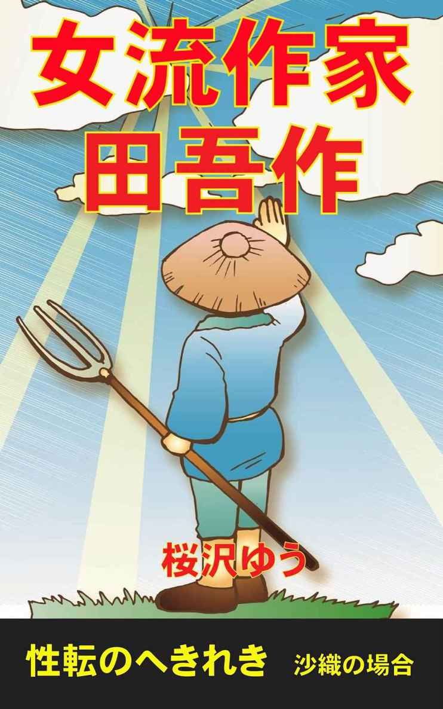

| 女流作家 田吾作 性転のへきれき | |
| 桜沢ゆう | |
| (2015) | |

田吾作という自分の名前は子供の時から大嫌いだった。
姉の紗世と妹の沙耶が美しい名前で呼ばれて誇らしげにしているのを横目に、「タゴサク、ごはんよ。」とか「タゴサク、お風呂に入りなさい。」と言われると、返事をしたくなかった。幼稚園まではさほど気にしなかったが、小学校に上がると、先生を始めとした大人達が僕の名前を見ると「ほう、タゴサクというのか」と笑いを押し殺した感嘆の意を示すことに気づいた。「名前の割には都会的な顔をしているな。」とか、「名前に似合わない外見だな。」と言われたことは5回や10回ではない。
同級生が僕をタゴサクと呼ぶ時に悪意が込められている場合があるということに気づいたのも小学校1年の頃だった。多分、同級生は親からタゴサクという名前に田舎ものや農民を卑しめる響きがあることを教わったのだろう。それにしても何故僕の両親が息子を田吾作と命名したのか理解に苦しむ。息子を苦しめようという意図は無く、見かけや体裁を気にしない純朴な男性に育って欲しいという願いを込めて命名したのだと教えられて両親なりの気持ちがあったことを知ったのは中学に上がった頃だった。
名前とは裏腹に、僕は姉や妹に負けないぐらい可愛いと言われて育ってきた。2才上の姉と1才下の妹は、元バスケットボールの選手だった長身の母に似ていたが、僕は小柄で細身の父にそっくりだった。僕は中1までの身長は男子の平均ぐらいだったが、妹はクラスで一番背が高く、僕が中1の時に、小6の妹は僕より10センチも大きかった。僕は中3で何とか162センチになったが、そこで身長の伸びが止まり大学に入っても163センチしかなく、父と同じ身長だった。母と妹は軽く170センチ以上あり、姉は165センチだった。我が家では腕力も知力も女性が上だった。
小学校高学年の頃から僕は友人に苗字で「森村君」と呼ぶよう強い態度で要求し、仲の良い友人はその通りにしてくれた。困るのは女子達で、誰かが口にした「可愛い名前だわ、子犬みたい」というコメントを真に受けて、僕のことを好意で「タゴサク」と呼び捨てにするようになった。その結果、女子全員と、僕と親しくない男子が僕を「タゴサク」と呼び、親しい男子が苗字で呼ぶ状況になった。そのうちに親しい仲間もタゴサク、タゴサクと呼ぶようになり、結局僕はタゴサクになった。
大学に上がって演劇部に入り、脚本を書く真似事をしているうちに、小説を書くようになった。友人にも誰にも内緒で、ラブロマンスやSFファンタジーを書いた。初めのうちは数千文字のショートショートを書いて「自分は小説を書いた」と喜んでいたが、そのうちに段々長い文章が苦労なく書けるようになった。ひとつのシーンやエピソードが頭に浮かんで書き始めると、結構面白い1万文字程度の長さの文章が書けた。書いているうちに、その次の展開のアイデアが頭に浮かび、書き上げてみると、1万文字程度の文章がもう一つできあがる。それを繰り返すと10万文字の小説は2週間もあれば書けるようになった。
そのうちに、1万文字程度を「章」として、2～3章書いた時点で全体の荒筋を構想するようになり、章ごとの荒筋を書くと、長編小説がすらすら書けることに気づいた。
震災直後に上京し大学に入学して演劇部に入った福島出身の沙織が、震災で失った彼氏のことを想いながら演劇に取り組み前進するという内容の小説を書いたのは大学2年の時だった。自分で読んでも面白いなと思う長編に仕上がり、悦に入っていた時に、数日後がなでしこ賞という文芸賞の締め切り日だと知った。「月に吠える女」という題を付けて、あたふたと応募した。
それまで、僕は単に小説を書いても、ごく親しい友人に読ませるだけで、賞に応募したり外部に出したことはなかったので、特に作者名を書くことはなかった。なでしこ賞に応募するにあたって森村田吾作という本名を書く気持にはなれず、ペンネームを何にしようかと考えたが、主人公の女子学生の名前が沙織なので、そのまま流用して森村沙織というペンネームで応募した。姉の紗世、妹の沙耶という名前が子供の時から羨ましかったこともあり、主人公の名前を沙織にした。前期の試験が近づいていたので、なでしこ賞に応募した後ですっかり忘れていた。
金曜日が前期試験の最終日で、最後の試験が終わったらみんなで飲み屋に集合してワイワイやろうということになっていた。午後2時半に飲み屋に集まり帰宅したのは午後10時だった。
居間では父が一人で座っていた。父は僕を見るや否や「田吾作、お前、なでしこ賞に応募したのか。」と聞いた。
「あっ、そうそう、少し前に小説を送っておいたよ。」
「やはりそうか。実は、今夜出版社の人がここに来ていたんだ。1時間ほど前に帰ったばかりだ。」
「もしかして、入選の知らせだったの？」
「メールを送ったのに返事がないから来たそうだ。森村沙織さんに会いたいと言われて困ったよ。」
「森村沙織用に新しいメールアドレスを作ったんだけど、そのアドレスのメールを見るのを忘れてた。それでお父さんは、森村沙織の本名が田吾作だと出版社の人に言ったの？」
「そうは行かなかったんだ。それにしても田吾作、いきなり大賞を取るなんて凄いな。受賞者は今週の土曜日の授賞式に出なきゃならないそうだ。テレビ局も来る大がかりな授賞式らしい。もし大賞の受賞者が出席できなければ大変な損害になると言っていた。」
「うれしいな。大賞を取れておまけにテレビに出られるなんて夢みたいだ。」
「お前何を言ってるんだ。なでしこ賞はいくつかの女流文学賞が統合されてできた権威ある文芸賞だぞ。男性が女流作家と偽って応募するのはまずいだろう。」
「女性限定なんて書いてなかったと思うけど・・・。」
「お前、女子サッカーのなでしこジャパンを知らないのか？」
「なでしこジャパンを知らない日本人は居ないよ。王貞治とイチローに続く日本の英雄じゃないか。」
「なでしこというと女性に決まってるだろう。応募規定を読めば必ず書いてあるはずだ。とにかく出版社の担当の人が、もし性別を偽ってなでしこ賞に応募して大賞を取ったのなら今年のなでしこ賞全体がぶち壊しになるから訴えてやると息巻いていた。」
「ぼ、僕は訴えられるの？」
「いや、途中まで話を聞いていて、これはヤバイと思ったものだから、森村沙織が誰なのかは曖昧にしておいたんだ。今日来た出版社の担当者は、森村沙織の正体はワシではないかと疑っているようだった。大賞の取り消しの可能性を含めて上司と相談すると言って帰ったが、その場合は性別詐称によって被った被害を損害賠償請求することになると息巻いていた。」
「どうしよう。僕、性別詐称で訴えられたりしたら就職も出来なくなるよ。沙世姉ちゃんか沙耶が書いたことにできないかな。」
「沙世か沙也だと授賞式でインタビューされると、自分で書いたのではないことがバレるだろうな。あいつらは母さんに似て頭の中が完全に理科系だから小説家のフリをさせるのは無理だよ。ワシかお前が出なければ無理だ。」
「頼む、父さん。女装して出てくれ。父さんは小説家になりたかったんだろう。この際、女流小説家でも良いじゃないか。」
「バカ言うな。そんなことをしたら会社にも行けなくなる。お前たちの学費も払えなくなるんだぞ。お前がしたことなんだから、責任を取って女装しろ。」
父と僕が大きな声で女装を押し付け合っているのを聞いて、母と沙世と沙耶が居間に集まってきた。母は出版社の人が来たときにお茶を出したので大体の状況は理解しているようだった。父が3人に事情を説明したところ、沙世と沙耶は詐称問題よりも僕の小説が大賞を取ったことに驚いて大喜びしてくれた。
「お父さんがはっきり言わないから出版社の人が怒ったのよ。もう一度会って正直に全部話したら相談に乗ってくれると思うわ。田吾作にとっては凄い名誉だしチャンスなんだから。大賞を取ったら小説が何十万部も売れるんじゃないかな。10万部売れて、一冊100円の印税が入ったら、ええと10かける100に万をつけると・・・。ま、まさか！1000万円よ。50万部売れると5000万円。どんどん小説を書けば億の金額になるかも知れない。凄いわ、田吾作。これからは田吾作が森村家の大黒柱よ。」
沙世に大げさに褒められて悪い気はしなかったが、これからは僕が大黒柱という言葉を聞いて、父ががっくり肩を落としているのが目に入ったので、視線で沙世に注意を促した。
「印税が入ったら家のローンを返せるわ。田吾作、頼りにしてるわよ。」と母に言われて、大賞を取ったことの重みをヒシヒシと感じた。
「お兄ちゃん、昔から田吾作って名前が好きじゃなかったよね。この際、名前を沙織に変えてしまえばいいじゃない。お兄ちゃんは可愛い系のチビだし女装すれば女で通るから授賞式に出ればいいのよ。それに、そんなに儲かるんなら就職する必要も無いわ。これからは沙世・沙織・沙耶の三姉妹として仲良くやっていこうよ。」と沙耶が言った。
「つまらない冗談を言ってると印税が入っても何も買ってやらないぞ。」と脅しておいた。
よく考えてみると、とにかく僕がなでしこ大賞を取ったということは凄いことなのだという喜びが膨らんできて、それ以外のことは何とかなるような気がしてきた。明日にでも父が出版社に電話してアポを取り、父と僕が出版社を訪問して率直な話し合いをしよう、ということになった。
みんなから受賞作を読ませてくれとせっつかれた。沙織という名前の女性の第一人称で書いた小説なので家族に読まれるのは少し恥ずかしかったが「月に吠える女」のファイルの入ったメモリースティックを渡して各々のスマホやPCにコピーして貰った。
＊＊＊
土曜日の朝、布団の中でぐずぐずしていると母が起こしに来た。
「田吾作、早く着替えて下りて来なさい。今、出版社の方が見えたのよ。」
僕は急いで顔を洗い、ティーシャツと短パンで居間に行った。
昨夜来た出版社の担当者の山本さんとその上司の杉村という課長が一緒に来訪していた。父と僕が対応すればよいのだが、何故か沙世と沙耶も部屋の隅の座布団に座っていた。
「上から沙世、田吾作、沙耶です。」
と父が一人一人を指さして紹介した。
「ほう、田吾作さんですか。珍しいお名前ですね。」
と課長が笑うのを我慢しながら社交辞令を言った。課長は咳払いをしてからネクタイを締め直し、真剣な表情で父の方を向いて話し始めた。
「昨夜、担当の山本から、なでしこ賞の大賞に選ばれた森村沙織さんは実は50代の男性のようだ、と報告を受けて仰天しました。来週の土曜日の授賞式のセッティングは完了しており、選考委員の有名な先生方の書評が書かれた印刷物も完成しています。現時点で受賞者を変更するのは不可能です。仮に受賞を辞退されても当社は大損を被ることになり、信用を失います。辞退の理由が、性別詐称だということになれば、当社としては損害賠償を請求せざるを得なくなります。そこで、編集長とも協議した結果、森村沙織さんがまだ戸籍上女性じゃなくてもなでしこ大賞の権利はあるんじゃないか、ということになりました。すなわち、受賞者が性同一性障害でご自身を女性と認識し性別の変更途上にあるなら現時点での戸籍上の性別には目をつむろうという考え方です。」
課長が一気にしゃべった。
「つまり、女装をして授賞式に出ればよろしいんですね。」
と父が念を押した。
「そういうことになります。授賞式と祝賀会、それにテレビ・新聞・雑誌の合同インタビューが当日実施されます。衣装や特殊メイクは当社で手配しますので、とにかく当日は女性として対応してください。報道陣から男性ではないのかとの質問が入る可能性が高いですが、それに対しては、当社から性同一性障害で性別の変更途上にある作家は、まだ戸籍上の性別変更が完了していなくても女性と見なすとのコメントをします。その場では森村沙織さんの性別について特定することは避けます。」
「その日だけ凌げば大丈夫なのでしょうね？」
父が質問した。
「その後の取材要求については当社が窓口になり、極力文書やメールのみで対応します。勿論、性同一性障害でないことが発覚した場合に問題が起きたら森村沙織さんご自身の責任となります。万一そうなれば当社も性別詐称の被害者の立場で対応することになりますから、その点はご了承ください。」
と課長が答えた。
父は暫く沈思黙考してから僕の方を向いて言った。
「課長さんが持ってこられた案には誠意が感じられるし、出版社として譲れる限界だと思うな。森村沙織として何も手を打たずに賞を辞退して訴訟を受けるのでは脳がなさ過ぎる。授賞式の日は精一杯演技をして、ご迷惑をおかけしないように頑張るのが筋だ。」
「森村さん、ご理解頂きありがとうございます。森村さんは小顔ですし、プロのメイク技術は素晴らしいですから、その体格だと女性に見せることが可能です。あと一週間ありますので、ボイストレーニングで女声の出し方を訓練すれば、きっと大丈夫ですよ。森村さん、ご一緒に頑張りましょう。」
と課長が父の両手を取った。
「田吾作、試験が終わったばかりだから当分暇だろう。頑張ってくれよ。」
と父が言うのを聞いて、課長と山本が飛び上がって僕を見た。
「もしかして、森村沙織さんの正体は息子さんの方なのですか。」
「なでしこ賞が女性作家限定とは知らずに、気軽に女性のペンネームで応募してしまってご迷惑をおかけしてしまいました。すみませんでした。」
僕は告白して素直に謝った。
「沙織さんはおいくつですか？」
「19才です。来年の3月に20才になります。」
「身長体重とスリーサイズは？」
「163センチ48キロですが、スリーサイズって何ですか？」
「いや、今日の所は結構です。良かったな山本。これで救われたな。」
課長が担当の山本の手を握り2人で喜び合っていた。
「半分肩の荷が下りました。この沙織さんなら楽勝です。特殊メイクも不要でしょう。」
と山本が言った。
「それでは沙織さん、月曜日の10時に当社までお越し頂けますか。採寸、衣装合わせの後で近くのスタジオにご同行頂いてボイトレを開始しましょう。」
「承知しました。」
父が勝手に僕に代わって即答した。
「でも課長、この方なら隠蔽工作を省略できるんじゃないでしょうか。」
山本が課長の耳元でボソボソ囁き、2人で暫く何かを議論していた。
「そうだな、それで行こう。」
と課長が山本に言った。
「沙織さんについて無駄な隠蔽工作をすると却って疑惑を招きますから、月曜日は女性の服装でご来社ください。山本に指摘されたのですが、それが沙織さんご自身にとっても後々最もリスクが小さい方法と思いますので、どうぞよろしくお願いします。」
「ちょっと待ってください。月曜日に女装して東京に来いと言うことですか？それは無理です。勘弁してください。」
「男性として来社されて、うちの社員に見られた上で女装して一日一緒に行動する方が、沙織さんにとっては却ってお辛いかも知れませんよ。スカートでご来社になれば、社員の殆どは、その女性が単に今年のなでしこ賞の森村沙織先生だと自然に認識するだけです。沙織さんが性同一性障害の作家であって戸籍上は男性だと知っているのはごく一部の関係者だけに限定できるわけです。」
「その一部の関係者の中でも、性同一性障害というのが嘘であることは知っている人は更に人数が限定されると言うことですか？」
と僕は課長に聞いた。
「沙織さん、もう一度申し上げますが、私と山本も、性同一性障害というのが嘘と考えてはいません。沙織さんはご自身を女性と認識されているからなでしこ賞に応募された、戸籍の変更が受賞までに間に合わなくても見逃そうという認識です。それを、もし嘘だったとおっしゃるなら、性別詐称の損害賠償請求に進みます。よろしいですね。」
「よく分かりました。沙織には後でよく言って聞かせます。月曜日には新人女流作家の森村沙織として御社に行かせますのでご安心ください。」
父が課長にきっぱりと言い、出版社の2人は穏やかな表情を見せた。
「それでは沙織さん、月曜日にお目にかかります。」と言って2人は帰って行った。
「田吾作、観念しろ。月曜日には森村沙織という女性として出版社に行きなさい。課長さんに言われた通り、それが一番安全だし簡単だ。」
「お父さんは他人事と思って簡単に言うけど、僕の身にもなってよ。女装で外出して万一友達に見られたらアウトだよ。学校にも行けなくなる。」
「完璧に化ければ良いじゃない。お化粧してウィッグを被ったら絶対に誰にもばれないわよ。ウィッグは私のを貸してあげるから。洋服も私と沙耶の服の中から沙織に合う服を選んであげるわよ。」
と沙世が僕に言った。
「そうよ。沙織姉ちゃんなら全く問題ないわ。」
と沙耶も言った。
「そうしなさい。沙織が自分で撒いた種なんだからもっと責任を持って頑張りなさい。お父さんも沙世も沙耶も助けてくれるし、私も出来るだけの手伝いをするから。」
母まで沙世と沙耶に味方した
「ちょっと、みんな、僕は田吾作だよ。家族の間ではペンネームで呼ばないでよ。」
「いいえ、大賞の問題が片付くまで、あなたは沙織です。田吾作は海外旅行に出かけて当分日本には居ません。森村家が訴えられて破産するか、印税でリッチになるかは沙織の行動次第なのよ。沙世、沙耶もいいわね。破産したらあなたたちの大学の学費も払えなくなるのよ。今から沙織とあなたたちは三姉妹よ。沙織を着替えさせてウィッグとお化粧も頼むわね。」
「わかったわ、我が家の一大事だから一致団結しなきゃ。私と沙耶が、沙織を女の子に改造してあげる。沙織、来なさい。服を選んであげるから。」
と沙世が立ち上がった。
「沙織姉ちゃん、行こうよ。」と沙耶にも引っ張られて2階の部屋に行った。
＊＊＊
「沙織、まず服を脱ぎなさい。」
「いきなり女装させようというの？」
「まずは総合的な診断をして工程表を作るのよ。スカートをはくとかお化粧をするとか、手当たり次第にやっても効率が悪いし良い結果も期待できない。女性化のために必要な項目を書き出して作業の優先順位を決める、その後で着手するのよ。」
沙世が方針を提示した。
「さすが沙世姉ちゃん、建築学科の首席だけあって言うことが違うわ。」
と沙耶が感心していた。
僕たち3人は同じ大学に行っている。両親も同じ国立大学の出身で学生結婚、それもできちゃった婚だ。結婚後3年余りの間に3人の子供が出来たので、実家からの援助はあったが「赤貧洗うが如し」だったそうだ。
年齢の近い3人は沙世に生理が始まってからも4畳半の子供部屋で一緒に寝起きしてきたので気心が通じている。幼少期から成績トップで美人の誉れが高かった沙世は僕と沙耶にとって絶対的なリーダーで、今も沙世の言うことには逆らえない。
僕がイジメに合わず楽しい少年時代を過ごせたのは姉のお陰だ。中1の時、同じ中学の上級生が牛耳っているグループから誘いがかかり、使い走りのようなマネをさせられた。ある日「家から5千円持って来い」と言われて途方に暮れたことがあった。家に帰って泣きながら中3の姉の沙世に相談したところ僕の悩みは翌日あっさりと解決した。際立った美人の沙世には熱狂的なファンがゴロゴロしていて、沙世は最強の男子グループのボス格の同級生に「弟の足抜けに力を貸して欲しい」とひとこと頼んだだけだが、その日以降、「悪いグループ」の上級生から僕に声がかかることは完全に途絶えた。
妹の沙耶は成績がトップだけでなく、小学校の時から学年で身長が一番高くスポーツでもトップスターだった。僕とは1年しか違わないので小学校の中学年以降は僕よりも沙耶の方が背が高かった。僕の密かな祈りに反して身長差が第二次性徴によって逆転することは無く結局10センチ以上の差がついてしまった。
沙世と沙耶は県下で最難関の公立高校でもトップクラスの成績だったが、自宅から自転車で通学できる大学に進んだ。僕は成績は常に中位で、数段階難易度の低い公立高校に何とか合格し、父母姉と同じ大学で最も難易度の低い学科に滑り込むことができ、何とか面目を保つことができた。
高校・大学の受験勉強では妹の沙耶にお世話になることが多かった。沙世が忙しい時に僕が質問して相手にしてもらえないのを横で見ていた沙耶が教えてくれた。1年下の沙耶に難しい問題が分かるはずがないと思ったが、沙耶は中学、高校に入学すると沙世の教科書や参考書を「気楽に」読んで理解していたようだ。沙耶は僕がどの点をどう理解できないのかを一瞬で見抜き、僕でも理解できるように優しく教えてくれた。運動でも勉強でも、同じ人間なのに何故これほどの能力の差があるのかと神様に文句を言いたくなることもあったが、僕は沙耶を尊敬し兄妹であることを誇りに思っていた。背の高い沙耶は僕をいつも見おろすが、見くだしたことは一度もなく、いつもお兄ちゃんお兄ちゃんと慕って立ててくれる。もし沙耶が傲慢な性格なら僕はいじけていたかも知れない。性格の良い沙耶のお陰で3人の関係が万全に保たれたのだ。なでしこ大賞によって僕は生まれて始めて沙耶から思いやりに寄らず本当に尊重される立場に立てたような気がする。
沙耶は沙世と違って同性のファン層が半端ではない。お陰で僕は高校2年と3年の頃は、中学から僕と同じ高校に進み沙耶に憧れていた女子から「沙耶と兄妹関係にある男性」として特別な敬意と親しみをもって話しかけられることが多かった。彼女たちは僕に異性として興味を持っていたわけではないが、僕は友人から「お前ってどうしてそんなにモテるんだ。」と羨ましがられた。僕のようなタイプの男子（あえて現代用語で言えば癒し系、草食系、可愛い系）を好む女子も意外に多かったので、僕は家でも外でも異性の話し相手には全く不自由しない少年時代を送ったのだった。
「とにかく全部脱いで裸になりなさい。」
僕は言われた通りにパンツまで脱いで素っ裸になった。沙世と沙耶に見られても僕の身体が性的反応を示したことは一度も無く、逆に沙世と沙耶も僕に胸や股を平気で見せる関係だ。
沙世が僕を頭のてっぺんから爪先までチェックしながら口述し沙耶がメモして表計算ソフトにインプットした要作業項目は、外観に関するものだけで30項目もあった。
「手術」と書かれた項目が多数含まれているのを見てドキッとしたが、沙世は普段から理論的に全てを洗い出すのが基本動作なので特に心配はしなかった。
外観以外の要作業項目は僕にとって意味不明な項目を含めて10項目あった。
性格
身のこなし
仕草
歩き方
しゃべり方
発声
生活習慣全般
服装
靴
バッグその他小物
「来週土曜日の授賞式までの7日間でできることは限られているわ。何をどの順番で実施するか、お金がかかる場合は費用の見積もりも含めて案を練りましょう。沙耶は外観の30項目の工程案を作って。私は外観以外の10項目の案を作るから。」
「分かった。すぐに取りかかるわ。」
と沙耶は言って、パソコンに向かった。
「僕は何をすればいいの？」
「作業工程案が完成するまでは沙織に出来ることはないから、私たちの洗濯物を出して、部屋を掃除して頂戴。それから、ミルクティーをお願い。」
1時間後に沙世と沙耶は中間段階での打ち合わせを実施することになったが、僕はすることがないのでテレビの前でごろごろしていた。母に呼ばれて台所でゴボウの皮むきを手伝いながら、受賞作の粗筋を説明した。父は昨夜僕が渡したメモリースティックを自分のノートパソコンに挿入して「月に吠える女」を目に涙を湛えて読んでいた。昨夜寝る前に読み、今日もう一度読んでいるところらしい。
沙世と沙耶が作業を終えて、A4用紙の表と裏に印刷した工程案を持って居間に来た。
「みんな集まってくれる。沙織の改造に関する案をまとめたから。」
沙世の声を聞いて母が台所から来た。父は月に吠える女を2回読み終えたところだった。
「沙世、ちょっと待ってくれ。まずワシから言っておきたいことがある。沙織、ワシは心から感動した。月に吠える女はなでしこ大賞に値する作品だ。ワシも昔小説家になりたかったことがあるが、沙織はワシなんかが決して届かない高みに到達した。お前は素晴らしい感性を持っている。それから、今まで親にも見せなかった沙織の一面に接してワシは心から感動している。お前の親として誇りに思う。」
父の感極まる演説を聞いて、母、沙世、沙耶が拍手してくれた。
「どうもありがとう。そこまで気に入ってくれて僕は凄く嬉しいよ。但し、月に吠える女に出てくる沙織は、この作品の登場人物であって、僕自身じゃないから誤解しないでね。」
とコメントしておいた。
「私も読んでいて、主人公は沙織姉ちゃん本人のことだとすぐに分かったわ。ストーリーも面白かったけど、すぐに感情移入してしまって自分自身が主人公として体験しているみたいで、気がついたら読み終わってたって感じ。沙織姉ちゃんが私の身体に乗り移ったみたいな気がしてドキドキしたわ。」
沙耶が理科系とは思えない的確な表現で賞賛してくれたのでとても嬉しかった。僕は以前から読者を感情移入させる小説を書くということが最も重要だと思っていたからだ。
「私は沙織の喜びと悲しみが交互に押し寄せてきて、沙織に哀れを感じたわ。沙織が女性的なのは姉妹に挟まれて育ったからだと思っていたけど、私や沙耶よりも遥に女性らしい感性を持っているのに、男性として生まれてしまったから思い通りに生きられなかった悲しみがヒシヒシと感じられた。もっと早く気づいていれば別の配慮をしてあげられたんだけど、とも思ったわ。」
沙世は言い過ぎだった。月に吠える女に出てくる沙織は女性だから女性らしくて当然だが、あの沙織は僕ではない。沙世の言い方を聞いていると、まるで僕が女に生まれなかったことで苦しんできたみたいじゃないか。
「あの沙織は僕じゃないんだってば。」
僕は少し強すぎる口調で沙世に反論した。
「いいえ、沙織は気づいてないでしょうけど、あれは沙織自身よ。」
沙世がそう言い放ったので僕のストレスレベルが上昇した。
それに気付いた沙耶が、「さあ、工程表の話にしましょうよ。」と大きな声で言って、印刷した用紙を全員に配った。
「エンドポイントは、授賞式の日の沙織姉ちゃんの女性度です。7日間で出来ない項目は捨てる。例えば女性ホルモンはこれから病院に行って注射して貰っても来週土曜日の時点での外観的効果は殆ど期待できないからボツ。手術は費用がかかりすぎるし時間的にも難しいから喉仏以外はボツ。喉仏除去は男性と見破られない対策として効果絶大だから優先度１よ。それから顔面の脱毛も優先度１。午後一番で安いレーザー脱毛クリニックをネットで探して、早速開始する必要がある。顔以外のムダ毛は費用対効果の観点で当初は見送って、カミソリで処理することにする。バストは豊胸手術はお金がかかるし時間的にも難しいからシリコンの疑似バストをネットで今日注文しましょう。ウェストは補整下着を今日注文する。ヒップもシリコン入りのヒップアップ補整下着を今日注文する。性器はタイトなガードルを重ね履きするだけにしましょう。予算が欲しいのはこれだけです。」
と沙耶が発表した。
「いくらかかるの？」と母が心配そうに聞いた。
「できるだけ50万円以内に収まるようにベストを尽くすわ。」
「お母さん、失敗すると破産だし、成功すれば印税が入るのよ。」
沙世の印税という一言で母も納得したようだ。
「私が担当した工程部分にはお金はかからないわ。服や靴や小物は全部私と沙耶と、一部お母さんの物を活用するから。とにかく工程表と私の細かい指示に沿って、全ての行動、発言と表現を一週間で完全に女性化させるから、全員一致協力して頑張りましょう。いいわね、沙織。」
「急に言われても、僕は男だから無理だよ。」
「急に言われても、私、男だったから無理だわ。」
沙世に言い直させられた。
母と沙世・沙耶がタンスの中の僕の衣類を段ボール箱に入れて荷造りテープでシールした。3人の各々が僕に着せられそうな服をどんどん床の上に積み上げ、試着させてからタンスの僕の引き出しに入れた。僕は沙耶が中学の頃着ていた夏物のワンピースに着替えさせられた。
沙耶がネットで見つけたレーザー脱毛クリニックで夕方のアポを取った。
「僕一人では行けないよ。」と言うと、
「私一人では行けないわ。」と言い直させられた後で、沙世が付き添ってくれることになりホッとした。
「外出しようと思っても男物の服は段ボールの中だよ。」と言うと
「私が男性だった頃の洋服は段ボールの中だから外出できないわ。」と言い直させられた後で、
「沙織は女なのよ。スカートで行くのが当たり前じゃない。」と沙世に叱られた。
「ウィッグをすれば今の沙織でもスカートで大丈夫とは思うけど、脱毛クリニックではウィッグを外す方が施術しやすいと思うわ。だからまず髪型を直しましょう。」
沙世の提案で、母が鏡台の前に新聞紙を敷き、3人が櫛とはさみを使って僕の髪をボサボサのザンバラ髪から女性らしいショートヘアに仕上げた。
母が毛抜きで僕の眉を整えようとしたが、沙世が僕の顔をじっと見て1分間目を閉じた後、眉用のペンシルを僕の顔に滑らせた後、毛抜きで大胆にズバズバと抜きまくった。鏡を見ると眉が極端に細くなり、眉の角度が変わってしまっていた。
「助けてくれよ。こんなの僕の顔じゃないよ。」
「助けて頂戴、こんなの私の顔じゃないわ、でしょう、言い直しなさい。眉を細くすることは女性化のために劇的な効果があるのよ。」
「流石建築デザイナーは斬新ね。沙織の顔ががらっと変わっちゃったけど、とにかく女性にしか見えなくなったわ。」
呆気にとられた表情で僕の変貌を見ていた母と沙耶が言った。
「私に相談なしにいきなり抜いちゃうなんて、ひどいわ、ひどいわ。」
女言葉で抗議したが後の祭りだった。
風呂場でボディーソープを使って身体中を泡立て、沙耶が剃刀で僕の全身をスベスベにした。
「女の子にしては陰毛が多すぎるわ。」とつぶやくとハサミを持ってきて毛の量が半分以下になるまで「散髪」した。沙耶に陰部を見られても普段は平気だったが、足を広げさせられて肛門の周囲や陰嚢の裏に繰り返し剃刀を当てられると、不覚にも僕の股間のものが硬く屹立してしまった。
「沙織姉ちゃんったら女の子になった途端にこんなになるんだから。」
沙耶が人差し指で弾いたので僕は身体中が真っ赤になった。
髪と身体を乾かして、沙世が選んだフリル袖のワンピースを着た。青地に赤い炎のような縦縞が入ったプリントのワンピースでスカートの裾はレースで縁どられていた。アンダーバストの位置のウェスト部分がゴムで絞まっていて、裾では十分なフレアーがあるデザインだ。
沙耶のアイデアで、スポーツブラに内装されたバッド以外には全く詰め物をせず、わざと極端なペチャパイにしてみた。
「沙世姉ちゃんも私も胸は小さめだし、沙織姉ちゃんの胸を大きくしようとすればシリコンの詰め物も大きいのを買うことになって高くつくでしょう。女性ホルモンの場合も豊胸手術の場合もペチャパイの方が楽で早いから、悪いけど沙織姉ちゃんにはペチャパイ三姉妹の一員になってもらう。」
沙耶が説明した。
しっかりした黒のガードルを2枚重ねではき、その上にストッキングをはいた。
「思っていたイメージとは全く違う女性が出来上がったわね。」
というのが母の感想だった。
「大人しい癒し系の女の子のイメージを描いていたけど、それとは正反対のボーイッシュな女性になったわ。」と沙耶。
「眉とヘアスタイルの効果ね。今日はウィッグを使うのはやめて、このまま脱毛クリニックに行こうよ。」と沙世。
「ウィッグせずに外出するのは許して。僕、じゃなくて私だと判ると困るもの。」
僕が沙織言葉で反論した。これでは普段通りの自分がスカートをはいているだけだ。「田吾作が女装しましたよ。」と街中に言いふらすのと同じことだ。
「別人にしか見えないから大丈夫よ。じゃあ、脱毛クリニックのアポに遅れないようにそろそろ出かけましょう。」と沙世。
「私には無理よ、勘弁して。」と必死で抵抗したが沙世に引っ張られて階段を下りて玄関へと向かった。
沙世は何を思ったのか居間をのぞき込んで、父に
「お父さん、大学の同級生の今井美智子さんよ。」と言って僕を指さした。
すると父が僕を見た上で
「沙世がいつもお世話になっています。」と頭を下げた。
「ほら、言った通りでしょう。」
と沙世が僕に言ってから父の方を向いて種明かしした。
「お父さん、今のは冗談で、これは沙織よ。」
「ほ、本当に沙織なのか、うそだろう。」
父が絶句した。父が他人と思うぐらいなら近所の人に見られても大丈夫だろうと安心した。
「そうそう、お父さんにお願いがあるのよ。表札に田吾作の名前があるでしょう。沙織に書き直してくれないかな。大賞の発表後に誰かが見に来るといけないから。」
「よし、まかせておけ。」
父が快諾した。
沙世から借りた5センチのヒールの白いサンダルで家を出た。気温は昨日と同じぐらいなのに下半身に風が通るので実に涼しい。最近、男子にスカートをはかせると冷房代が節約できるという内容の小説を読んだが、実際に自分もはいてみると、夏はスカートに限るという気がした。
沙耶が予約してくれたレーザー脱毛クリニックは駅前の小さな雑居ビルの5階にあった。道路から見上げた時には、こんないかがわしいクリニックで大丈夫だろうかと思ったが、受付の中は普通の病院よりも豪華でしっかりした造りなので安心した。
「今日予約した森村沙耶です」
沙世が受付に言うと僕たちは小部屋に通された。患者というか、顧客が他の客と顔を合わせないようにするために小部屋に通すシステムになっているようだ。
「沙耶の名前で予約しちゃったのね。」
「しいっ。森村沙織の名前はもうすぐ有名になるから、その名前で髭を脱毛するのはまずいでしょう。」
沙世に耳元で言われた。
間もなく白衣の女性が小部屋に入って来た。
「今日ご予約を頂いた森村さまですね。顔面の脱毛のお試し2回コースということでよろしいでしょうか。」
「はい。2回やっていただいた上で希望する場合は回数無制限のコースを特別価格で申し込めるキャンペーン中と聞きました。」
沙世が沙耶から言われた通りに言った。
「その通りです。今月限定のキャンペーンとなっています。脱毛を希望されるのはこちらの妹さんの方ですね。」
と僕を見て、僕の髭剃り後に指を滑らせた。
「かなり硬くて太い毛ですので、完全に脱毛するまでに10回以上のレーザー照射が必要です。当初5回は1週間置きで予約を取っていただき、その後は毛周期を考慮して長めの間隔でお越しになるのが良いかと思います。」
「分かりました。」
「それではレーザー脱毛についてご説明します。」
パンフレットを見せながら若干くどい、詳細な説明をしてくれた。後でクレームがあった場合の為にいわゆるインフォームドコンセント的な手続きなのだろう。
その女性が部屋から出て行って沙世と2人になった。
「妹さんと言っていたけど、髭を見て男性と思わなかったのかな。」
「失礼ですが男性ですか？と聞けると思うの。万一女性だったら大変なことになるわよ。お世辞というよりはリスク回避で妹さんと呼んだだけよ。」
沙世の冷静な状況分析を聞いて納得した。
その次に部屋に入ってきたのが本物の女医で、ごく形式的な会話を1～2分して診察は完了し、間もなくレーザー治療が始まった。当初強さを3段階に変えて照射し、肌の経過を15分ほど見てレーザー照射の強度が決定された。冷却用のジェルを塗ったレーザー照射ヘッドが僕の顔面を少しずつ移動する度にバシッという音がしてビンタで強くはねられたような痛みが走る。時々硫黄臭というか、毛が焼けた臭いがする。僕は髭は相当薄い方だが鼻の下はひげそり後が少し青く見える。その部分を照射する際が最もバシバシと大きい音がして痛みも強かった。
レーザー治療が終わったとき、僕の顔面は母親にお尻をペシペシと半時間も叩かれ続けた男の子のお尻のような感じだった。正直なところ、これを毎回やられるとなると、マゾになるかも知れない。でも僕の場合は今週土曜日のためだけだから一回限りで終わるだろう。沙世が受付で会計を済ませ、クリームを貰ってクリニックを出た。
沙世は僕の肌を手で触った。
「確かにすべすべになったわね。焼けた毛が焼けぼっくいのように黒いボツボツになっているところがあるけど、これならコンシーラーで隠せるわ。」
帰宅すると玄関の表札から田吾作が消えて、沙世、沙織、沙耶の3人の名前が並んでいた。あたかも自分が本当に森村家の次女に生まれ変わったかのような錯覚に襲われて変な気分だった。
家に上がると母と沙耶が飛んできて、僕の顔面を手で触りまくった。
「これならコンシーラーを使えば大丈夫よ。」
母と沙耶は満足そうだった。
僕の本当の特訓が始まったのは午後8時だった。沙耶は僕と沙世がクリニックに行っている間にシリコンブレストや補整下着などのネットでの注文を完了し、土曜日の午後8時から授賞式の日までの一時間刻みのスケジュール表を作っていた。午後8時から10時までは「話し方教室」となっていた。
出演者が女性だけの現代劇の脚本を沙耶がネットで入手し、僕は全出演者の台詞を言わされた。演劇部だから台詞を喋るのは慣れているが、女性の役を演じたことはないので気恥ずかしかった。台詞ごとに沙世と沙耶から厳しいダメ出しが入り、僕は何度も言い直さなければならなかった。大変だったのは声の高さだった。配役ごとのキャラクターと声の高さを沙世と沙耶が設定し、僕はアルトからソプラノまでの登場人物の一人一人になりきって、オバサンから小学生までを演じさせられた。途中で声がかすれて出なくなったので、10時までの予定を9時半で切り上げることになった。
「話し方教室は毎晩続けるけど、普段はこの美和子の声とキャラでしゃべるのよ。美和子のキャラが沙織に一番近いから。」
沙世が命令するように僕に言った。
美和子はその現代劇の主役の妹の役で、2番目にセリフが多い。僕が不満そうな顔をしているのを見て沙耶が言った。
「私も同じ事を提案しようと思ってた所なの。美和子は沙織姉ちゃんの性格とそっくりだから丁度良いと思うわ。」
二人に言われて仕方ないので、「わかったよ。」と言ったところ、美和子の甘えた声で「わかったわ」と言い直させられた。
沙耶の作ったスケジュール表によると「話し方教室」の後は「お肌教室」となっていた。
「沙織姉ちゃんの肌を一週間で女性の肌にしなきゃならないから。」と沙耶が言った。「最初はお風呂からよ。」
沙耶に言われて僕は裸になり沙耶と一緒に風呂に入った。狭い風呂場に大柄な沙耶と一緒に入るのは大変だ。洗い場で斜めに向かい合って座り、クレンジングを教えられた。まずクレンジングフォームを専用のネットで泡立て、泡を掌にとって円を描くように顔をこする。
「こすりつけちゃだめ。掌と肌の間の泡を介してクレンジングするのよ。」
と沙耶が掌に泡を乗せて僕の顔をクレンジングした。
「ほんとだ、何か気持ちいい。」
僕は沙耶を真似しながら額やこめかみ、眉間と目の下を含め、20分近く泡マッサージを続けた。
「お母さんも沙世姉ちゃんも私も基本的にオイルクレンジングは使わない主義なの。母娘3人ともこの天然でマイルドなクレンジングフォームで時間をかけて毛穴の中まで綺麗にするのよ。今日からは母娘4人共通ね。私はウォータープルーフのマスカラを使った時だけはスティックのリムーバーを使ってクレンジングするけど、それは明日のお肌教室のメニューに入れとく。」
「うわぁー。肌がプニュプニュになってる。」
ぬるま湯で泡を落とした僕の顔は今まで経験したことの無い感触になっていた。肌がふわふわしていて、ベトツキ感はないのに指が肌に吸いつくような感じがした。
「私のほっぺを触ってみて。」
沙耶に言われて、同じように沙耶の頬にタッチしたところ、その違いに圧倒された。まず、先ほど自分の肌をプニュプニュと表現したのは行き過ぎだったと思った。沙耶の頬は更に豊かな弾力感と吸いつくような感触があり、それでいて柔らかく、スベスベだった。
「こんなに違うんだ・・・。」
「わかった？これが女の子の肌なのよ。沙織姉ちゃんは女性ホルモンを使わない限り私と完全に同じ肌質にするのは無理なの。角質層の保水力だけじゃなく、表皮と真皮の厚みが少ないから、どうしてもプニュプニュ度が少なくなっちゃうの。それは顔だけじゃなくて、首、腕、手の甲、掌、胸、背中、お腹、お尻、脚、足、お肌全部にあてはまることよ。だから、これから一週間、沙織姉ちゃんは女性ホルモンが足りない分を補うために、外から体全体のお肌に潤いを与える必要があるの。これがお肌教室よ。」
「そこまでしなきゃならないの？」
「沙織姉ちゃんはまだ分からないわよね。でも多分2、3日で分かるようになると思うわ。女性と男性の違いで最もごまかせない部分はお肌だってことが。」
「ふうん、そうなんだ。」
「美和子はそんな言い方はしないわよ。」
と言って、美和子らしい発声と表情で
「ふうん、そうなのね」と言い直させられた。
シャンプーの後、トリートメントをして髪を濡れタオルで覆ってからボディーソープを使った。沙耶が剃刀で僕のお尻や足の指のムダ毛の剃り残しをきれいにした。
「予算を抑えるために脱毛は顔だけにしたけど、やっぱり腋毛の脱毛もしなきゃだめね。これだとノースリーブは無理だもの。」
「ねえ、もうそろそろお風呂を出ないの？」
「トリートメントをもう10分このままにしたいから」
沙耶に促されて湯船に一緒に入った。先ほど肌理論を教わって、それまで気がつかなかった沙耶の肌の美しさが目についた。狭い浴槽で肌を寄せ合っていると、真っ白で透き通るようなプリンプリンの沙耶の肌と、僕の肌がどれほど違うものかを見せつけられる気がして、僕は強い劣等感を感じた。スポーツや勉強や身長で僕が沙耶の足元にも及ばないことは何年も前から分かっていたが、肌の差は更に決定的な劣等性のように思えた。
「駄目だよ、僕なんて絶対敵わないよ。」
と泣きべそをかいた。
「美和子の言葉で言いなおしなさい。私、今は少し敵わないけど、絶対に女らしい肌になってやるわ、って。」
と沙耶が両手を僕の頬に被せて、顔を近づけて笑顔で言った。僕は元気が出て来て「私、頑張るんだから。」と美和子の声で言った。
風呂を出ると、沙耶と同じようにバスタオルで胸を巻き、化粧水をつけてからドライヤーをかけた。その後、居間に戻って乳液と美容液の使い方を教えられた。
「今日はパックの仕方を教えるわ。7枚入りで、今日は私も1枚使ってお手本を見せるけど、残りの6枚は授賞式の前夜まで沙織姉ちゃんが自分で毎晩使うのよ。化粧水の後、すぐに使うのがいいから。」
と言って、ヒアルロン酸とプラセンタのパックの使い方を教えてくれた。
「次はこの保湿クリームを全身に塗ってね。お風呂の中で説明した通り、沙織姉ちゃんのお肌には外から潤いを供給して、他の女性に負けないプルンプルンの赤ちゃん肌に近づけることが大事なのよ。」
沙耶に言われるままに僕は保湿クリームを塗り、背中など自分では塗りにくい部分を沙耶が手伝ってくれた。
母と沙世も居間に来て、保湿クリームを塗っている僕を囲んでスキンケア談義を弾ませた。僕は美和子のしゃべり方でクレンジングフォームを使った後の感動を話した。
「あのクレンジングフォームは高いんだから親指大のクリームを泡立てネットで使うのよ。」
母に念を押された。
「女が1人増えたら支出が増えるわ。」
という母を沙耶が
「お母さん、印税、印税。」
と慰めた。
お風呂から出てきた父が居間に入って来て、バスタオルを胸に巻いて顔を白いパックで覆った2人の女が母と沙世と一緒に居るのを見て居心地悪そうにしていた。
「昨日までは2対3だったのが1対4になると、女の園に来たみたいで圧倒されるな。」
父がしみじみと言った。
「今日のお肌教室はこれでおしまい。明日からも頑張ろうね、お姉ちゃん。」
沙耶に言われてパックを外した。母が用意してくれた厚めのショーツをはいて、白いネグリジェを着た。胸元に刺繍がありレース袖がヒラヒラしている。膝より少し長めのスカート丈だ。
「お母さんがスリップを着て歩いてるみたいだな。沙世と沙耶はパジャマなのに、どうして私だけネグリジェなの？」
美和子の声で言ったつもりだったが、母と沙世から同時に「言い直しなさい」と言われた。
「あと6日間しかないのよ。1時間でも長く身体をスカートに慣れ親しませなきゃ。」
と母が答えた。
沙世、僕、沙耶は一緒に部屋に戻った。赤いパジャマのスリムで女らしい沙世、ブルー系のパジャマの長身の沙耶に挟まれて、一番小柄な僕が白いスリップのようなレースのワンピースドレスを着て立つと、昨夜までと何かが違うのを感じる。森村家唯一の男の子として姉妹からある種の敬意と特別扱いを受けて育ってきた僕が一転して三姉妹のように同列で比較されると、何を取っても沙世・沙耶に及ばない僕は委縮してしまう。その上、慣れないことを半強制的にさせられて一挙手一投足ごとにダメ出ししてやり直させられる状況がこれから一週間も続くと思うとやりきれない気がした。
「三姉妹って楽しいよね、当分沙織にはちょっと手間がかかるけど。」と沙世。
「沙織姉ちゃんになって、妹ができたみたいで嬉しいわ。私、前から妹を一度持ってみたかったの。」
と沙耶が言ったので、
「見てらっしゃい。印税をもらって、沙耶にお姉さまと言わせてみせるから。」
と僕が言い返して3人で大笑いになった。
＊＊＊
日曜の朝は「メイクアップ教室」から始まった。驚いたことにメイクアップ教室の第1レッスンは洗顔だった。毎朝顔を洗うのは寝ている間に出た汗や目ヤニを洗い流すためだと思っていた。
「昨日の夜あんなに綺麗にして寝たんだから目の周りだけササッと洗えばいいんじゃないの？」
「とんでもないわ。夜寝ている間にお肌の常在菌が皮脂を分解して変性皮脂ができるから、放って置くとお肌のバリア機能や保水力が低下したり、毛穴が開いて肌理が乱れるのよ。森村家の女性は脂性肌ではないから、毎朝洗顔料を使うと却ってお肌を傷めてしまう。お湯を使うのも同じように皮脂が落ちすぎる。だから人肌より少し温度が低いぬるま湯で丁寧に洗うのよ。」
洗面所でぬるま湯を出して、いつもの調子でバシャバシャ・ゴシゴシと洗った。
「バカ、絶対にゴシゴシやっちゃ駄目よ。お肌がメチャメチャになるじゃない。」
余程のことでもない限り僕をバカ呼ばわりしない沙耶が厳しく言うので、僕は自分が一体どんなミスをしたのだろう、と当惑した。
「こうやって、お肌と掌の間に挟んだ水でこするのよ。顔を手でこするんじゃないよ。皮脂汚れが溜まりやすい場所は指の腹をやさしく使ってこんな風に洗うのよ。」
沙耶を一生懸命真似して何とか洗顔を終えた。母や沙世や沙耶は毎朝こんな風にして見えない変性皮脂という敵と戦ってきたのか、と感心した。
次にタオルで顔を拭くと、また頭上から叱りつけられた。
「バカ、何するのよ」
沙耶の怒りを買うことをした心当たりのない僕は上目づかいで聞いた。
「私、何かいけないことをしちゃったのかしら。」
「タオルで力任せに擦るとその度に大切な角質層がゴリゴリと剥がし落とされるのよ。女ならそれを想像しながらタオルを使いなさい。」
タオルで肌を擦るのではなく、押し付けて水分を吸収して見せてくれた。
「なるほど、そういうことなのね。よくわかったわ。」
僕は心から言った。
要するに女性は肌に対処するに当たっては顕微鏡レベルでの現象を頭の中にイメージしているのか。非常に科学的なのだな、と感心したのだ。しかし、沙世や沙耶のように特別に頭脳レベルの高い女性はとにかく、世の中の全ての女性がそこまで科学的に行動しているとは思えない。
洗顔の部が終わってメイクアップ教室の第2部が始まった。
「洗顔して顔を拭いたら即化粧水、これは基本中の基本。遅くても10分以内、できるだけ1分以内に化粧品を使うのよ、いいわね。」
まだ言いつけを聞かなかったわけでもないのに沙耶が強い口調で言った。
「朝は忙しいから化粧水の後のスキンケアを手早くするテクニックを確立するのが重要よ。私は沙世姉ちゃんの真似をして、このオールインワンクリームを使っているわ。化粧水・乳液・美容液・クリーム・パック・化粧下地の6つを一緒にしたというコンセプトのジェルだけど値段が安いから気軽に使えるの。化粧水を使った後で、このジェルを大目に2回塗りするのがコツよ。付けた後数分したら、そのまま直接リキッドファンデを乗せても大丈夫。でも沙織姉ちゃんの場合、完璧に脱毛するまでは、コンシーラーを使ってからファンデを塗ることになるけど。まず私がメイクしてあげるから、じっくり見て覚えてね。」
僕は動画撮影モードにセットしたカメラを鏡に向けてシャッターを押しておいた。後で復習するためだ。アイメイクは非常に複雑で、特に下瞼のラインについては「ここまでやるのか」と思ったが、とにかく沙耶のテクニックを学ぼうと必死だった。
「沙世姉ちゃんと私は必要なときにしか使わないけど、沙織姉ちゃんはトレーニングの意味で毎朝ウォータープルーフのマスカラを使うのよ。」
生まれて初めてマスカラというものを睫毛に塗った。何度か沙耶に直してもらいながら、何とか完成した。
「コンシーラーを使ったし、マスカラを多めに塗ったから私たちの年齢にしては厚化粧だけど、一応これでメイクアップは完成よ。慣れれば慣れるほど薄化粧で済むようになるわ。じゃあ、いったん休憩しましょう。」
「午前中いっぱいメイクアップ教室と書いてあったけど、早めに終わって良かったわね。」
「何言ってんの、まだ始まったばかりよ。紅茶でも飲んでから再開よ。」
居間を通ると父が僕の顔を見て言った。
「キャバクラの姉ちゃんが来たのかと思ってドッキリした」
沙耶は父に軽蔑の視線を投げかけてから僕に言った。
「マスカラのせいよ、気にしないで。」
「恥ずかしいのを我慢してお化粧してる私に、あんな無神経なことを言うなんて酷いわよね。」
僕は沙耶に父の悪口を言った。
「男なんて誰でもその程度よ。」
と沙耶が答えたので僕は複雑な気持ちがした。台所に行くと丁度沙世が紅茶を作ろうとしていたところだった。
「チークはもう少し明るくてもいいかな。」
「目尻のここにペンを入れたらもっと可愛いかも。」
「リップは沙耶がいつも使ってる色でもいいんじゃない。」
「コンシーラーは少なめで大丈夫だったわよ。昨日クリニックから帰った時に気になった黒いブツブツは昨夜の洗顔で殆ど落ちたから。」
「オールインワンジェルは一旦乾いてから2回塗りするのがコツね。」
「アマゾンの最安値より福太郎の方が安かったわ。」
「あれはコスパ抜群よね。森村母娘の秘密兵器だわ。」
「元々コスメコムで私が見つけたのよ。」
「今度のリキッドファンデはすごく使いやすいわ。」
化粧品だけでこれほど話が盛り上がるとは思わなかった。これまでは母と沙世、沙世と沙耶、母と沙耶が時々化粧品の話をしているのを見かけたことがあるが、大声でワイワイ話していると言う記憶は無かった。僕が興味の無い話題だから気づかなかったのかも知れないが・・・。僕はまだ化粧品に関する知識が浅いのであまり口を出せなかったが、実際に自分にメイクアップをした上で聞くと興味がある話題なので楽しかった。
「あら、お父さんのことを忘れてたわ。私は昼食の支度に取り掛かるから、沙織、お父さんに紅茶を出してあげてくれる。」
と母に言われた。
「お前があっちの世界に加わってしまうと、ワシもちょっとさびしいな。」
紅茶を持っていくと父がそう呟いた。
部屋に戻って「メイクアップ教室」が再開した。
「次は入浴前のクレンジングの練習よ。まずはこのメイク落としシートで一回軽く拭き取るのよ。」
沙耶はクレンジングシートを僕の顔に当てて、せっかく完成したばかりのメイクアップを落としてしまった。
「さあ、鏡を見てごらんなさい。お化粧は落ちてるかな。」
「ほとんど落ちてる。でも睫毛が黒いままだわ。」
「そうね、表面的には殆ど落ちてるわね。でも毛穴の中には化粧品や汚れや変性皮脂も何もかも一杯詰まってるから、それを昨日と同じようにクレンジングフォームでたっぷり時間をかけて落とすのよ。その前にマスカラを落としましょう。普通のマスカラはメイク落としシートで落ちなければ軽くクレンジングクリームを使って落とすけど、このウォータープルーフのマスカラはクレンジングクリーム程度では落ちないの。で、このスティックタイプのオイルをつけるのよ。」
沙耶が僕の睫毛にマスカラを塗るような感じでスティック状のものを使った後、10分ほどしてコットンで拭くとウソのように綺麗になった。
「本当なら今からお風呂に入ってクレンジングフォームを使いたいところだけど、時間が惜しいから省略して、朝の洗顔から始めるわよ。さあ、今日教わった通りにやって見せて。」
僕はぬるま湯の洗顔、顔拭き、化粧水、オールインワンジェルの2回塗り、コンシーラー、リキッドファンデ、と思い出しながら自分でやってみた。アイメイクとリップは何度やってもうまく行かず、5、6回やり直しをさせられた。やっと仕上がったところで母から「沙織、沙耶、ごはんよ。」と声がかかったので降りて行った。
「キャバクラ嬢というよりは田舎のコンパニオンみたいだな。」
その言葉を聞いた母娘4人から一斉に軽蔑のまなざしを向けられて父は俯いた。
「自分でやったのね。まあ、最初は仕方ないけど、これじゃあ外出できないわね。」
母が客観的に評価した。
「午後からネイル教室の予定だったけど、メイクアップ教室を延長するわ。」
昼食が終わって沙耶と部屋に戻ろうとしたら母から声がかかった。
「沙織、昼食の片づけを手伝ってね。」
台所で並んで立ち洗い物をしている時に母が僕に言った。
「今まで母さんも沙世や沙耶も、単に男の子だからと言う理由で沙織に遠慮したり、悪気はないけど、ある意味で差別してきたと思うの。昨日からは3人とも完全に並列で、お化粧の話も出来るし、こんな風に母と娘として台所で一緒に作業したりできて、母さん、とても嬉しいのよ。授賞式が終わったらまた男の子に戻っちゃうかもしれないけど、一度取り払われた垣根が元に戻ることは無いと思うわ。男の子になっても沙織はお化粧の話に加われるし、どんどん家事も手伝ってもらうわよ。」
そんな母の気持ちを聞いて胸が熱くなった。
午後、再びメイク落としから初めてメイクアップを完成させるのに1時間近くかかった。
「1回目が75点で2回目が40点だとすると、今回は55点よ。さあ、これから3回目を始めるわ。」
沙耶の厳しい指導を受けながら1時間後に3回目が完成した。先ほどとは見違えるほど自然な感じで仕上がっていた。これなら父にキャバ嬢と言われても田舎のキャバレーとは言われないだろうと自信を持った。ところが沙耶の採点は「えらい、よく頑張ったわね、67点よ。」
とのことで、4回目が始まった。
段々コツが分かって来て、アイメイク、特に自分ではなかなかできなかったアイラインが相当上手にできるようになった。仕上がりの採点は74点だった。要するに沙耶の手で行った1回目のメークにはまだ届かないということだった。
5回目は手際が良くなり、45分ほどで仕上がった。78点だった。
「よかった。一人でここまでできるようになって。明日も頑張るわ。」
「今日の目標は85点よ。さあ、6回目を始めなさい。」
「もうクタクタよ。」
とブツブツ言いながら6回目のメイクアップをした。
結局8回目で87点をもらって、今日のメイクアップ教室が終了した。もう6時を回っていて、夕飯になった。
「きれいにお化粧したお嬢さんみたいになったな。」
父がそう言ったのは、キャバ嬢と言うと家族から軽蔑の視線を浴びることを学習した結果も入っていたのかもしれないが、母も沙世も「これなら問題ないわ。一日でここまで出来るようになるとは大したものよ。」とべた誉めだった。
「明日は95点を目指すわ。」
という沙耶に、
「あのウォータープルーフのマスカラを使って、ゴテゴテさせずにここまで自然に仕上げるのは難しいでしょう。沙耶だって90点取れるかどうか・・・。」
と沙世が水を差した。
「私も90点は取れないかも知れないわ。87点を取れた沙織姉ちゃんの腕は、私と同レベルという感じかな。沙織姉ちゃんはお化粧のセンスがいいから、お化粧だけは沙世姉ちゃんレベルに達する力があると思うわ。」
沙耶の言葉で、お化粧だけは、という部分は余計だが僕は大いに勇気づけられた。
食後は「ネイル教室」で、均一に塗り重ねればよいので、小学生の頃プラモデルのペインティングを得意としていた僕にとっては簡単だった。
一日中美和子の声でしゃべってきた僕にとって「話し方教室」の2日目は非常に楽で、かつ楽しむことが出来た。美和子の心の表情を、声やしゃべり方に反映させることができるようになり、また他の配役のセリフも、声の高さや表情を色々変えてしゃべれるようになった。最も難しかったのは「キャーッ」という悲鳴だった。セリフは発声方法や声の感じで女性らしさを出せるし、小さな声でよければ高音もかなり出せるのだが、悲鳴は正味高い周波数の声を出す必要がある。ある程度は出るのだが、何度やっても小さい悲鳴しか出せなかった。それ以上の超高音を出そうとすると喉が痛くなり、声が出なくなった。
半分ギブアップしたところで沙耶と一緒にお風呂に入り、「お肌教室」の2日目になった。昨日沙耶から教わった通りにするだけなので簡単だったが、洗顔も、トリートメントも時間を短くすることはできないので長風呂になってしまう。
「女の長風呂は仕方ないのよ。沙織姉ちゃんと私が毎日一緒にお風呂に入る訳にはいかないから、女が増えると長くなって不便よね。授賞式が終わって沙織姉ちゃんが男に戻れたら問題は解決するけど、もしこのまま女を続けるんだったら4人で話し合う必要があるわ。」
「何で女を続けるんだよ、バカバカしい。」
と久しぶりに男言葉で毒づいたが、美和子の声が出てしまった。沙耶がプッと吹き出した。
「沙織姉ちゃんったら、もしかして男の子の声を忘れてしまったのね。」
言い返そうとしたが低い声が全く出てこない。先ほどの悲鳴の練習で喉がやられたのだ。
「少しハスキーな声は美和子にピタリよ。」
沙耶に冷やかされた。
お風呂を出てスキンケアをした後、「話し方教室」が再開した。僕は悲鳴がちゃんと出せるようになるまで何度でも沙耶にやり直しをさせられた。大きな声で悲鳴が出せるようになったことは音量計なしで分かった。母が「ご近所に迷惑だからもう止めなさい」と言いに来たからだ。仕方なく普通のセリフの練習に戻ったが、美和子以外のセリフを言うのが下手になったような気がした。
「沙織姉ちゃんがしゃべると、誰のセリフでも美和子に聞こえるわ。」
一日半も続けた結果、苦労なしに美和子の声でしゃべれるようになったのは良いが、第2の地声のように定着してしまった。もしこのまま授賞式が終わるまでこの声だけでしゃべり続けると、自分本来の声に戻せるのだろうかと少し心配になった。
月曜の朝、森村家の3人娘が同時に早起きして同時に洗顔とメイクを始めたので洗面所と鏡の前が押し合いへし合いになった。
「今週は沙世も沙耶も試験の後で休みじゃなかったの？」
先に起きていた母が不思議そうに聞いた。
「だって、出版社に付き添いで行かなきゃならないじゃない。」
沙世と沙耶が顔を見合わせて
「私が付き添いよ」
と同時に言った。
沙世と沙耶は2人とも同じ考えだったのだ。僕はスカートをはいて一人で外出する勇気は無かったので、多分母が出版社に同行してくれるのではないかと期待していた。母と沙世と沙耶が3人で話し合った結果、沙世と沙耶の2人がマネージャーとして僕に同行することになった。僕にとっては大歓迎だった。
僕が着て行く服は、沙耶が中学3年の夏に親戚の法事に行くために作ったワンピースで、法事の後、沙耶がどんどん大きくなったため後にも先にも一回しか着ていない新品同様のものだった。当時沙耶の胸はやっとAカップで、胸の貧弱さを出さないためにバスト部分に布を多く使って、バストの直下が切り返しになっている。切り返し部分は黒い伸縮素材でできていて、僕のアンダーバストにタイト目にフィットするが、色の使い方が上手なので不思議に細く見える。切り返しの下は豊富な布使いのAラインのドレスだ。カップ袖が僕の肩の男性っぽさをさりげなくカバーしてくれている。元々ハイティーン用だが大人が来ても恥ずかしくないデザインだった。母が貸してくれたパールのネックレスと上品な腕時計を着けると、社長令嬢のように見えた。
沙世は就活用に買った明るいグレーのツーピーススーツで、沙耶は長い脚を強調するパンツと白のブラウスという颯爽とした服装だった。沙世も沙耶もヒールが7センチ以上あるパンプスを履き、僕の服に合うサンダルは4センチのヒールしかなかった。
「今日の主役は森村沙織なのに、この格好だと、だれが主役だか分んないわ。」
「しっかりしたマネージャーがついていると思わせないと甘くみられるからよ。」
と沙世が答えた。
母に見送られて3人で玄関を出た。僕はお化粧をした顔が全く田吾作には見えないと確信していたので、抵抗なく外出することが出来た。京葉線の電車は通勤ラッシュが終わったばかりで、3人で会話しながら乗っているとあっという間に東京駅に着いた。僕は美和子のしゃべり方が完全に定着して、意識しなくても3人の中で最も女らしい声が出せたので、乗客に見とがめられる危険性は無かった。
大手町で千代田線に乗り替えて出版社まで行った。受付で
「山本様とお約束した森村沙織と申します。」
と言うと、しばらくして30代の女性が降りて来た。山本の課のアシスタントのようだ。
「森村先生、わざわざお越しいただきありがとうございました。」
先生と呼ばれて恥ずかしいような誇らしいような気分で、詰め物のないスポーツブラの先端を前に突き出した。
ひときわ目立つ18才の長身美女の沙耶と、美人を絵に描いたような21才の沙世、そんな2人に守られて歩くお嬢さんワンピを着た19才の僕。その3人の組み合わせが人目を集めるのは当然で、ビルの中ですれ違う男性全員が振り返って僕たちを少なくとも数秒間は感嘆と好奇の目で見つめたのだった。
山本の所属する企画部は8階だった。そこは机が向かい合わせになった列が4列並んだ大部屋で、一番奥の列の端に土曜日に来訪した杉村課長が、その左斜め前に山本が座っていた。僕たちは山本の席の列の右側の衝立に囲われた一角にある応接コーナーに通された。3人掛けのソファーに沙世・沙織・沙耶が並んで座った。
課長と山本が入ってきたので僕たちは立ち上がった。彼らは明らかに3人の内の誰に挨拶をすべきか測りかねていて、無難な推測として沙世を見て言った。
「森村先生、本日はお越し頂いてありがとうございます。」
「姉の私と端の妹は真ん中に座っている森村沙織のマネージャーとして同伴しました。」
彼らは3人の中で最も大賞受賞者に見えない僕が森村沙織であることを不承不承認識した。
「一昨日拝見した感じと全く違うので分かりませんでした。失礼しました。それにしても若くてお美しいご姉妹で、ご両親は鼻高々でしょうね。」
ことあるごとに美しさを褒められることに飽き飽きしている沙世は、冷淡に本題に入った。
「授賞式当日の段取り、特に衣装とメイクについてお聞きしたいのですが。土曜日のお話では、当日の衣装とメイクは御社で手配されるとの印象を受けましたが。」
「ご了解の通りです。授賞式は午後1時開始ですが、森村先生は午前10時までに控室にお入りください。今日スタイリストをご紹介しますが、衣装とメイクは当方で準備させて頂きます。」
「授賞式の進行表はこちらです。森村先生は、この時点で舞台に登場されることになります。大賞のカップを受け取られた時には笑顔で会釈されるだけで大丈夫ですが、問題は、次の受賞者のショートコメントです。無難で後々問題の少ないコメント案を私が作成しました。多少のアドリブは結構ですが、出来る限り言葉を少なくしたいと思います。ちょっとお読み頂けますか？」
目を通すと味気ない形式的な原稿なので少し気落ちしたが、美和子役の台詞読みのつもりで山本が作成したコメントを口に出してみた。
「私のような若輩ものがこのような賞を頂けるとは全く想像もしていませんでした。審査員の先生方と関係者の方々に心からお礼申し上げます。」
「素晴らしい。」
課長と山本が大げさに拍手したので、僕は沙世と沙耶にうんざりとした表情を見せた。
「本当に森村先生ご本人でいらっしゃいますよね？女性がしゃべっているとしか思えません。」
「森村沙織は女性ですけど。」
ツンとした表情で、僕が言うと、
「勿論ですとも。」
と課長が慌てて訂正した。
「授賞式の後の祝賀会のコメントは、今私がドラフトを作成中ですので、後ほどメールでお送りします。」
と山本。
雑誌社での打ち合わせはあっけなく終わり、僕は徒歩数分の距離にあるスタジオに連れていかれ、採寸と衣装の打ち合わせを行った。
「あれこれ心配していたのに簡単に終わっちゃって拍子抜けね。」
帰りの電車で僕が言うと、沙世が
「沙織は女の子にしか見えないからね、それに沙耶の話し方教室が効果を上げたんだわ。」
と僕と沙耶の手柄を讃えた。
「話し方教室は今夜を含めてあと5回続くから、美和子ことばをさらに完璧にしてあげる。一生美和子以外のしゃべり方ができなくなるぐらいに。」
僕は本当にそうされるのではないだろうかと一抹の不安を感じた。
家に帰ると、一昨日沙耶がネットで注文したシリコンブレストや補正下着などが届いていた。
「シリコン素材に親和性のある接着剤を探すのには苦労したのよ。この接着剤はシリコン・ブレストに強力に接着するし、人体への安全性も高いのよ。ノーブラでも大丈夫なくらいよ。お風呂に入っても取れないから、豊胸手術を受けた気分が味わえるわよ。」
「一度くっつけると二度と取れなくなるなんてことは無いわよね？」
僕は心配になって沙耶に聞いた。
「心配しないで沙織姉ちゃん。この剥離液を刷毛につけて、端っこから丁寧に塗り込むと取れるわ。でも自分で剥がそうとして無理をすると皮が剥けるかもしれないから、必ず私に頼みなさい、良いわね。」
接着剤を塗ってシリコン・ブレストをくっつけると僕の胸はBカップになった。シリコンの色は僕の胸の肌の色と比べて少しだけ白めだが、姿見の前に立つと色の差は目立たず自分の乳房のように見えた。接着剤の強度を試すため、翌朝まではノーブラで過ごすことになった。
シリコン・ヒップは補正下着の中のポケットに挿入した。その上から厚めのパンティガードルを2枚重ねで履いた。沙耶の考えにより、その夜の話し方教室はパンティガードルだけを身に着けたトップレスの姿で姿見の前に立って実施した。
鏡の中の半裸の女が美和子の声でしゃべっているのを見ていると「これは虚構だ」と感じた。僕が右手を動かすと半裸の女の鏡像の手が寸分たがわず同じ動きをした。1時間も姿見の前でそんな特訓を続けるうちに、自分は、実は鏡の中の半裸の女なのではないだろうか、という疑問が僕の頭の中で真実味を帯びてきた。僕にとっての本来の自分の記憶がだんだん覚束なくなってきた。僕の中で新しい自意識が形成され始めた。
翌日、沙耶の付き添いで新宿にある口腔外科に行き、喉仏を取る手術を受けた。この手術は声帯に手を加えるものではないので声質への影響は殆どないだろうとのことだった。姿見の前で話し方教室の特訓を受けていて唯一気になっていたのは喉仏の動きだった。傷は残っているが、喉仏が無くなった効果は劇的で、トップレス姿でもさほど不安を感じなくなり、女性としての自信が高まった。
授賞式の前夜は完全にメイクして、姿見の前で、翌日のインタビューのリハーサル形式で想定問答を行った。
「沙織の恥じらいを感じさせる話し方がとても良いわ。記者の方に好感を抱いてもらえると思うわ。」
母と沙世が同じような感想を洩らしていた。
「沙織姉ちゃん、よく頑張ったわね。でも、これが今日限りだと思うと名残惜しいわ。ずっとこのままで居てくれたらいいのに。」
沙耶の沈んだ声を聴くと、僕もずっとこのままで居たいという強い願いが沸き上がったが、口には出さなかった。
土曜日の朝、僕は沙世と沙耶の付き添いで山本から指定されたスタジオに行き、メイクと着付けをしてもらった。会場内で服を脱ぐことでシリコンブレストや裸体が見られることの無いよう、山本が完璧なお膳立てをしたのだった。
プロのメイクは驚異的だった。自分で化粧するだけで十分美人だと思っていた僕は、美人姉妹の真ん中に挟まれても決して見劣りしないほどの正真正銘の19才の美女になった。
授賞式は山本からもらったスケジュール通りに淡々と進行した。僕にとって唯一のサプライズはシャッター音とフラッシュの量だった。僕が受賞し、カメラの方に向かってコメントをする際には、ガシャガシャガシャと膨大な数のカメラが連射するシャッター音が会場を包み、フラッシュの光に目が眩んでしまった。僕は圧倒されオロオロとしたたどたどしい口調で受賞コメントを言った。その間もシャッター音はなり続け、コメントを言い終わった後も、係の女性が誘導するために僕の手を持つまで呆然と突っ立っていた。衣装さんが準備した10センチ近いピンヒールをはいた足ががくがくと震えて、僕はいつ転んでもおかしくない状況だった。
祝賀会も半分夢を見ているような状態で、僕は知らない人たちに紹介されるたびにひたすら腰を低くすることだけに注意を払った。僕は小説を書くのが好きでも文壇に興味を持っていたわけではないので、偉い先生方の名前を聞いてもさっぱり分からない。目の前に立っている固太りのオバさんが、前回のなでしこ大賞の受賞者で大御所的存在であろうがなかろうが、僕にはピンと来なかった。ひたすらお辞儀をして最敬語を使い続けること以外には対処の方法がなかったのだ。
合同インタビューが始まるころには僕は本来の森村沙織としての自分を取り戻していた。沙耶から受けた想定問答形式のリハーサルが功を奏した。まさにその「過去問」通りの質問が実際のインタビューの半分以上を占め、僕は森村沙織として不自然を感じさせない受け答えをすることができた。
インタビューの最後の質問で僕は大変なミスをしでかしてしまった。
家族への感謝の気持ちを表すつもりで、「私をいつも支えてくれる両親と姉、妹に心から感謝しています。」と言う際に、インタビュー席の右の壁を背にして立っていた沙世と沙耶の方向に手のひらを差し出すポーズを取ってしまったのだ。記者たちは一斉に沙世と沙耶に視線を移してカメラを向けた。沙世と沙耶がまずいと思って顔を背けて部屋を出ようとしたときには時すでに遅しで、僕の美人姉妹の顔は各社のカメラに録画されてしまったのだ。
山本の機転で沙世と沙耶は会場の裏口で雑誌社の車に乗り、離れた場所まで移動することができた。僕たちは携帯電話で連絡を取り合って別々に帰宅することにした。
僕が服を着替え、メイクを落として普通の化粧に直してから帰宅すると、既に沙世と沙耶は帰っていた。
「沙織、授賞式と祝賀会は素晴らしかったけど、最後のミスは大きかったわね。なでしこ大賞の森村沙織の美人姉妹の動画がYouTubeにアップロードされてしまって、私と沙耶にはメールやラインで問い合わせが殺到してるわ。森村という苗字を使ったのがまずかったわね。」
「お姉さんが2人いたのか、という問い合わせに対してどう返事をしたらいいのかしら？」
「これは緊急家族会議で決めて口裏を合わせないといけないわね。」
沙世、沙耶と居間に行って、家族5人が集まった。
「沙織はお父さんが愛人に生ませた娘で、最近その愛人が死んだのをきっかけに家に住むようになった、というのはどうかしら？」
母が提案したが、最近同じような筋の映画の予告編を見たような気がした。
「ワシが外で愛人に子供を産ませたと言われると会社で評判を落とすから嫌だよ。沙織は田吾作の双子の妹で、親戚に預けられていたというのはどうかな。田吾作は急に海外に留学したとか、病死したということにしよう。」
「病死は困るわ。一生田吾作に戻れなくなくなるじゃない。」
僕は父に強く抗議した。
「お父さんの案に賛成。但し、田吾作は海外留学ということで。」
沙世と沙耶が異口同音に発言し、母も「賛成」と言った時点で家族会議の結論が出てしまった。
「それ、もしかして、私はしばらく女の子のままで生活しなきゃならないって意味かしら？」
「田吾作が留学から戻るまでの数年間、沙織は沙織のままでいるしかないわ。」
沙世に宣告されて僕は言葉を失った。
＊＊＊
土曜日の夜の報道番組はどの局もなでしこ大賞を19才の美人女子大生が受賞したというニュースを扱っていた。どのニュースキャスターも恥じらいがちな笑顔で受け答えする森村沙織の初々しさや美しさに関してコメントするばかりで、肝心の「月に吠える女」の内容については一言も無いことが僕をがっかりさせた。幸い、美人姉妹についてはどの局のニュースにも触れられていなかったので一安心した。
未成年の美少女によるなでしこ大賞受賞のニュースは日曜日の朝のニュース番組でも大々的に報道された。
「私をいつも支えてくれる両親と姉、妹に心から感謝しています。」
紅潮させた顔で恥じらいがちに家族を手で指し示す僕の姿が大映しになったが、姉妹の姿までは放映されなかった。
ところが、沙世のスマホに男友達から届いた写メが僕たちの不安を書き立てた。そのメールにはスポーツ新聞のトップ記事が写されていて、僕の写真の横に沙世と沙耶の顔が並んでいた。
「美人三姉妹！なでしこ大賞の森村沙織」と見出しが出ており、沙世か沙耶を知っている人が見れば誰でも森村沙織が沙世と沙耶の家族であることに気付くのは間違いない。「美人姉妹・森村」というキーワードだけでも沙世と沙耶が容易に連想される状況なのに顔写真が出てしまうと否定できなくなる。
「ピンポーン」とドアフォンが鳴って、母が出るとご近所の奥さんだった。
「岡山の実家から桃をたくさん送ってきたのよ。」
勿論彼女の聞きたいことは森村沙織のことで、母が家族会議で決まった通りに僕のことを説明していた。
まだ話が終わらないうちに別のご近所の奥さんが家庭菜園で穫れたばかりのトマトを持ってきたので、母は同じことをしゃべらねばならなかった。母が話を終わらせるのに苦労している状況がひしひしと感じられたので、僕は奮起して玄関に行った。
「沙織です。今、原稿の締め切りに追われていますので、ご挨拶だけで失礼します。」
お互いに顔を知っている人たちだが、僕を田吾作と思うはずがなく、初対面であるかのように話をしたところ、彼らは感激して、握手を求められた。両手で握手すると、気が済んだようで退散したのでほっとした。
沙世と沙耶にもメールやラインだけでなく電話も次から次へと入り、その度に田吾作の双子の妹に関する説明をするのを聞いていて、僕のインタビューでのミスにより家族に迷惑をかけることを申し訳なく思った。
ご近所からの「おすそ分け」を口実とした来訪は更に8件あった。夕方、僕たちを震撼させる出来事があった。
それはスポーツ新聞の記者の来訪だった。ホームページへの読者からの情報で美人姉妹の居所をつきとめたらしい。父が玄関に出て「森村沙織はここには住んでいない」と言って追い払おうとしたが、記者は簡単には諦めず、「またお邪魔しますよ」との捨て台詞を残して去った。
「これからはドアフォンの段階でブロックしよう。知り合い以外は絶対に玄関に入れるな。」
父が宣言したのは賢明だった。数分後には聞いたことの無い名前の週刊誌の記者がドアフォンを鳴らしたので、「森村沙織はここにはいません。取材はお断りします。」と母が追い返した。
思い余った沙世が雑誌社の山本の携帯電話をダイヤルした。日曜日だったが直ぐに繋がった。
「私たち姉妹の顔が報道されて、新聞や雑誌の記者まで押しかけてきました。どうすればよいでしょうか。」
沙世が悲痛な声で山本に訴えた。
電話を終えた沙世が僕たちを集めた。
「山本さんも状況を心配して、明日の朝打ち合わせに来てくれることになったわ。沙織をこの家に置いておくのはまずいから、どこか住める部屋を確保する方向で検討すると言ってた。」
「別の場所に住むとなるとお金がかかるわね。」
それは家計のやりくりに苦労している母にとって一番の気がかりだった。
「その点は大丈夫よ、お母さん。出版社が沙織に住み込みで小説を書ける仕事場を提供するという形になるんじゃないかな。そうすれば出版社も沙織の作品の出版を独り占めにできるから。3食付きのホテルで小説を書く身分になれるかも知れないわよ、沙織。」
沙世はあくまで強気だった。
「月に吠える女以外に実績の無い作家に小説を書かせるために出版社がそんなにお金を使ってくれるかな。」
僕はとても楽観的にはなれない。
翌朝10時に来訪した山本が持ってきた案は、沙世の強気な予想には届かなかったが、現実的な案だった。
「当社が主力として起用している印刷会社の寮が稲毛にあり、その一室に入れることになりました。3食付きで、その部屋にはシャワーとトイレもありますから、先生にはお仕事に専念していただけます。誰にも邪魔されない環境で、小説の次作をお書きください。セキュリティもしっかりしていて、私も玄関までしか入れないほどです。」
「山本さんが入れないというのは不便ですね。」
「先週ご来訪の際に受付にお迎えに上がった女子社員を先生の担当にしますので、彼女なら中に入って打ち合わせできますからご安心ください。」
「も、もしかして、それは女子寮ということですか？」
「勿論です。まさか男子寮には入れませんでしょう。」
「当たり前じゃない、沙織。」
「シャワー・トイレ付きの部屋ですから、他の入寮者との接触は食事の時ぐらいですよ。先生なら全く問題ありません。」
「私が男性・・・じゃなくて、性別変更途上の性同一性障害者であることを寮の皆さんに誰が説明してくれるのですか？」
「まさか、先生は女性として入寮されるのですよ。」
僕は絶句した。家にいれば父母姉妹全員が支援・指導してくれるのに、孤立無援で大勢の女性の生活施設に女性と偽って入寮するなんて・・・。
「沙織、私たちが電話やメールでしっかりとサポートするから、きっと大丈夫よ。頑張りなさい。」
「これから寮にお連れしますから荷物をご用意いただけますか。私は中に入れませんので、お姉さまのどちらかにご同行頂いてもよろしいですよ。」
山本は沙耶も僕の姉だと勘違いしているようだ。確かに沙耶の方が僕より全てにおいて大人っぽい。女子寮の入寮には沙耶が付き添ってくれることになった。
母と沙世・沙耶が旅行用のスーツケースに僕の衣類、化粧品や身の回りの物一式を詰めてくれた。女子寮はJRの駅から徒歩7分の古い3階建てのビルで、山本の車で10分ほどで到着した。ここなら家からJRで数駅で来られるし、大学へは徒歩で通学できそうだ。といっても森村沙織の姿では大学に行けないが・・・。
山本は寮の玄関で僕を管理人に引き渡した。
「それでは先生、何かあったら携帯かメールでいつでもご連絡ください。」
と言って山本は仕事に戻った。
管理人は眼鏡をかけた60代の大柄で温厚そうな男性だった。
「お嬢ちゃん、若いのに先生と呼ばれていたね。」
部屋に行く道で管理人に聞かれた。
「小説で賞をもらったので、出版社の方から先生と呼ばれて困っています。この寮の部屋に缶詰めにされて次の小説を書かされるみたいです。」
「ああ、昨日のスポーツ新聞で見た、あの美人三姉妹か。確か、お嬢ちゃんにはもう一人お姉さんがいるんだよね。」
「はい、そのうちに面会に来ると思いますが。でも、私は3月に20才になりますからお嬢ちゃんと呼ばれるのはちょっと・・・。森村沙織という名前ですので。」
「はいはい、森村沙織ちゃんね。この女子寮には23才から45才の社会人のお姉さましかいないから、沙織ちゃんを見てついお嬢ちゃんと呼んじゃったんだよ。さあ、これが沙織ちゃんの部屋だよ。シャワーとトイレ付きだが、1階の大浴場は午後11時半まで使える。洗濯機は大浴場の奥の部屋にある。朝食は7時から8時で、夕食は6時半から9時半だ。昼食は予約者だけで、冷蔵庫の中の自分の名前の付いたトレイを出して食べて。これが玄関と部屋の共通のカードキーだ。暗証番号は9999に初期設定してあるが、食堂の端末で今日中に暗証番号の変更をすること。その他の細かいことの説明はこのマニュアルに書いてある。困ったことがあったら管理人室に来て声をかけてくれればいい。」
管理人が立ち去り僕は沙耶の助けを借りてスーツケースの荷物を引き出しやハンガーに整理した。シャワー・トイレと洗面所を合わせて１畳半ほどで、部屋は2畳余りしかないが機能的に配置されており、ライティングデスクの壁には有線LANの差込口もある。まるで僕のために作られたような部屋だ。
「なかなか良い部屋じゃない。ここなら私たちに会いたくなれば何時でも帰れるから全然淋しくないわよ。」
沙耶は僕の心の内を見抜いていた。僕は物心ついてからずっと沙世・沙耶と同じ部屋で寝起きしてきた。数年前に父が中古住宅を購入した時、その気になれば一人一部屋にすることも可能だったが、沙世・沙耶・僕の合意で2階の一番大きい部屋を3人の部屋にした。僕にとって一人部屋に寝泊まりするのは（旅行を除いては）今回が初めてなのだ。
沙耶が去って僕は部屋に一人残された。ベッドに腰かけた僕の心に寂しさが溢れ、両手をむき出しのひざ頭の前で組んで一人うな垂れていた。
19才の新人女流作家、森村沙織としての新しい生活がスタートした。さあ、仕事にとりかかろう、とノートパソコンを開いた。山本に言われた通り、小説の次作を書くのだ。
小説を書こう、と思ったが、さて何を書けばよいのだろうか。月に吠える女を書いた時はある日部活の後で沙織と言う主人公のイメージが頭に浮かび、一晩寝て大学の講義を聞いているうちに頭の中で筋書きが出来上がった。その次の授業を休んで部室の共有パソコンで第1章から書き始めたが、ほぼエンディングが見えるところまで書いて、気がついたら夜になっていた。空腹も忘れてひたすら書き続けたのだった。原稿の文字数をネット上の文字数カウンターでチェックしたら23,000文字あった。一日に2万文字以上書けることは稀で、僕としては最速だった。翌日は朝早めに家を出て部室に直行し、授業には出ずに続きを書いた。午後2時頃に最後まで書き上げて、学内の食堂でカレーを食べた後で推敲した。夕方にはやや短めの中編小説が完成した。たまたま目に入ったなでしこ賞の応募規定に「原稿用紙100枚程度」とあったので、丁度良いと思い、部室のプリンターで印刷して、なでしこ賞の応募窓口あてにレターパックで送付しておいた。着想から小説を書いて送付を完了するまでに2日半しかかからなかった。
出版社が小説を書けというのは、単行本として出版するための長編小説を書いて欲しいという意味に違いない。ということは四百字詰め原稿用紙で250枚以上の作品を書かねばならないので、月に吠える女のように2～3日で書くと言うわけにはいかない。
何を書こうか。自分は若手女流作家なのだから、若い女性らしい作品を書くべきなのだろうか。ということは恋愛小説が無難だろうか。沙世・沙耶に一週間鍛えられてファッション、コスメから仕草まで女性の思考や習慣が相当わかるようになってきたから、女性らしい作品なら書けそうな気がした。困るのは恋愛だ。男性を恋しいとか美しいと考える発想や思考回路が存在しない僕の頭脳の中でシミュレートすることは不可能に近い。
こういうのはどうだろうか。震災で両親を失った福島の女子高生である「私」が東京の伯父さんの家に養女として引き取られ、大学に合格して通い始める。伯父さんは会社を経営していて、お客さんが来訪している時にたまたま社長室に来ていた私を見て気に入り、息子の嫁にと切望される。私は伯父さんに頼まれてやむなく息子と見合いするが、40才の息子は醜いゴリラのような毛むくじゃらの大男だった。彼は私に一目ぼれ、大学に通い続けてもよいという条件で翌月結婚させられた。私は彼の臭いを嗅ぐのも苦痛で悶々としていたが、大学の食堂で隣り合わせた人物と恋に陥る。それは沙耶のような体格の20代後半の司法書士の女性だった。
相手が沙耶の外観の女性で20代後半の司法書士なら僕にとってレズシーンは書き放題だ。恋に落ちた私が家を飛び出して彼女と同棲し、夫や義父母からの迫害を受けながらも彼女の仕事に首を突っ込んで一緒にさまざまな難題を解決していく、という感じのシリーズものにすることもできるだろう。
彼女と恋に陥るまでの部分を第1章と第2章として各々1万文字程度で書いて、そのシリーズの前提部分にしよう、第3章以降はその後で考えよう、と思った。プロらしく第1章と第2章のプロットをしっかり書こう、と思って着手しかけた時、携帯に山本からの着信があった。
「先生の担当になった斎藤陽子を次作の打ち合わせに行かせたいのですが、これからご都合はいかがですか。先日お姉さま方といらっしゃった時に受付からご案内した女性です。」
「ああ、あの方ですね。」
闇雲に小説を書いて、出来上がった後でやり直しをさせられるよりは、早い段階で打ち合わせできれば僕も安心だ。
一時間もしないうちに館内放送で来客の知らせがあった。管理人室の横のテーブルのある小部屋が応接スペースになっている。
「あっ、先日はどうも。」
一礼をすると、座っていた彼女がさっと立ちあがった。僕と似た背格好の女性だった。
「今度先生の担当の担当にならせていただいた斎藤陽子と申します。新米ですが一生懸命努めますのでよろしくお願いいたします。」
「年下ですし、私こそ新米ですので、先生はやめてください。沙織と呼び捨てで結構です。」
「じゃあ、お言葉に甘えて沙織さんと呼ばせていただきますね。私は陽子とお呼びください。」
グレーのツーピースに黒のパンプス姿の陽子は、A4のフォルダーが入る肩掛けの黒いビジネスバッグからノートを取り出した。
「寮の住み心地はいかがですか。」
「部屋は狭いですけどとても便利にできています。でも、産まれた時から今朝までずっと姉・妹と同じ部屋で寝起きしてきたので、とにかく寂しくて。仕事するしかない、って感じです。」
「あはは。仕事に打ち込んでいただくと私も助かります。」
「次の小説なんですが、さっき考えていて、ひとつ思いつきました。」
僕は夫を捨てて女性司法書士に走る18才のレズビアン若妻の設定について説明した。
陽子はメモを取りながら聞いていたが、しばらく考えた後でコメントした。
「単発の小説なら面白いかも知れませんね。でも、レズ小説となると際どい領域ですからシリーズものはプロモーションに苦労すると思います。上司にも相談させてください。」
「男性を好きになる女性の気持ちが理解できないので、つい女性への愛に走ってしまって・・・。」
陽子は目を丸く見開いて僕の顔を見つめた。
「男性がお嫌いなんですか・・・。」
ひょっとして、陽子は僕を女性と思っているのだろうか。それとも性同一性障害で男性の身体に閉じ込められた女性と認識していたのに、男性が好きでないと聞いて当惑しているのだろうか。
「まだ性的に未成熟なのでしょうね。」
「中学や高校でも女同士がお好きだったんですか。同じクラスの男子に憧れたりしませんでした？沙織さんなら可愛いから男子からモテモテだったでしょう。」
陽子は僕が中学・高校に女子として通っていたと思っているようだ。課長と山本は僕に関する真相を陽子にも隠しているのだということが分かった。
「私、姉と妹の影響が強すぎて、大人になりきれていないのかも知れませんね。」
適当な答えで質問をはぐらかした。
「なでしこ賞までに書き溜められた小説はありませんか。もしあればそれに手を加えて出版するのが手っ取り早いんですが。」
「長編小説は3、4ほどありますよ。お見せできるレベルのものじゃないと思いますけど。メールでお送りしましょうか。」
「是非読ませてください。失礼ですが、チェックを入れてお返ししてもよろしいですか。」
「失礼だなんてとんでもない。原形をとどめないほどに直していただいても結構ですよ。筋書だって変えてもらっても良いですから。」
「私は編集者ですから国語のチェックとかアドバイスどまりですが、頑張ってみます。そのメールはいつお送りいただけますか。」
「部屋のパソコンに入っていますから、すぐにお送りしますよ。」
「ここでお待ちしますので、このメールアドレス宛にすぐにお送りいただいてもよろしいですか。」
陽子の押しの強さに驚いた。僕のことを信用していないわけではないのだろうが、仕事というのは厳しいものなのだなと実感した。僕は陽子を応接室に残して部屋に戻りパソコンのデータフォルダーに入っている小説のテキストファイルを陽子の名刺に書かれたメールアドレス宛に送信した。先ほど陽子に言った長編小説以外の中編、短編、ショートショート、エッセイなど、全部で17のファイルを一つの圧縮ファイルにして送った。
応接室に戻ると陽子は既にメールの添付ファイルを解凍して読み始めていた。
「沙織さん、素晴らしいです。これだけあれば何冊も出版できるかも知れません。ヒット作が出たら素敵な男性を紹介してあげますからねっ。」
陽子はそう言いながら僕にウィンクし、意気揚々と女子寮を去った。ヒット作が出ればうれしいが素敵な男性を紹介されるのは願い下げだと思いながら陽子の後姿を見送った。
* * *
夕食は6時半からなので、5分前に食堂に行った。他の入寮者が仕事を終えて帰宅する前に食事を終えたかった。お盆に乗った夕食が窓口に並んでいた。自分でジャーの中のご飯をよそい、お椀に味噌汁を入れて食堂の一番奥のテーブルの隅に座った。
鰺のフライがメインで、ひじきの煮物と酢の物の小皿が付いていた。フライはまだ熱くてホクホクしていて、大学の食堂とは比較にならないほど美味しかった。食べている途中で40代の小太りの女性が台所から出て来た。
「見かけない顔ね。新しく入ったの？」
「はい、森村沙織と申します。よろしくお願いします。」
「いくつ？」
「3月に20才になります。」
「未成年なのに偉いわね。頑張ってね。」
つい「3月に20才になる」と言ってしまうのは、大人でないことに引け目を感じる環境だからなのだが、却って未成年であることを強調する結果になっているようだ。単純に19才です、と答えた方が良さそうだ。
食べ終えて食器返却窓口と書かれた場所にお盆を持って行った時、食堂にスーツ姿の40前後の女性が2人入って来た。僕を見て一瞬立ち止まった。
「今日入寮した森村と申します。」
一礼しながら言った。
「若いのね。」
背の高い、いかにもキャリアウーマンという感じの女性が言った。
「高卒？」
中肉中背のメガネをかけた方の女性が僕の目からつま先まで視線を走らせて聞いた。
「はい、19才です。」
大学生と言うと説明が難しいので高卒ということを否定せずに年齢を言っておいた。
メガネの女性は僕との会話を終えたかのように背の高い方の女性と夕食のお盆を取りに行った。
「参ったわ。同期の女子に娘が大学に入ったと言う子が2人いるけど、ついにその世代が寮に入って来たわけよ。」
ウンザリという感じの声で言うのが聞こえた。あんな年の女性が自分を「女子」と呼ぶことに可笑しさを感じた。
* * *
小走りに自分の部屋に戻って鍵をかけた。これで今夜は自分一人のお城の中で過ごすだけだ。シャワーを浴びてネグリジェを着た。万一誰かが訪ねてきた場合の用心として、スポーツブラとシリコンブレストをしたが接着剤は使わなかった。
ライティングデスクの上に置いてあった携帯電話のランプが点滅していた。チェックすると、シャワーを浴びていた間に山本から着信があったようだ。まだ会社にいるかもしれないと思いコールバックのボタンを押した。
「すみません、シャワーを浴びていて。」
「今日は斎藤がお世話になりまして。ところで折り入ってお話ししたいことが出来たので明朝ご来社頂けませんか。」
「ええ、10時頃でよろしいですか。」
折り入った話というだけで内容を言わなかったのが気がかりだが、出版社から来いと言われれば女子寮に匿われている僕としては行くしかない。
翌朝出版社の受付に行くと、山本自身が迎えに来て僕は会議室フロアーにある応接室の一つに通された。しばらく待っていると課長と山本が入って来た。
「困ったことになりました。昨日、うちの編集長のところに柳沢先生が来られて、森村先生の性別に関して文句をつけて帰られました。」
「柳沢先生とはどなたですか？」
「女流作家としては大御所に次ぐ存在の柳沢晶子先生です。なでしこ大賞はまだ受賞されていなくて、今回も候補に挙がりましたが森村先生に賞をさらわれてご機嫌斜めなわけです。森村先生のお姉さまたちの顔が明るみに出て、沙織さんはその弟ではないかとの情報を入手したようです。山本が初めてお父さまとお目にかかった日に、森村先生は千葉市内の居酒屋に行っておられましたか？」
「ええ、試験が終わって友達と飲み会をしていました。」
「やはりそうですか。柳沢晶子氏は森村先生がその居酒屋で騒いでいた男性の一人であるとの情報を得たようです。編集長は早速調査しますとだけ返事したそうです。」
「どうしましょう。そこまで掴まれると、逃れようがないですね。受賞が取り消しになって訴訟されるのでしょうか。」
「編集長は早速役員と打ち合わせして、当初の予定通りの方針で対処することを確認しました。すなわち、森村先生は性同一性障害で、男性の身体に閉じ込められた女性であり、性別を女性に変更する途上にあるという解釈を貫きます。万一柳沢先生の苦情が公になった場合、当社はそのように回答するわけです。そこで今日のお話しのポイントなのですが、性同一性障害と判断する根拠の問題です。当社として性同一性障害であると判断するためには医師の診断書が出ていることと、治療を受けているという2つの事実が不可欠です。従って、精神科医から性同一性障害の診断書を入手して、内科医又は産婦人科医等に治療に通っていただく必要があります。」
「そんなことをいきなり言われても・・・。」
「私の叔父に精神科医がいるので頼んでおきました。問題は診断書の日付です。なでしこ大賞の応募より前の日付で、できるだけ以前の日付が望ましいわけです。その点も叔父にねじ込んでおきましたから極秘ですが何とかしてくれると思います。中野にある医院ですからこれから私がお連れします。」
「母に相談してお金をもらってきます。保険証も取ってきます。」
「バックデートする関係で全額自己負担形式になるため保険証は不要です。それから、費用は当社が負担しますのでご心配なく。」
課長は一旦席に戻ってから出かける用意をして10～20分後に応接室に戻って来ると言って席を立った。
「精神科医の診断を受ける際に森村先生から話すべきことを書き出しました。よく読んで暗記してください。ご家族にも口裏を合わせてもらってください。」
山本からメモを印刷したものを渡された。
「本当にこんなことを言わなきゃいけないんですか。男性に抱かれたいとか恋愛対象が男性とはとんでもないことです。私は女性以外とは手を握るのもいやなんですから。」
「全ては先生ご自身が身を守るためです。賢く行動してください。」
応接室のドアがノックされて、黒のビジネススーツに書類カバンを持った杉村課長が入って来た。
「お待たせしました。それでは参りましょうか。」
杉村にエスコートされてエレベーターに乗り、出版社のビルを出て地下鉄の駅まで歩いた。エレベーターの中の鏡に映った長身の杉村はいかにも都会のエリートビジネスマンという感じだ。その横のギンガムチェックでたっぷりとしたフレアーのミニのワンピースを着た僕は白い大きな衿も手伝って、まるで子供に見えた。僕はもっと大人っぽい服を着てくればよかったと後悔した。沙世と沙耶が貸してくれた（というよりも譲ってくれた）服は、僕を女の子らしく見せるという視点で選択された服なので、どちらかというと子供っぽいものが多かった。また、正直なところ、大人の女性に変貌していった沙世・沙耶が自分たちには相応しくなくなったと感じる服だからこそ、気前よく僕にくれたという感が無きにしも非ずではないかと思う。
歩幅の大きい杉村と並んで歩くとどうしても遅れがちになった。
「すみません、まだハイヒールに慣れなくて。服も大人っぽいものを持っていれば良かったんですが。」
「とんでもない。服も靴もお似合いで可愛いですよ。すれ違う男性の視線が集まっているでしょう。私も少し自慢に感じます。」
お世辞と分かっていても頬が紅くなってしまう。
中野の精神科医院は雑居ビルの5階にあった。受付けで15分ほど待たされ、僕の名前が呼ばれた。
「甥から話は聞いています。森村沙織さんですね。」
「沙織はペンネームで、本名は田吾作です。」
「ほお、田吾作ですか・・・。その名前はお好きですか。」
「子供の時から大嫌いでした。姉が沙世、妹が沙耶でしたから、私は自分の本当の名前は沙織だと思って今日まで生きてきました。」
性同一性障害のストーリーに都合の良いように、自分から話を誘導してみた。先生は僕が幼少期や小中学校の時に経験したであろう些細な出来事を僕に思い出させて、その時にどう感じたかを聞き出そうとした。その質問は正に山本からもらったメモに書かれた答えがピタリと当てはまるものばかりで、僕は先生の質問があまりにも単純で型通りなことにがっかりした。
「初恋について話してください。」
「中2の時、クラスで一番背の高い、サッカー部のキャプテンをしていた男の子でした。彼が近づくと胸がドキドキしました。彼のことを思い出すと苦しくて苦しくて・・・。」
「女性を好きだと思ったことは無いのですか。」
「好きな女性は大勢いますけれど、それは友達として好きなだけです。女性に恋愛感情を抱いたことは一度もありません。私に取って恋愛対象は男性だけです。大柄な男性の筋骨隆々とした広い胸に抱きしめられることを想像すると、鼓動が高まって、頭の中が真っ白になります。」
山本のメモの内容に肉付けして答えた。
「オナニーをしたことがありますか。」
それは山本のメモには無い質問だったので僕は慌てた。気持ちを落ち着けてから、よく考えて答えた。
「週に2，3回、乳首を触りながら彼に抱かれることを想像して、気持ちよくなります。」
「ペニスをしごくオナニーをしたことはないのですか。」
「私にペニスはありません。薄汚いふにゃりとしたものが付いていることが嫌で嫌でたまりません。何度か生け花用のハサミで切り落とそうかとしましたが、怖くて出来ませんでした。先生、お願いです。この場で切り取ってください。」
精神科で手術をすることが無いことを知った上で訴えた。ボロが出る前に早く診察を終わらせたかった。
「私は精神科医ですから、手術や内科的治療は、後で紹介するクリニックで行うことになります。」
やっと診察が終わり、受付の前の椅子に戻ると、杉村課長が診察室に入った。内容は聞こえなかったが、先生としばらく話をしていたようだった。
「今、診断書を書いてくれています。」
杉村の満足そうな顔から判断して、性同一性障害と診断してもらえたのだと一安心した。
数分後に診断書を入手して医院を出た。杉村は診断書に目を通しながら「よしっ」と言った。コンビニに立ち寄って診断書のコピーを作成して僕にくれた。
「昨年の4月上旬の日付で診断書を書いてもらうことができました。勿論これは森村先生と私だけの秘密ですが。これでもう大丈夫ですよ。先生は大学入学直後に性同一性障害と診断されて、その後は大学に通う時以外は一日中女性として、女性の服装で生活して来たということです。ご家族にもきっちりと口裏を合わせてもらってください。よろしいですね。」
「は、はい。分かりました。」
強い態度で念を押されたので、つい了承の意を表明してしまった。
杉村課長と別れてから家に電話した。沙耶が電話に出た。
「沙耶、沙織よ。帰って話しておきたいことがあるんだけど、みんな家にいるかな？」
「沙世姉ちゃんは大学に行ってる。お母さんと私は家にいるけど、まだマスコミが家の周りをウロウロしてるから近づかない方が良いわ。私が沙織姉ちゃんから話を聞いて皆に伝えようか。」
沙耶と僕の両方に都合が良くてマスコミに目を付けられそうもない場所として、大学の近くのモスバーガーで1時間後に会うことになった。そこなら沙耶は定期券を使って来られるし、僕も女子寮に徒歩で帰ることができる。
モスバーガーに行くと沙耶だけでなく沙世と母も来ていたので驚いた。
「マスコミにばれないようにお母さんと別々に家を出たのよ。沙世姉ちゃんにも連絡が取れて良かったわ。」
僕は診断書のコピーをバッグから取り出して皆に読んでもらった。
「去年の4月の診断書ということは大学に入って直ぐね。どうして私たちに相談してくれなかったの。」
沙世が真剣な表情で問い詰めるように言った。
「お母さんにまで内緒にするなんて。」
母も落胆の表情を示した。
「違うわよ。これは今日書いてもらった診断書なのよ。」
僕は近くの席の客に聞こえないように気遣いながら小声で一部始終を説明した。山本が作ったメモも見せて、将来必要になったら口裏を合わせるように頼んだ。
「つまり、私たちは現段階では沙織が田吾作の双子の妹という線で話をしているけれど、もしも同一人物であることが公式に露見したら、その段階で、実は大学に入ってすぐに性同一性障害と言う診断を受けて、その後は大学に行くとき以外は沙織という女性として生活しています、という説明に変更するというわけね。」
沙耶が正確に取りまとめ、3人から父にも説明してくれることになった。
「お母さん、洋服のことでお願いがあるんだけど。」
「なあに。」
「お姉ちゃんと沙耶からもらった服は子供っぽい服が多いでしょう。今日、私、出版社に行ったり課長さんと地下鉄に乗ったりしていて、私一人が高校生みたいな服だから場違いな気がして恥ずかしかったの。今後も仕事で東京に行くときの為に、大人っぽいスーツが欲しいの。」
「分かった。沙世と沙織が買ったのに着ていないスーツがあるから、沙織に合うように直してあげる。沙織のサイズは分かっているから。」
「それはお願いしたいけど、お姉ちゃんや沙世のお下がりばかりじゃ嫌よ。私も自分の服を買って欲しいわ。お母さんに預けてある私のゆうちょ銀行の通帳を記帳してきて。なでしこ大賞の賞金が入ってると思うから。」
「入金してたわよ。ありがとう、沙織。これでローンの返済も楽になるわ。印税が入るようになったら、我が家の暮らし向きももう少し楽になると思うから、沙織にも可愛い服を買えるようになるわね。当面は余裕が無いけど、今度バーゲンがあったら沙織のスーツを探してみるから。」
母は僕が作家として儲けるお金は全て家計のためだと勝手に解釈しているようだ。まだ未成年だから仕方ないと思う一方、自分の洋服を買うお金ぐらいは自由にさせて欲しいという気もした。
「女って、自分の欲しい服や小物を買い始めると、歯止めが利かなくなるものなのよ。沙織も沙世・沙耶と同じように、つつましやかで賢い女として生きていけるように育てるのが私の役目よ。」
沙織に成りきって母、沙世、沙耶と4人で顔を近づけて小声で大切なことを打ち合わせするのはとても新鮮で心の躍ることだった。従来から僕と3人との関係は非常に親密だったが、田吾作としては望みようのない別の次元の一体感を手に入れたような気がした。
母・沙世・沙耶と別れて、モスバーガーから女子寮に歩いて帰った。部屋に帰ってしばらくしてから課長から電話が入り、若葉区にある婦人科のクリニックに話を通したので今日中に受診するようにと言われた。それは今朝の精神科医から紹介を受けたクリニックで性同一性障害の治療実績が豊富であるとのことだった。性同一性障害の治療を受けているという客観的な証拠を残すために必要な対策なのだ。健康保険は使わず、費用は出版社が全額払うと言われた。
早速若葉区の婦人科クリニックに出向いた。受付けの女性に森村と名乗ると、話は通っているようだった。採血された後で診察室に通された。医者は手慣れた様子で僕のワンピースの背中のジッパーを下ろし、ワンピースの袖が手首にかかった状態でブラジャーを下ろして乳首の周囲を触診した。着直すのを手伝ってくれた上で、ガードルとパンティを脱がされて、今度は性器を触診された。
治療としてはペラニンデポーという名前の薬を毎週注射するが、定期的に血液検査を行って、注射の用量と頻度を調整するとのことだった。スカートを捲った状態でお尻に注射をされて診察は終わった。
受付の前で待っていると、「森村さん」と呼ばれた。治療費は会社から直接クリニックに振り込まれるとのことで、「森村友香（通称）」と書かれた診察券を渡された。出版社は森村沙織という名前を出さないように気を付けているのだろう。毎週出来る限り同じ曜日に来院するように言われた。予約は不要だとのことだった。
ドタバタした出来事が一段落し、毎日女子寮の部屋でパソコンに向かう平穏な毎日が始まった。斎藤陽子が2、3日置きに打ち合わせに来るが、陽子は僕が出版社に行って課長や山本と会い精神科に連れて行かれたことについて全く知らない様子だった。
「メールで送って頂いた小説の中で殆ど手を加えずに出版できそうなのはこの作品です。」
陽子はその小説のプリントアウトを差し出した。殆ど手を加えないと言っていた割には真っ赤になるほど加筆されている。
「ラストシーンはハッピーエンドにしないで、主人公が約束の場に現れずに姿を消すというストーリーが良いだろうというのが上司の意見です。変更案を書きこんでみました。修正を反映したワードファイルをメールでお送りしますからご覧ください。」
「更に私が修正を加えても良いんでしょうか。」
「勿論です。沙織さんの作品ですから。但し、全部を読み直さなくても良いように修正履歴付きで変更してくださいね。」
編集者というものが、ここまで支援してくれるとは思わなかった。ストーリーの変更案までを書いてくれるとは支援の域を超えている。
「出版の時期と方法は当社にお任せ下さい。月に吠える女の売行きを見ながらベストタイミングでの出版を判断させていただきますので。」
「ところで印税っていつ払っていただけるのですか。」
「毎月のデータに基づいて翌月末に振り込むことになっています。」
「ということは来月末に第一回目の振り込みがあるのですね。」
「そうです。何かご都合があるのですか。」
「いえ、母から聞かれただけです。」
「大賞の賞金で何か買われましたか。」
「母が家のローンの返済に充当したそうです。私は大人っぽいスーツを買いたかったんですけど。このワンピもそうなんですけど、子供っぽい服ばかりでしょう。姉と妹のお古ばかりを着させられるんです。」
「妹さんのお古ですか？」
「妹は私よりひとつ年下ですが10センチ以上背が高いから、妹の中高校時代の服で小さくなったのを母が手直しして私が着ることになるんですよ。酷いと思いませんか。」
「あはは、お気の毒ですね。でも可愛くてとてもよく似合ってますよ。」
「妹が優越感をちらつかせながら、それは中3の時に買ってもらってすぐに背が伸びたから着られなくなった服よ、とか言って、私を見下ろすんです。本当にしゃくにさわります。」
「でも沙織さんは私と同じぐらいの身長ですから女性としては平均より背が高いですよね。」
陽子は僕より4年上だから姉の沙世よりも2年上だが、僕を作家先生として下手に出て接してくれるので友達のような会話ができる。課長や山本と会う時には緊張するが、陽子と話すとリラックスできる。
その夜シャワーを浴びている時に腕が胸に当たるたびにチクチクとした痛みを感じた。バスタオルで身体を拭く時にタオルが乳首を擦ると角度によってとても痛い。どうしたのだろう、と少し心配だった。翌朝起きると乳首が少し硬くなっていて、触った時の痛みが増していた。女性ホルモンの影響だろうか。丁度婦人科に行く日だったので先生に聞いてみた。
「女性ホルモンの影響ですよ。これから触った時の痛みは徐々に増していきますが心配は不要です。そのうちに乳首のあたりにシコリが出来始めます。乳がんではないかと大騒ぎする患者さんもいますが、全く正常ですから、駆け込んでこないでください。」
昼間はパッドとブラジャーを付けているので気にならないが、女子寮の部屋でノーブラで下着やネグリジェで過ごしている時には、少し身体を動かすと乳首が衣服に擦れてヒリヒリする。腕を身体の前に廻す動作をすると、腕や手首が何かの拍子に乳首に当たり、角度によっては思わず声を出してしまうほど痛むことがある。特に刺激されていなくても、つい乳首のことが気になってしまう。
その日の夜、夕食を終えてシャワーを浴び、ネグリジェ姿でくつろいでいる時に携帯に着信があった。出版社の課長からだった。
「困ったことになりました。今、出て来られますか。」
「今、ですか。」
「飯田橋の料亭です。メールで場所を送りますから出来るだけ早くお越しください。」
一体何が起きたのだろう。強引な話だが、いきなり午後7時半に東京に出て来いと言い出すのは相当な事情があるからなのだろう。母が届けてくれたばかりの姉のお下がりの黒いスーツを着て、急いで化粧をした。
料亭に行って名乗ると個室に通された。課長ともう一人の年配の男性が並んで座っていた。なでしこ賞の祝賀会で挨拶した覚えのある男性だった。確か、編集長のはずだ。相手のことを分かっているふりをして挨拶した。
「夜なのにお呼び立てして申し訳ございません。実はお電話するまで、そこに柳沢晶子先生が座っておられたのです。」
課長の言葉を聞いて、「やっぱり」と思った。
「柳沢先生が編集長を訪れて、居酒屋で騒いでいた男性の一人が森村先生だったという情報を持ってこられたことはご存知ですね。その場では調査をしますとお答えして時間稼ぎをしたのですが、電話で督促を受けたので、今日この料亭でご接待したわけ」です。」
編集長が経緯を説明した。
「そこで今日は出来る限りご内密にという前置きをしたうえで、森村先生が実は性同一性障害であり、1年半ほど前から大学に行くとき以外は女性として生活しておられて、性別変更の途上にあることを開示しました。当社としては、森村先生を女性と見なすという判断をお示ししたわけです。ところが、柳沢先生が更に入手した情報によると森村先生はごく普通の男子大学生であり、簡単に女装しただけで形式的に性同一性障害と言われても納得できないので、近日中に公開の場で正式に異議を申し立てると強い態度でおっしゃいました。」
「私はどうなるのでしょうか。」
「実は、土曜日に柳沢先生の新作が当社から出版されるのですが、出版記念パーティを午後2時に開催することになっています。その場に森村先生をお連れするので、ご自分で森村先生が女性かどうかをご判断いただく、ということで話をつけました。」
「じゃあ、私はその祝賀会に出席してできるだけ女性らしい態度で柳沢先生と会話すればよいのですね。」
私の質問を聞いて編集長と課長が顔を見合わせた。数秒間の沈黙の後、課長が僕に言った。
「女性らしい服装や会話だけなら、既になでしこ大賞の祝賀会で柳沢先生も見ておられます。今回はそれだけでは不足です。女性化のプロセスが進展している証拠を見せなければ納得しないでしょう。」
「精神病医の診断書と、婦人科での治療記録を見せるのですね。婦人科の記録もバックデートしてもらえることになったのですか。」
「書類では説得力がありません。はっきり申し上げます。身体の女性化が必要です。女性ホルモンの効果を待っていては間に合わないので、手術を受けて頂くことになります。シリコンインプラントと言って、シリコンのバッグを胸に埋め込むだけの手術です。両脇の前方に2～3センチの縫合跡が残りますが、ほとぼりが冷めた後で、そのシリコンのバッグを取り出せば元通りの胸になります。」
「豊胸手術を受けて女みたいなオッパイを作るんですか。そんな恥ずかしいことは嫌です。親姉妹に顔向けできません。仮に一週間後にシリコンバッグを取り出しても胸の皮膚がたるんでしまいます、きっと。」
課長の表情が強張った。
「森村先生、何を仰るんですか。性同一性障害の森村先生が本来の性である女性に戻る途上にあるということでなでしこ大賞が授与されたんです。もしそうでないと言われるなら当社は厳しい対応をすることになりますよ。」
それを言われると僕としては反論できない。
「本当に後で取り出してくれるんですね。もしそうなら仕方ないです。」
「ご理解いただいてありがとうございます。勿論、出版記念会の後ですぐ取り出すわけではなく、森村先生について性別詐称の疑いがもう問題にされる心配が無いと当社と森村先生が判断した時点で取り出すことになります。」
「じゃあ、しばらくはオッパイがついた身体で暮らさなきゃならないんですか・・・。」
そこで編集長が僕の前に来て正座をして向かい合った。
「森村先生のご英断に心からの祝杯を差し上げたいと思います。さあ、どうぞ。」
編集長と課長に繰り返しお酒を注がれ、飲み干した。僕も2人にお酌した。寮で夕食を食べてから2～3時間しか経っていなかったが、上品な和食の膳を見ると、つい箸が出てしまった。酔いが回って、トイレに立った時は足元が覚束なかった。トイレから帰ると編集長と課長は帰り支度をしていて、ふらつく僕は抱きかかえるように料亭を出た。
「それでは先生、出来るだけ早く病院を決めてメールで詳細をお送りしますので、指定の日時に病院にお出向きください。」
課長はそう言って、僕をタクシーに乗せて運転手に行き先を伝え、チケットを渡した。
編集長と課長が深々と頭を下げて見送る姿が半ば夢見心地の僕の目に入った。運転手に起こされて気がつくと女子寮の前だった。
* * *
翌日の水曜日の朝はすっかり寝過ごしてしまい、目が覚めると午前9時だった。朝食の時間を過ぎてしまった。自分の息から昨夜のお酒の臭いがする。いっそのこと、もう一寝入りしようかと思っていたところに杉村課長から電話が入った。
「本日午後1時の手術になりました。メールで場所をお送りします。検査のため10時半に病院の受付にお越しください。」
それだけ言って一方的に電話が切られた。まさか今日の手術になるとは予想もしていなかった。届いたメールを見ると新宿の美容外科だった。直ぐに着替えて寮を出ないと間に合わない。せめて母と相談したかったが、考える暇も無く女子寮を出た。
美容外科の受付ではメールに書かれていた通り森村友香の名前を告げると、すぐに検査室に回され、幾つもの検査の後で医師の診察と手術の説明を受けた。
「電話でお聞きした話によると土曜日のパーティに出たいとのことでしたが、本来は手術後一週間の安静をお勧めしています。どうしても必要なら仕方ありませんが飽くまで自己責任でお願いします。手術は大胸筋下法という方法でシリコンバッグを大胸筋の内側のポケットに挿入します。お電話ではEカップがご希望とのことでしたが、フラットな状態からいきなりEカップにするのはかなりの無理があります。実際には、まずテストバッグを挿入してお好みのサイズを決定し、その大きさのシリコンバッグを挿入して縫合します。森村さんの場合は今後女性ホルモンによって自然に豊胸されますから、ご自身のイメージよりやや小さめのバッグにするのが賢明と思います。手術後は筋肉痛に似た痛みがしばらく続きます。痛みが激しい時の場合に鎮痛剤をお出しします。日帰りも不可能ではありませんが、ひと晩包帯で固定することで内出血が防止できますし、夜中に激痛があっても介助できるよう一泊の入院という段取りにしました。」
病室に移り入院着に着替えた。個室なのでほっとした。母に電話して事情を話したが、大した驚きを示さなかったので拍子抜けした。
杉村課長に1泊2日の手術になったことと、本来は1週間の安静が必要なことをメールしておいた。
次に女子寮の管理人に電話を入れて、急に入院することになったので今日明日は食事が不要になったことを報告した。
予定通り午後1時に手術が開始された。麻酔が注射されたが、朦朧としているだけで意識はあった。脇の下の前方にメスが入り、両胸にバッグが挿入された。麻酔が効いているので痛みは無い。
「このぐらいかな。」
モニターを見ると、僕の両胸に女性のようなオッパイが盛り上がっている。
「森村さん、どうですか。最大この程度までなら大丈夫ですが。」
医師はそう言ってポンプで右胸だけを膨らした。巨大な乳房が盛り上がっているのを見ると、嫌悪感に近い感情が湧き上がった。
「大きすぎます。左胸よりもっと小さくしてください。」
医師は右胸を押さえて左胸より少し小さくなるまで萎ませた後、左胸を右胸と同じ大きさに調節した。乳首や乳輪が小さいことも手伝って、かなりの貧乳に見える。
「もう少し大きくしてみましょうか。」
医師はポンプを何度か操作して両胸の膨らみを調節した。
「これがお勧めのサイズです。」
モニターに映った胸は貧乳ではなく、大きすぎもしなかった。
「この大きさで結構です。」
朦朧としながら答えた。
「了解。後は私たちに任せてください。」
目を閉じて間もなく眠りに落ちたようだった。
* * *
目が覚めると病室のベッドの上だった。
胸を見ると包帯でグルグル巻きにされていた。映画で見た女性捜査官が男装する隠すために晒しを巻いている姿を思い起こさせた。
一瞬、怖い予感がして、股間に手をやった。「よかった。」と安堵した。あるべきものがちゃんと存在したからだ。以前読んだ小説で、騙されて整形手術を受けたら目が覚めると性器が無くなっていたというストーリーを読んだことがあって、もしかして、という恐怖が心をよぎったのだった。
その時看護師が病室に来た。
「手術は成功よ。これで友香ちゃんは人もうらやむ巨乳の持ち主になれたのよ。」
「巨乳じゃないですよ。モニターで見た時には小ぶりなオッパイでした。」
「仰向きに寝た状態だと小さく見えるのよ。左右各々250㏄だからブラのサイズで言うとDカップぐらいかな。」
僕は驚いて上半身を起こした。まだ麻酔が効いているようであり胸の重みはあまり感じないが、上向きに寝ている状態でモニターに映っていたペチャンと広がった乳房が、伸縮性の包帯で強く巻かれているにもかかわらず、胸に垂れ下っている感じだ。両方の乳房は両掌にずっしりと乗りそうなボリュームがあった。これは明らかに巨乳と呼ぶべき代物だ。沙世・沙耶の小ぶりで形の良いオッパイとは違う。医師は小さめの方をお勧めするなどと言っておきながら、こんな巨乳に仕上げるなんて、いい加減すぎる。勿論、モニターを見た上で「この大きさでお願いします」と確認した僕の責任も否定できないが・・・。
大学の演劇部の1年先輩の木下七海の姿が頭に浮かんだ。七海は女らしい風貌と仕草で、自分のことを「妖艶な女」と呼んでいるが、僕の同期の女性部員は陰で七海のことを「オッパイ女」と言って妖艶というよりは鈍重な女と位置付けていた。七海はDカップと言っていた。僕にとって自分が七海の同類の巨乳女になったという事実は受け入れがたかった。僕の理想は沙世と沙耶なのに。
泣きべそをかいて目を閉じると眠気が襲ってきた。
尿意で目が覚めると窓の外が暗くなっていた。起き上がろうと腕に力を入れた途端、ズキーンと激しい痛みが胸に走った。医師が筋肉痛に似た痛みと言っていたのはこれなのか。何とかベッドの上に座ったが、トイレに行くのに足を床に下ろそうと手に力を入れると再び激痛に襲われた。肩から腕を少しでも動かすとズキーンと来る。それ以上身体を動かせなかったが、何とかベッドの枕元にあるナースコールのボタンを押すことが出来た。
「どうしました。」
「おトイレに行きたいんですが、肩や腕を動かそうとするともの凄い激痛が来て、身体が動きません。」
「大胸筋下法ですから、しばらくは痛むけど、段々傷まなくなるから大丈夫よ。鎮痛剤が出てるからそれを飲もうね。」
看護師がベッドの横の小机に置かれた鎮痛剤を口に入れて水と一緒に飲ませてくれた。
十分ほど座っていると痛みが和らいで身体が動かせるようになった。部屋のトイレの便器の蓋を右足で上げて立って用を足そうとしたが、指でつまんだペニスが巨乳に隠れて見えない。限界まで我慢していたオシッコを止めることはできず、尿はあらぬ方向に飛んで便器の周りをビショビショに濡らしてしまった。
僕は恥ずかしさを克服してナースコールのボタンを押し、駆けつけた看護師にトイレを濡らしてしまったことを告白した。看護師はその惨状を見に行ったが呆れた顔で戻って来た。
「友香ちゃん、あなた女の子なんでしょう。オシッコは座ってするのよ。2度とあんなことはしないでね。」
僕は後悔と恥ずかしさで項垂れながら「はい、ごめんなさい」と謝った。こんな胸では公衆トイレで男子用の便器の前に立つことはできないし、家でも腰かけないと用を足すのは無理だ。僕の人生で、立小便をすることはもう2度と無いだろう。
ベッドに座ると、ずっしりとした重みが肩から胸の皮膚と筋肉を引っ張るのを感じて、益々憂鬱になった。鎮痛剤のお陰で激痛は遠のいていたが、胸に強く巻かれた包帯がきつ過ぎて息をするのも苦しくなった。何度もナースコールをすることには躊躇いがあったが、苦しさと不安に耐え切れずにボタンを押した。直ぐに来てくれた看護師に息苦しいことを訴えると、笑顔で答えが返って来た。
「胸の筋肉の下のポケットにシリコンのバッグを押し込んだわけだから、その場所に落ち着くまではしっかりと固定しておかないと、ずれたり、内出血するのよ。息苦しいのは可愛そうだけど我慢しなさい。オッパイがすこしぐらいずれても良いんだったら包帯を緩めてあげるけど。どうしてほしい？」
「ずれたら困ります。我慢します。」
僕は一も二も無く答えた。
その時、病室のドアが開いて、母が入って来た。
「お母さん、ごめんなさい。こんなになっちゃった。」
僕は涙を指で拭きながら母に謝った。
「あらあら、大きなお乳になったのね。」
母が両手で乳房をポンポンと持ち上げると、激しい痛みがぶり返して「ああっ」と声を上げてしまった。
「やめて、すごく痛いの。鎮痛剤を飲んで少し楽になったんだけど、しばらくは痛みが続くんだって。」
「ごめんごめん。もうしないから。沙織が森村家の女でとびっきり一番の巨乳になったわね、一番チビなのに。ウフフッ。」
「こんなはずじゃなかったのに、どうしよう。」
「すぐに慣れるわよ、きっと。でも無事に手術が成功してよかったわ。心配してたのよ。」
「無事なんかじゃないわよ。鎮痛剤が効いてくるまでは身体を動かすこともできなかったのよ。明日ひとりで退院して女子寮まで帰れるかどうか心配だわ。」
「沙織を女子寮まで送り届けるように沙耶に頼んでおいてあげる。新しい洋服とブラも必要ね。今沙織が持っている服には伸縮性の素材のものは少ないから、直さないと着られないわね。ブラは沙耶に持たせるわ。後で看護師さんにメジャーを借りて測らなくちゃ。これだとEカップぐらいかしら。沙織がEカップだなんて・・・プフッ。」
「笑わないでよ、もう。他人事だと思って。」
しばらくして見回りに来た看護師からメジャーを借りて胸を採寸してくれた。幸い母の見立ては間違っていて、僕の胸は丁度Dカップであることが分かった。
翌日の午後、沙世と沙耶が一緒に病院に来て変わり果てた僕の姿を話題にさんざん楽しんだ後、退院を助けてくれた。案の定僕が着て来たワンピースを被ろうとしてもアンダーバストの切り返しの部分が胸につかえて着れず、足を上から突っ込んで無理やりに引っ張り上げてみたが背中のジッパーが途中で止まってしまった。そのような事態を予測した母が沙世たちに持たせていた古いマタニティードレスを着て僕は病院を出た。
胸の痛みは昨夜よりは和らいでおり鎮痛剤を飲んでいた僕は沙世と沙耶のエスコートで電車に乗ることが出来た。まだ身体が重く、胸の重みが身体と心にずっしりと応えていた。周囲の人や物体との距離感が狂ってしまっていた。十分な距離を取っているつもりでも前に突き出た乳房が当たったり引っかかったりしてそのたびに痛みが走る。こんな状態で明日の出版記念パーティに出られるかどうか心配だった。
女子寮に着くと、管理人に「肋骨の一部を骨折して手術しました」と適当な報告をして、姉妹に部屋まで同伴してもらうことの許可を得た。
沙世と沙耶は僕の洋服を総点検し、バストが合わない服と洗濯ものを持ち帰った。母が直してくれたものを沙世が届けてくれることになった。
* * *
柳沢晶子の出版記念パーティの朝、僕はまず課長に指定されたスタジオに行って衣装さんとメイクさんのお世話になった。出版社から胸を強調する服装にするようにとの指示を受けていた衣装さんが用意していたのは、ほぼアンダーバストのラインまでのVラインの切れ込みのある黒のパーティドレスで、首の後ろのリボンで長さを調節できるホルターネックのドレスだった。着てみると、確かに胸は強調されるが、首から胸までのデコルテや肩から背中がむき出しになり、まだ女性ホルモンを開始して10日ほどしか経っていない僕の身体の「硬さ」が目立っているように思われた。
代わりに衣装さんが選んだのは胸から上の露出部分の少ないニットのドレスで、胸に大胆な横開きのスリットがあり、乳房の50％近くが露出するものだった。アンダーバストの位置にあるタイトな切り返しが内装されたブラジャーを支え、切り返しの下は豊かなフレアーの膝上15センチのスカートになっている。赤と黒を大胆にあしらったデザインが僕の身体のラインを限りなく女性的に見せた。黒のタイツと、ドレスの赤と同じ色の10センチのピンヒールを履き、プロのメイクが施されて、今日の森村沙織が完成した。
鏡に映った僕は信じられないほどセクシーで見たことの無い森村沙織になっていた。この顔とボディーの女性を見て性別を疑問視する人がいれば、その人自身の見識が疑われるだろう。
タクシーで出版記念パーティの会場があるホテルに乗りつけ、衆人の視線を感じながら3階の会場に歩いて行った。
受付けで「森村沙織です」と名乗るのと、会場の入り口に立っていた山本が僕に気付いたのはほぼ同時だった。
「森村先生、今日はまた一段とお美しい。」
そんな山本のお世辞を当然のように受け止めながら会場の奥へと足を進め、来客への対応に忙しい柳沢晶子に近づいた。
「柳沢先生、森村沙織でございます。この度はおめでとうございます。」
僕は深々とお辞儀して最大限の敬意をフェミニンな表情で示した。
喪服一歩手前のデザインの黒いドレスで出来るだけ細く見せようという苦労の後が痛々しい柳沢晶子は年齢不相応な高さのピンヒールの靴を履いていたが、目の位置が僕より5センチほど低かった。
「あなたが森村沙織さん？なでしこ大賞の時は子供っぽい感じと思ったけれど、今日は見違えたわ。」
柳沢晶子は僕の頭のてっぺんからハイヒールのつま先まで繰り返し舐めるように視線を走らせた。ニットのドレスの胸のスリットの中をレーザー光線で精密測定するように詳細に観察したばかりか、両掌で僕の乳房を包んでユサユサと上下させて、左右の膨らみが作り物でないことを確かめるほどの念の入れようだった。
「若い子の身体は違うわね。沙織さんも新人だから色々言われるかもしれないけれど、頑張りなさい。」
「私、ずっと柳沢先生のファンでしたので、お言葉を頂いて感激です。」
柳沢の本を一冊も読んだことが無い僕は、明日にでも図書館に読みに行かなくては、と思いながら愛想を言った。
「困ったことがあったら相談にいらっしゃい。」
これで柳沢問題は解決した。後で出版社の課長から聞いた話によると、柳沢は会場で編集長に会った時に「私も年を取ったものよね、あのボインのピチピチガールの性別に文句をつけるなんて。」と言っていたそうだ。
この出版記念会は出版社に予期せぬ経済効果をもたらした。翌日の日曜の朝、あるテレビ局のゴシップ番組で出版記念パーティの様子が放映されたが、僕の方が柳沢晶子の姿よりも余計に映っていた。「クレヨンしんちゃんもびっくり、細川ふみえの再来？」というタイトルで、森村沙織のセクシーな姿が大写しになり、リポーターが、実は柳沢晶子はなでしこ大賞を狙っていたので森村沙織が大嫌いだという裏話をしゃべった。細川ふみえという名前の女性は知らないが今の僕のような胸の持ち主なのだろうか。その番組が月に吠える女の販売促進に寄与したことは言うまでもない。しかし、せっかく僕に心を許した柳沢晶子だったのに、僕への敵意が蒸し返すであろうことも想像に難くなかった。
柳沢晶子の問題が一段落し、女の身体での女流作家としての日常が始まった。わざわざ「女の身体で」と言うのは、それが余りにも苦痛に満ちているからだ。
酷い筋肉痛のような痛みは段々和らぎ一週間もすると鎮痛剤を飲まずに過ごせるようになったが、胸が下に引っ張られている感覚は消えなかった。消えないどころか、何をしている時でも気になって仕方がなかった。実際には両方のシリコンバッグを合わせても600グラム程度の重みが胸に入れられただけなのだが、ブラジャーの紐が肩に食い込むような気がして、ひどい肩こりになった。
女性ホルモンの影響で乳首は過敏になっていた。僅かな摩擦や刺激で乳首が勃起して硬くなると敏感さを増し、ただでさえ気になっている胸が頭の中で悪魔のように巨大になって僕を嘲笑った。小説を書いていても胸のことが気になり始めるとイライラしてきて、大声で叫びたくなってしまう。とても仕事どころではなく、僕はオッパイという監獄に囚われた奴隷のようなものだった。
4回目の通院の頃に左右の乳首の下に1センチほどのしこりが出来ているのに気づき、先生に相談したところ、「正常ですよ」と言われた。しこりが出来ている分だけ乳首が前に突き出し、わずかに尖がっているようだ。ワイヤー入りのDカップのブラの内側に尖った乳首が押し付けられている感覚が気になりだした。
次の通院の頃、しこりは1.5センチほどになっていた。僕はブラをEカップで乳首の当たる部分が柔らかくてクッション性の高いものを探して買い換えた。
しこりは日一日と大きさを増した。6回目の通院の際には軽く2センチを超える大きさのしこりに成長していて、その分、尖がりの高さを増していた。形の良いDカップの完成した乳房の造形物の上に、思春期の少女のトンガリ帽子のような形の突起物が出ているのだから、とても人に見せられるものではない。婦人科医は笑いをこらえるような表情で僕のバストを観察した後でアドバイスをくれた。
「女性の乳房には色んな形がありますから、気にしないことです。しこりの部分は痛くても毎日マッサージするのが良いですよ。その方が巨乳になるという報告を読んだことがあります。」
「今の巨乳が嫌で嫌でたまらないのに、もっと大きくなったら自殺するかもしれません。」
「バカなことを言ってはダメです。インプラントのバッグは手術で簡単に除去できますから、自分の胸が早く大きく成長するのが一番です。」
「本当ですか。すぐにバッグを除去できませんか？」
「せめてAカップになってから抜かないと、女性の胸に見えなくなりますよ。」
「じゃあ、一日も大きくなるように頑張ってマッサージします。女性ホルモンの量を増やせば早く大きくならないでしょうか。」
「先週の検査の結果によると森村さんの血液中の女性ホルモンの濃度は妊婦並みです。2週間に一度の注射に変更すべきかと考えています。」
「嫌です。お願いですから、シリコンバッグを抜き取るまでは毎週注射してください。」
「まあ、もうしばらく様子を見ましょう。」
希望と新たな目標が出来た。その夜、僕は風呂の利用刻限の午後11時半ぎりぎりに1階の風呂に行った。豊胸手術をしてからは、股間さえ見られなければ大丈夫だという自信が出来て、大きめのタオルで股間を隠しながら、午後11時25分ごろにお風呂に駆け込む習慣が出来た。11時25分以降に他の入寮者が入浴するのに出会ったことはなかった。
そそくさとシャンプーをして、リンスをつけてからスポンジにボディーソープを浸みこませて身体の隅々まで洗った。シャワーをしてから大きな湯船に浸かり、両手と両脚を大きく広げた。ああ、天国だ。こうしてお風呂に浸かっていると乳房がぷかぷかと湯船に浮かび、胸の重みから解放される。丸いオッパイから飛び出した円錐のようなトンガリが滑稽で可愛い。硬い乳首を指の腹で擦るとピリピリする。
突然、これでオナニーができないかな、というアイデアが頭に浮かんだ。左右の乳房を手の甲に乗せて、親指の腹を乳首に当てて円を描くように擦ってみた。ピリピリした乳首の感触が段々熱くなってきて太ももの付け根が痺れてきた。そのうちに痺れが背中にも広がり、僕は耳までお湯につかって広げた口を水面から出してハアハアと喘ぎながら頭の中が白くなっていく感触を楽しんだ。これでオルガズムまで行けるかどうか自信はないが、頭の中が空っぽになるまでの恍惚を満喫できそうだ。
「お風呂でオナニーするか？」
頭の上で響いた声にドキリとして、咄嗟に股間のものを太ももの下に挟んで膝を抱く姿勢を取った。見上げると、食堂で見かけたことのある30代の先輩だった。
「すみません、もう誰も入ってこないと思って。」
彼女の表情を見る限り、幸い僕の股間のものには気づいていないようだった。
彼女はかけ湯をしてから湯船に入ってきて、僕の横に座った。
「気にしないで良いわよ。私も若い頃にはわざわざ深夜にお風呂に来てあんたみたいにオナニーに励んだこともあるんだから。でも、お湯に浸かってやるよりも、洗い場に座って石鹸をつけてやる方が感じるわよ。特にクリちゃんはお湯の中でこすってもクネクネと指にくっつくだけだから感じにくいわ。」
「は、はあ、そうなんですか。」
「今度やってみてご覧。私の居る前ではやりにくいでしょうから、アハハ。」
彼女はリンスをして頭をタオルで巻いてからボディーソープをクロスにつけて、首筋からおへその下、全ての足指の間まで徹底的に綺麗にした。わざわざ湯船の僕の方に向いてしゃべり続けた。お酒をかなり飲んでいるようだ。僕は湯船から出るわけにはいかず、彼女がシャワーをしてもう一度湯船に浸かりに来るまで長湯をしなければならなかった。幸い11時半にヒーターが切れて徐々に温くなってきたのでのぼせることはなかった。
「あんた、何才？」
「3月に20才になります。」
「オーマイゴッド！」
彼女は大げさに叫んで立ち上がり、身体を拭き始めた。
「オナニーもほどほどにね。」
ウィンクをして出ていった。
彼女が脱衣場から出て行ったのを確かめて僕は急いで風呂から上がった。
* * *
若葉区の婦人科クリニックに通い始めてから2ヶ月経った。乳首の下のしこりは4センチ程度にまで大きくなり、円錐のようにとんがっているが明らかに自分の天然の乳房の原型だと分かるようになった。肌も透明感が増してお化粧乗りが格段に良くなった。女性ホルモンを始める前に沙耶と一緒にお風呂に入った時、沙耶の肌理の細かさにショックを受けたことがあったが、今ならそうは劣らないと思えた。
女性ホルモンには頭痛、吐き気、眠気などの、けだるさなどの副作用があると医者が言っていたが、僕の場合は全くと言っていいほどそんな症状は感じなかった。豊胸手術から来る肉体的・精神的な苦痛が強すぎて、多少の副作用が出ても分からなかったのかも知れない。
性欲減退も副作用の一つであると言われていた。確かに「朝立ち」が皆無になった。子供の時から沙世・沙耶と同じ部屋で寝起きしてきたせいで、僕は女性の身体や下着を見ても性的に興奮することはないが、何もしないのに朝起きると股間が硬くなっていることがあった。友人たちからオナニーのことは聞いていたが、沙世・沙耶の手前、部屋で股間をしごくのは無理だし、事実上、家でオナニーをするのは不可能に近かった。
僕は多分、性的には活性度が低い部類だと思うのだが、「夢精」の経験は高3の時と、大学に入ってからとの合計2回ある。尿道と太ももの付け根に痛みと快感をミックスした感覚があり目を覚ましてパンツの中がベトベトになっているのに気づき、そっと洗面所に行ってパンツを洗った。女性ホルモンを開始してからは朝立ちやそれに伴うイライラした感覚が無いので、心安らかな朝を迎えられる。日中は股間の膨らみを隠すためにタイトなガードルを重ね履きしていることも手伝って、自分の股間に男性の性器があるという感覚や意識は全く無い。
翌週の火曜日は久々に女流作家として東京に行く事になっていた。出版社のファッション誌部門がガールズファッションのコンテストを計画していて、僕はゲスト審査員の一人として招待されていた。僕はその日が来るのをとても楽しみにしていた。高校時代に憧れていた吉原美由紀というモデル兼歌手がゲスト審査員のリストに含まれていたからだ。吉原美由紀はファッションモデルらしいスリムな長身と獲物を狙う雌ヒョウのような目が特徴で、吉原美由紀がテレビに出ると僕は釘付けになった。だが、1年あまり前にスキャンダルが報じられてからテレビで見かけなくなった。実物を身近に見られる身分になれるとは、なでしこ大賞の御利益は素晴らしい。
コンテストの当日の審査員席は吉原美由紀の隣だった。僕は有頂天になり、コンテストの間も、チラチラと美由紀の横顔を見ては幸せな気分に浸っていた。
「沙織さんは審査員席じゃなくてコンテストに出場すれば良かったのに。まだ20才になってないんでしょう。」
ハイティーンを想定したガールズファッションのコンテストの審査員と言うことで、衣装さんは僕にもハイティーンらしい前にボタンのある可愛いワンピースを選んでくれたので、美由紀の言葉は全くのお世辞ではないと、少し自信があった。それよりも、僕が誰だかを美由紀が認識していて正確な年齢まで知っていることに驚き、気持ちが高揚した。
「ねえ、沙織さん、この仕事が終わったら、二人でカラオケにでも行かない？」
全く予想していなかった美由紀からの誘いを反射的に許諾した。それから後はコンテストのことは上の空で、審査員としてコメントを求められたときに自分がどんな発言をしたかさえ記憶がない。
会場の出口で美由紀が乗ったタクシーに手を引っ張られるように乗り込んだ。5分ほどで裏通りのカラオケチェーンの店に着いた。サングラスをしていても175センチの美由紀の高いハイヒールに超ミニのドレス姿は目立ちすぎるほど目立った。僕は服に合う4センチのヒールのサンダルを履いていたので20センチ近い身長差があった。美由紀は手慣れた様子で受付を済ませ、僕たちは2階の隅の大きめの部屋に通された。
カシスオレンジを飲みながら歌う曲を探した。
「私、高校の頃から美由紀さんの大ファンなんです。ずっと美由紀さんは憧れの女性でした。」
「ありがとう。でも憧れの女性だなんて、沙織はレズなのかしら。」
レズという言葉で不意を突かれた僕はどう返事すべきか戸惑った。右隣に座る美由紀が左手を僕の首筋に回して指で喉をちょこちょこっと撫でた。顎がガクガクと震えた。
美由紀は僕の右の耳たぶに軽くキスした。頭の右半分が静電気でチャージされた。美由紀の右手が僕の左乳を掴み、親指で乳首を捏ね始めた。僕は頭を上にそらして「はあっ」と声を上げてしまった。美由紀は僕を抱き寄せて唇を合わせ、強引に舌を差し入れてきた。僕が気づかない間にワンピースの前のボタンを外し、乱暴な手つきでブラジャーを上にずらした。僕のとんがった胸がむき出しになった。美由紀は僕を椅子に押し倒して、三角帽子を伏せたように突き出た僕の乳首に吸い付くと、ざらざらとした舌で乳首を舐め上げた。女性ホルモンのせいで硬く過敏になっていた乳首は、舐められて勃起し、益々硬度と敏感さが高まった。長いストロークで両乳首に舌を走らされる度に、身体中に電気が走り、頭の中が真っ白になっていった。美由紀が選んだカラオケの音楽が大音量で流れ、僕の大声での喘ぎはかき消された。
「美由紀さん、好き、大好き。」
僕は心から叫んで美由紀の唇に吸い付き、舌を挿し入れた。」
美由紀の右手が僕のスカートの中に差し込まれ、ガードルの上からプッシーを刺激しようと指が乱暴に彷徨っている。タイトなガードル2枚の上にタイツをはいているので、僕の危険な股間は安全に守られている。でも、この辺りでストップしないと困ったことになる。僕は狂喜に朦朧となりながら理性を取り戻し。美由紀の両肩を手で押して立ち上がり、ブラジャーを降ろしてからワンピースの前のボタンを留め始めた。
その時、突然美由紀が僕の足下に跪いてスカートに頭を突っ込み、体重を掛けた両手でガードルとタイツを引き下ろした。スカートの中に出現した異物に美由紀が軽く歯を立てた。
「大きなクリトリスね。」
「ち、違うんです。これには色々訳があって・・・。」
僕は後ろを向いてガードルとタイツを一枚ずつ引き上げた。
「その訳を聞きたいわ。こんなところじゃなんだから、私のマンションに行きましょう。」
「でも、私、家族と約束があって・・・。」
「そう、残念だわ。じゃあ、他の友達を呼んで、沙織の秘密をしゃべっちゃおうかな。」
「それだけは許してください。私、美由紀さんのマンションに行きますから。」
「嫌々来るんだったらお断りよ。どうしても来たければ連れて行ってあげるけど。」
「どうしても美由紀さんのお部屋に行きたいです。どうか連れて行ってください。」
美由紀に連れられてカラオケ店を出た。
「腕を組もうか、沙織。」
僕は美由紀の腕に左腕をからませた。すれ違う人たちの好奇の視線が僕を突き刺し、ずっと俯いて歩いた。大通りに出るのに、美由紀はわざと回り道をしているのではないかと思った。やっと大通りに着き、タクシーを拾って美由紀のマンションに連れて行かれた。
それは豪華で同時に荒涼としたマンションだった。男性が居た痕跡があちこちに感じられる。
美由紀は僕をベッドに押し倒してワンピースのボタンを外し、再びブラジャーを上にずらして僕の乳首を唇と歯で執拗に虐めた。僕がたまらなくなって首を左右に振りながら「ああああっ」と言い始めると、ワンピースを降ろされ、ブラジャーをはぎ取られて、僕はタイツとガードルだけの姿になった。
「エッチなおっぱいね。丸々とした巨乳の上に、三角帽子が立ってる。何て淫乱なのかしら。」
僕は両手で胸を覆って尖った乳首を隠した。
「ダメよ。手をどけなさい。両手を頭の上で組みなさい。」
僕は言われるままに頭に手を乗せて指を絡み合わせた。
「ピョンピョンしなさい。」
「ピョンピョンって、何のことですか。」
「その場に立ったまま、ピョンピョンと上下に飛び跳ねるのよ。さあ、私がもう良いと言うまでピョンピョンし続けなさい。勝手に止めたら胸を殴るわよ。」
僕はその場で跳んだ。乳房が上下して、足が床に着くと普段の倍の重さになったお乳が胸を斜め下に引っ張った。
「痛い。」
「そんなんじゃダメよ。もっと高く。」
もう少しだけ高く跳ねると、その分、乳房のショックと僕のうめきが大きくなった。
「言うことが聞けないの、ピョンピョンし続けなさいと言ったでしょう。」
美由紀はクローゼットを開けて革製のベルトを取り出し、床をビシッと叩いた。僕は怖くなって、ピョンピョンと跳んだ。胸がちぎれそうだ。思わず頭の上に組んだ手を解き、両胸を支えながら跳んだ。美由紀が手に持っていたベルトで僕の腰を鞭打った。ベルトの先がお尻に食い込んだ。
「ひいっ。」
「誰が手を解いていいと言ったの？」
僕は手を頭の上で組み直してピョンピョンと跳んだ。
「もっと高く、もっと。」
美由紀はタイツとガードルに覆われた僕の太ももからお尻に容赦なく鞭を食らわせた。
「許してください。」
泣きながら叫び、必死で跳び跳ね続けたが、ついに力が尽きて床に崩れ落ちた。
美由紀が僕の横に立って無慈悲な目で見下ろした。
「どうか助けてください。」
「立ちなさい。」
美由紀は、よろめきながら立った僕からタイツとガードルを剥ぎ取った。
「そこで仰向けになるのよ。」
美由紀が指さしたのは少し離れたソファーの前のガラス製のテーブルだった。ぼくはそのテーブルの上で仰向きになった。美由紀は冷蔵庫からビールを取ってきて栓を開け、ソファーに深く腰を下ろして飲み始めた。
「訳ありのトンガリおっぱいと巨大クリトリス、おまけに2つの小さなボールまで付いているのね。沙織の秘密を聞きたいな。」
そう言って美由紀は僕の左右の乳首を指でつまんで悲鳴を上げさせ、股間の突起をちぎれそうになるまで引っ張り上げた。
「私、性同一性障害なんです。物心がついたときから姉や妹と違う扱いを受けることが嫌でした。私は女の子なのに男の身体に閉じ込めてしまった神様を恨みました。何度も死のうと思いましたが、家族も理解してくれて、大学に入ったときからずっと女として生活してきました。いずれ手術を受けて戸籍も女性に変更する予定です。なでしこ大賞は私が実質的に女性であると判断してくれて受賞させて頂きました。」
「私に憧れていたと言ったわよね。女が好きということは、男なんじゃないの。」
「いえ、本当にドキドキするのは男性です。美由紀さんみたいに背の高い女性にも憧れるんです。普通の女性にも男性が好きでレズもOKと言う人は沢山いるじゃないですか。」
「沙織は両刀遣いというわけね。じゃあ、試してあげるわ。」
美由紀は僕の股間のものを口に入れて舌で転がしたが、柔らかく寝た突起物には全く変化の兆しがなかった。
「変ね。さっきピョンピョンしていたときには盛り上がっていたのに。ははあ、そうか。ベルトのせいね。」
美由紀はベルトを拾い上げて僕の胸から太ももをしばいた。ベルトを大きく振り上げるが、軽く当てるだけだった。傷が残らないように配慮しているのだろう。
「思った通りね。」
僕の股間のものが痛々しいほど硬くそびえていた。こんなになったのを見たことはなかった。
「沙織はドMなのね。相手が男でも女でも虐めてくれる人に興奮するんだ。私がペットにして一生虐めてあげるわ。」
美由紀は口で僕の股間のものを攻め立てた。喉が詰まるのではないかと心配になるほど奥まで飲み込んで、僕が行きそうになった瞬間、パンティーを脱いで美由紀の膣の奥深く引きずり込んだ。美由紀はそのまま自分のドレスと下着を脱ぎ捨て、自分の胸を手で揉みながら僕の上で飛び跳ねた。僕が叫びながら果てても美由紀は跳ね続けた。僕のそれはほどなく力を失ったが、美由紀の膣はそれをしっかりと咥えたまま離さなかった。
美由紀はぼくの上に倒れ込んで、両手で僕の乳房を掴みながら美由紀の乳房と擦り合わせるように身体を動かした。胸の痛みと乳首の痛みが徐々に快感に変化して、僕は美由紀の背中に手を回して胸を強く引き寄せた。美由紀が愛しくてたまらなくなった。
「美由紀さん、大好きです。世界一好きです。」
僕は首を左右に振りながら懸命に告白した。
どのくらいの時間が過ぎただろうか。美由紀と一緒にシャワーを浴びてから服を着た。
「この服、返しに行かなくちゃ。」
「沙織の私服じゃなかったのね。」
「姉と妹のお古を母が手直しした服しか持っていないんです。」
「小説家って印税ががっぽり入るんじゃないの？」
「ひと月目の振り込みがあったはずですけど、母が家のローンの返済に使っちゃったと思います。私、未成年ですから、母からもらうおこづかいだけなんです。月1万円ぽっきり。食事付きの女子寮に住んでいますからお金はかかりませんけど。」
「新進女流作家だからお金持ちと思ったのに、それじゃあまるで子供ね。」
美由紀は僕を哀れに思ったのか、行きつけのレストランで夕食を食べさせてくれて、帰り際に交通費として1万円くれた。
「明日からしばらくロケだけで居ないけど、帰ったら連絡するわ。」
僕は美由紀と胸を押しつけあった時の感触を思い出しながら電車で寮に帰った。
恋は作家の糧。美由紀への恋は女性としての初恋だった。恋心が勝手に成長して、気がつくと、いつも美由紀の事ばかりを考えていた。僕は後にも先にも美由紀以外の膣の中で射精したことはない。射精が恋の起点とすれば、僕に残った僅かな男性が美由紀に恋をしているということになる。
しかし、それは明らかに男性とは無縁な恋心であり、あえて区分せよと言われれば同性愛だった。僕は女性として美由紀に恋している。美由紀が推測し証明した通り、僕の中に眠っていた被虐性を美由紀が目覚めさせたとすれば、不健康な恋と言われても仕方ない。今の僕にとってそんな理屈は無意味であり、ただ美由紀にもう一度抱かれたいと夢見ている。
甘い夢は一瞬にして瓦解した。
「森村さん、なんということをしでかしたんだ。大変なことになった。今すぐ会って対策を決める必要がある。」
課長から驚くほど強い口調で電話があった。敬語抜きのしゃべり方だった。
「なんのことですか？どこに行けばよろしいんでしょうか。」
「キミ、ガールズファッションのコンテストの帰りに吉原美由紀とタクシーに乗っただろう。あれからどこに行ったんだ？」
「二人でカラオケに行って、その後美由紀さんのマンションに行きました。」
「美由紀の腕にぶら下がって恋人のように歩く姿を何人もがツイッターに投稿していたのを見たから心配してたんだが、結局このざまだ。これからご両親の所に行くから、キミも大至急実家に帰ってくれ。キミ相手じゃ話にならないから。」
カラオケを出てから美由紀と一緒の所を大勢の人に見られたことは僕も認識していて気がかりではあった。でも、何故課長があそこまで厳しい言い方をするのかさっぱり分からない。両親が一緒でないと話にならないということは、訴訟がらみとか、大変な事態が起きたのだろうか。僕は急いで寮を出て駅に向かった。
家に着くと父母と沙世・沙耶が心配顔で僕を迎えた。
「沙織、何があったの？課長さんは凄い剣幕だったわ。もうすぐ来られると思うけど。」
「吉原美由紀に関係があるらしいの。コンテストのゲスト審査員どうしとして知り合って、カラオケに行った後で美由紀さんのマンションに行ったの。美由紀さんはロケでしばらく留守にするけど、帰ったらまた会いましょうって行ってたわ。美由紀さんに何か起きたのかしら。」
そんな話をしている内にチャイムが鳴って課長が着いた。
「これですよ。明日出版される週刊誌のコピーを極秘で入手したものです。」
ページの左右に吉原美由紀と僕の顔が写っていて「吉原美由紀のレズの恋人は男性！？」というタイトルが大きなフォントで書かれていた。吉原美由紀の言葉としてレポーターが聞いたことが記事になっていた。
「あたし、妊娠しちゃったかも。女流作家の森村沙織さんに誘われてカラオケに行ったらいきなり押し倒されて胸を吸われたの。それから強引に私のマンションに押しかけてきて、激しく犯されたわ。沙織さんは可愛いからレズも良いかなって思ったのに、グイグイとハメてくるじゃない。びっくりしたわ。すごく大きなおちんちんだったわ。何度も行かされちゃった。」
父母と沙世・沙耶から非難の視線が一斉に注がれた。
「沙織姉ちゃん、吉原美由紀のファンだったよね。会えて嬉しい気持は分かるけど、押し倒して犯すなんてサイテイ！」
「違うのよ、違うんだって。こんなの全くのデタラメよ。」
僕はコンテストの会場で会ったときからの一部始終を詳しく説明した。ここ2、3日は他のことをしようとしても手が着かないほど美由紀への恋心が高まっていたことも正直に告白した。初めのうちは疑心暗鬼で僕の話を聞いていた両親や沙世・沙耶も、事情を飲み込み、僕の話を信じてくれた。
「沙織、もしかして童貞だったの？」
母に聞かれて頷くと、母が僕を抱きしめた。
「可愛そうに、童貞を捧げた人から裏切られるなんて。」
「真相がどうであろうと、大した問題ではないんです。」
杉村課長の言葉を聞いて僕は耳を疑った。
「そんなことだろうと私も思ってましたよ。問題は、よりによって吉原美由紀に、あのスキャンダルメーカーに、ノコノコとマンションまで着いていって、こんな記事を出されたということです。吉原美由紀にしてみれば話題を作って時の人になるだけで良いんです。万一本当に妊娠していれば万事休すですが、まず狂言でしょう。とにかくこの記事によって、森村沙織は女性のフリをしていても実は女の敵のレイピストという話が広がります。半信半疑で読まれても、森村沙織のイメージは完全に損なわれます。沙織さん、キミの軽率な行動が招いたトラブルなんだよ。」
「すみませんでした。私はどうしたら良いのでしょうか。もう、どうにもならないでしょうか。」
「対策としてはひとつしかありません。」
課長はきっぱりと断言して父の方を向いた。
「お教えください。何でもご指示に従います。」
と父がしっかりとした声で言った。
「全面否定です。それしかありません。カラオケに行った前後は大勢の一般人に目撃されて写真がツイッターでも出回っているので、カラオケに行ったところまでは肯定して、突然吉原美由紀に胸を触られたと言ってください。タクシーで吉原美由紀をマンションに送った後、そのままタクシーを降りずに帰ったことにしましょう。そして、これが最も重要なポイントですが、沙織さんには男性性器は無いので、吉原美由紀の言っていることは完全な作り話であり、薬物にでも侵されて気が変になっているのではないか、と笑い飛ばします。」
「万一先方が裁判を起こすとか、また柳沢という小説家が乗り出してくるとかして、沙織の身体を見せろと言われたらどうするんですか。」
父の質問を想定していたかのように課長が答えた。
「まさにその点が問題です。沙織さんはパスポートはお持ちですね。」
「ええ、持っています。」
「明日のフライトでバンコクに飛んで頂きます。」
「しばらく海外に雲隠れするわけですね。でもいずれ帰国することになるじゃないですか。」
「雲隠れではありません。男性器を取るためにバンコクに行くのです。帰国後に柳沢先生や他の女流作家と沙織さんを招いて温泉対談を企画します。沙織さんの2作目の出版は来月ですから、出版記念の温泉対談にしましょう。その記事が出た瞬間に吉原美由紀は世間の笑いものになることでしょう。」
「なるほど。」
父が頷いた。
「ちょっと待ってください。それは性転換手術を受けろと言うことですね。そんなことをすれば一生男性には戻れなくなります。絶対に無理です。」
「沙織さん、キミは自分が将来男性に戻ることがあると本気で思ってるのかね。無理無理、あり得ないよ。キミはもう完全に女だ。キミの股間に男性性器がぶら下がっていること自体が異常だ。今回の事件が無くても、早晩手術を受けることになるのは確実だ。」
「確かにその通りね。」
母と沙世・沙耶が口々に肯定した。
「嫌です。絶対に。」
「吉原美由紀の怖さを分かっていないな。仮に今回の危機を乗り越えられたと仮定しても、キミが男性である限り、吉原美由紀は必ずキミにつきまとって食い物にするよ。さっき、キミが吉原美由紀に言われたと言っていた通り、キミはペットとして吉原美由紀のセックス・トイにされて、その話題が週刊誌を賑わすだろう。あいつは話題をつくって世間を騒がすことで生き延びようとするタイプなんだ。毎日鞭で打たれて精液を吸い取られたいのか。虐められる快感さえ味わえればペットで良いんだな。」
「言い過ぎです。」
沙世と沙耶が課長に抗議したが、課長の話を聞いていて自分がペットにされる光景が浮かんできた。美由紀は必ずそうするだろうと思った。恐怖で身体が震えた。それと同時にペニスがガードルの中で急に大きくなって痛みを感じた。
「あり得る話だわ。沙織、課長さんのおっしゃる対策が正解よ。バンコクに行きなさい。」
母が僕の左肩に優しく手を置いて言った。
「おちんちんを切り取られちゃうの？」
「それだけじゃないわ。女性の性器を作ってもらって、女性になるのよ。」
「・・・・・・。」
「同意して頂けますね。」
「一つだけ条件があります。」
「何ですか、一体。」
課長が僕を見て身構えた。
「このシリコンバッグを取り出す手術も受けさせてください。このお乳が嫌で嫌でたまらないんです。24時間気になっておっぱいの奴隷になった気分なんです。この苦痛から解放されるんだったら、おちんちんを取られても良いです。」
「そ、その程度のことなら。でもペチャパイになってはストーリーが崩れますからね。特に柳沢先生との温泉対談が問題です。」
「課長さん、私、姉が悩んでいるのを知って、ネットで豊胸手術のことを色々調べてみました。大胸筋下のシリコンバッグを取り出して、ヒアルロン酸注入法でCカップ程度にするのが良いと思います。時間が経つとヒアルロン酸は身体に吸収されてお乳は萎みますが、姉の場合はそれと同時に女性ホルモンによる乳腺の発達が続きますから、丁度良くなる思います。Cカップあれば柳沢先生にも疑われないでしょうし、姉も悩みから解放されるはずです。」
「お願いします、課長さん。沙耶の言った通りにしてください。」
「ま、そういうことならよろしいでしょう。」
「もう一つ条件がございます。」
母が身を乗り出して言った。
「渡航費用と、性転換手術、それにシリコンバッグを取り出してヒアルロン酸を注入する手術。全て出版社で費用を出して頂けると了解してよろしいですね。」
流石お母さん、と僕は母に尊敬の眼差しを向けた。沙世と沙耶も僕と同じ表情だったと思う。
「了解しました。それでは明日の夜のフライトに乗れるようにご準備ください。フライトの詳細については明朝メールを差し上げます。当社では性転換手術のための書類関係やエージェントを通して病院の手配を同時並行で進めます。吉原美由紀への反論については当社が運営する森村沙織の公式ツイッターアカウントに明日掲載します。それから、森村先生の担当の斎藤陽子をバンコクに研修を兼ねて同行させたいと思います。斎藤は英語も達者ですし、バンコク滞在中も先生のお尻を叩いて十分仕事をしていただけますからね、あっはっは。」
課長の言葉遣いに元通りの慇懃無礼な敬語が復活し、僕を再び先生と呼び始めたので、少しほっとした。
杉村課長が我が家を去り、家族は僕を気遣って色々優しい言葉をかけてくれたが、僕の気持は意外にさっぱりしていた。僕の最大の悩みと苦痛はDカップの人工的で不自然な乳房にあり、また、その上に突き出すように成長してきた自分自身の乳腺の原型との不調和にあった。それさえ解決してもらえるなら、本当のところは、性器なんて大した問題ではなかったのだ。
女性ホルモンが僕の身体にもたらしつつあるのはミラクルだった。肌が透き通るように美しくなり、髪の毛もさらさらとして、むだ毛の成長速度も段々落ちて来ている。乳首の下にできて、もう5センチほどの大きさになったしこりが乳腺に育とうとしている。一日も早く美しい女性の乳房に育って欲しいと毎晩心をときめかせながらマッサージしているのだ。性転換手術を受けることにより、女性ホルモンが起こしつつある奇跡はより自然なものになるだろう。家族の手前、自分から女性になりたいと表明するのは恥ずかしいので、やむなく了承したフリをしているが、自分がとっくに男性でなくなり、元に戻る気持など無いことは僕自身が一番よく知っていた。
課長から届いたメールに従って午後4時に成田空港で斎藤陽子と落ち合った。僕は何も考えなくても、陽子に言われた通りにして、ついていけばよいので楽だった。僕たちの乗った全日空便がバンコックのスワンナプーム国際空港に到着したのは午後11時で、空港近くのホテルに到着したときには午前零時を過ぎていた。
陽子と僕はホテルの同じ部屋に宿泊した。
「ケチでしょう、うちの会社は。今度のバンコク行きは事実上の研修旅行だ、とか宣言されて、経費節約のために沙織と同じ部屋に泊まらされることになったのよ。1部屋3千円しかしないのに。誤解しないでね、沙織との同室は嫌じゃないのよ。でも、課長のケチにはあきれるわ。」
陽子が僕を森村先生と呼んでいたのは担当になってから2，3回だけで、沙織さん、陽子さんと呼び合う中になっていたが、今回成田空港で会ったときからは、陽子の言葉から突然敬語が消えて、僕を沙織と呼び捨てにするようになった。僕の方は4才年上の陽子をさん付けで呼び敬語まじりで話している。
「沙織にこんな事情があったなんて全然知らされてなかったし、想像もしなかったわ。大変だったのね。これからは姉貴分が一人増えたと思って頼りにしてね。私も沙織のことを妹と思って守ってあげるから。」
出版社の担当者が作家を呼び捨てにして目下のように接するのは常識外れではないだろうかとも思ったが、陽子と僕の関係だとこの方がずっと心が安まる。
「明日の朝に病院にチェックインするから、今夜は早く寝なくっちゃ。私は沙織の病室のサブベッドで3週間も寝起きさせられるのよ、信じられないわ。あのケチ課長。研修扱いだから海外旅費規程にある日当も出ないんだから。」
「ごめんなさい、私のために。」
「いいのよ。こんなことでもなければ海外出張のチャンスは当分なかったから。ある意味、沙織のお陰よ。入院中も沙織をビシバシ引っぱたいて小説を書いてもらうから覚悟してね。若い女性でも、というより若い女性だからこそ良い仕事が出来たと会社の人たちに見せつけたいの。」
「わかったわ。陽子さんのために協力します。」
「私のためじゃなくて沙織と私が一緒に良い仕事をするのよ。二人の若い女性が。」
陽子は僕に関する真相を知っても僕が女性であるという認識にいささかの揺らぎも感じていないようだった。僕は陽子に対する信頼を高めた。
翌朝9時にホテルをチェックアウトして最寄りの駅まで歩き、ビクトリーモニュメント駅からバスに乗って病院に辿り着いた。
「手術後帰国するときにはタクシーに乗っても良いけど、バンコクに到着して病院に行くまでは公共交通機関を使えと課長に言われたのよ。勉強のためだとか言ってたけど、経費を抑えたいだけなのよ。」
それは予想とは全く異なる近代的な総合病院で、最も驚いたのは病室の豪華さだった。昨夜のホテルより広いだけではなく、バスルーム、ライティングデスクまで備わっていて、テレビには日本語放送のチャンネルもあった。
「節約できるところは節約しても、こんなに豪華な病室を用意して頂けるなんて、課長さんも本当は思いやりがあるのね。」
「おかしいな。課長がエージェントに電話したとき、一番安い個室にしろって怒鳴っていたんだけど・・・。」
病衣に着替え、その日は検査室を回るのに忙しかった。医者の診察には日本人のエージェントが同席してくれて、手術の内容について詳しく日本語に翻訳してくれた。手術はペニス反転法という方法で実施し、ペニスを切り取るのではなく中の海綿体などを切除するがペニスの皮膚を裏返して膣の壁にするということだった。ペニスの先の敏感な部分には神経が集中しており、それを残してクリトリスにするので、男性の時と同等かそれ以上のオーガズムが得られるという。
僕は射精経験が少ないためか男性のオーガズムと言われても美由紀の中で発射したときの痛みと快感の混じったシビレ感のことしか頭に浮かばなかった。むしろあの時は美由紀に愛され支配されていることから来る幸福と恍惚の虜になっていて、射精は添え物のような位置づけだった。ペニスの一部を廃物利用して作ったクリトリスによってどれほどのオーガズムが得られるというのか、半信半疑だったが、まあ、無いよりはあった方がいいかな、というのが正直な感想だった。
病院の色々な窓口を回る時、陽子が傍に居てくれたので不安は感じなかったが、午後剃毛されて小学生のような股間を目の当たりにした際は、明日にはおちんちんのない身体になってしまうのだという何とも言えない焦燥感に襲われた。
夕方、陽子と一緒に食べたタイ風の病院食は「最後の晩餐」に思えて、食べている間、あまり喋りたくない気がした。
「ねえ、沙織。今夜しか見られないから、私にも見せてくれない？勿論何度か見たことはあるけど、あの時は上を向いていることの方が多いから、じっくりと見たり触ったりしたことはないのよ。」
「そんな、恥ずかしいわ。」
「沙織だって今日しっかり見ておかないと、明日からは滅多に拝めないのよ。セックスの時に相手のペニスをじっくり見せてもらえる機会は少ないもの。」
僕が渋々了承して病衣のズボンとパンティを脱ぐと、陽子は僕の股間のものを指で摘んだり、つついたり、弾いたり、擦ったりしながら目を近づけて観察した。睾丸を親指と人差し指でぐいっと潰すように圧迫されたときには激しい痛みに襲われ、ギャーっと声を上げた。「潰れちゃうじゃないか。」と男言葉で抗議すると、「いいじゃん、明日切り取って捨てるんだから。」と言われた。
「ねえ、大きくしてよ。」
陽子はペニスの先にキスをしたり、しまいには口に含んで舐め始めたが、僕のペニスはフニャリと小さいままで、びくともしなかった。沙世・沙耶と同室で暮らしてきた僕にとって女性との接触は大した刺激にはならないのだ。
「そうだった。吉原美由紀みたいにすれば良いんだわ。」
陽子は左右のストッキングを脱いで僕の両手をベッドの柱に縛りつけた。そして病衣の上衣を乳房がむき出しになるまでたくり上げ、両手で乱暴に僕の胸を揉んだ。「痛い、乱暴にしないで。」と言うと、「沙織はペットなんだから口答えするな。」と言って、もっと乱暴に胸を揉まれた。僕は股間が盛り上がって熱くなるのを感じた。次に陽子は自分のスーツケースから細いベルトを取り出し鞭のようにしてベッドの僕の身体のすぐ横にビシリと音を立てて振り下ろした。僕のペニスは美由紀の時に負けないほど硬くそびえ立ち、僕は「やめて、お願い。」と言うだけだった。
陽子は僕のいきり立ったペニスをむんずと掴んで上下に擦り始めた。「一生で最後の射精をさせてあげる。明日から沙織は射精をする方じゃなくて、してもらう方になるんだから。」
陽子の手業は余りにも乱暴で、ペニスの皮がヒリヒリとし始めた。「ああー、ああぅ」と僕は絶望的な声で喘ぎ続け、頭の中が真っ白になってきた。
「どうして出ないのよ。もう30分もピストンしているのに。」
陽子はペニスを握る手を持ち替えて、ちぎれそうになるほど強く握って乱暴に引っ張った。
「やめて、折れる・・・。」
僕の叫びを聞きつけて、ナースが駆けつけた。
「ストップ・イット！」
ナースはストッキングで縛られた僕の手を解き、陽子を厳しい目でにらみつけてから病室を出て行ったが、すぐにドクターと一緒に戻ってきた。ドクターは陽子に厳しい口調で何かをしゃべり、陽子もきれいな発音で言い返していたが、二人とも早口の英語なので僕には良く分からなかった。ドクター達が病室を去ってから会話の内容を聞いた。
「ペニスの外皮は明日から沙織の膣壁になる大切な部品だから、損傷したり感染させたりしないよう、もう二度と触るなと言われたわ。最後の射精をさせてやりたいから消毒液入りの潤滑ジェルを欲しいと頼んでみたけど、あっさり断られちゃった。」
もう僕の股間は萎えきって普段以上に小さくなっており、陽子が皮ベルトを振るってみても大きくなる気配は全く無かった。陽子の努力は不発に終わり、僕は不完全燃焼のままで生殺しにされたのだった。これは後日談だが、それは長年僕のトラウマとして残った。僕は男性のペニスを見る度に焦燥感が怒濤のように押し寄せ、早く射精させるために何とかしたいと胸を掻きむしられた。それは女性として性感を高めることに大いにプラスになったのだった。
翌朝早く起こされて、冷やした不味い液体を繰り返し大量に飲まされ、腸の中は完璧に空っぽになった。
手術は全身麻酔で行われ、目が覚めたら僕の身体から、元男性であることを示す痕跡は失われていた。何日も寝たっきりで、排尿用のカテーテルが抜かれてトイレに立つことが出来たのは手術から7日目のことだった。
その後もダイレーションと呼ばれる膣拡張を毎日4回も実施しなければならなかった。ダイレーションを怠ると癒着すると脅されていたが、毎日何時間も激しい痛みに耐えて、オナニーのような作業をするのは体力的だけでなく精神的にも辛いことだった。陽子は当初ダイレーションの間は病室から出たり、部屋にいても目を背けていたが、そのうちにお互いに気にしなくなって、ダイレーションを手伝ってくれるようになった。
「最後に男として射精させてあげるのに失敗したから、代わりに女としてオナニーを手伝ってあげる。」
陽子はそんな冗談を言って僕を元気づけた。
入院して10日目に大胸筋下からシリコンバッグを取り出して乳腺組織と乳腺下組織の間にヒアルロン酸を注入する豊胸手術を受けた。新しい自分の胸に触って僕は感激した。僕は2ヶ月近くの間僕を苦しめてきた不自然な巨乳から解放され、沙世や沙耶より少し大きい柔らかくて女性らしい念願の乳房を手に入れることが出来た。
「私と同じぐらいかな。」
陽子は自分のブラウスを脱いでブラを外した。
「本当だ。同じ大きさね。でも、私のは乳輪が小さくて、乳首が貧弱だわ。早く陽子さんみたいになりたい。」
僕の乳首は陽子の半分以下の大きさだ。時々陽子とオナニーごっこをしていて勃起した時の陽子の乳首はもう少し大きくなって1センチほどの高さがありそうだ。少し上向きに自慢げにそびえる乳首を見ると僕は劣等感にさいなまれてしまう。女性ホルモンを続ければ陽子のような乳首になれるだろうか。医者からは女性ホルモンの再開は性転換手術後2ヶ月が目処だと言われた。そんなに長期間女性ホルモンが途絶えていて僕の肌や身体は昔の惨めな状況に逆戻りしないかと不安で仕方がない。
僕は・・・、自分を僕と言うことの違和感が半端ではなくなってきたので、これからは私と言うことにしたい。私は自分自身にとっての最も重要だった豊胸手術のやり直しが完了した今は、一日も早く日本に帰りたかった。でも、体調は万全にはほど遠い。大便で力を入れると傷口の辺りに痛みが走ることがあるし、オリモノも多く、血が混じることもある。大胸筋下にシリコンバッグを出し入れした時の4センチほどの傷は縫い目が生々しい。胸も股間ももっと傷が癒えてからでなければ課長の企画する温泉対談に臨むのは無理だろう。
「沙織って官能小説に向いてるんじゃないかな。純然たるSM小説だと、うちの会社では出版できないけど、マゾヒスティックな衝動を持ったOLを主人公にした官能小説とか、沙織だからこそ書ける小説があるかも知れないわ。」
陽子に煽てられて、私はパソコンに向かい、プロットを書こうとしたが想像力が働かない。それなら、メインのシーンを先に書くことからスタートしようと思って、主人公のOLが自分の上司の課長との不倫に走るエピソードを書き始めた。
「うーん。ちょっとピンと来ないなあ。現実離れしているし、会社ってそんな感じじゃないのよ。課長と主人公の関係も変ね。沙織は会社勤めをしたことがないから、OLの話を書くのは無理なのかなあ。」
それなら、マゾであるらしい自分の感性で勝負しようと、課長とラブホテルに行って、SM的なプレイで犯されるシーンを書いてみた。
「だめだわ、こりゃ。あんたセックスを知らなさすぎる。女が身体のどこでどう感じるか、まるで分かってないし、男がセックスをしていてどんな動きをして、どう感じているかも、私の半分も分かっちゃいない。お子ちゃまに官能小説が書けるはずがないわよね。私がバカだったわ。」
私は陽子の言葉に落ち込み、すっかり自信をなくした。会社ともセックスとも関係のない筋書きなら、大学を舞台にした小説はどうだろうか。月に吠える女のように東北の震災を起点とした話も書けるかもしれない。まず自分が一番よく知っている舞台を使おうと思い、西千葉の大学のキャンパスでの大学生の男女の恋愛小説を書き始めた。書いていて、これならいける、と思った。会社のことやセックスのことを書くときの3倍のスピードで文章を書くことが出来た。きっと陽子も褒めてくれるだろうと思って、少し自慢げに見せた。
「何故かしら。不思議だわ。同じ作家が書いて、文体も同じなのに、ちっとも面白くない。月に吠える女が読者に感じさせる躍動感や、焦燥感や未来への希望というものが、この原稿には皆無なのよ。沙織にはそれが分からないの？この程度の文章なら私にだって書けるわ。いえ、私ならこんな素人の作文みたいなものは恥ずかしくて人に見せられない。」
「どうしてそこまで酷いことを言って私を虐めるの。」
私はキーボードの上に顔をのせて泣いた。陽子は「ふうーっ」と大きなため息をついた。
「じゃあ、焦るのはやめて、出来ることから手を着けようよ。沙織が書きためていた旧作を手直しする作業を一緒にやりましょう。私が手直しして、一章ごとに沙織に送るから、沙織が最後の手直しをするのよ。その作業をすることによって沙織のカンが戻ってくるかも知れないし。」
「ひと月ほど前に手直しした小説はもうすぐ出版されるんでしょう。」
「そうよ。もういつでも出版できる状況だけど、例の温泉対談の企画のこともあるから、多分私たちが帰国して1～2週間後の出版になるんじゃないかしら。」
「じゃあ、次は3作目というわけね。」
「そうよ。沙織からもらっている旧作を全部使えば、半年程度は小出しに出来るから、その間に新しい作品が出来れば良いのよ。気持を楽に持って、作業に取りかかろうよ。」
それから陽子は仕事の鬼になり、私がダイレーションをしている時も、私が寝てからもパソコンの前で仕事に没頭した。私は陽子のためにお茶を入れたり、食事の準備や片付けをしたり、陽子のサポートに励み、暇を持て余すと日本語のテレビを見ていた。陽子の集中力は人並み外れており、私が大音量でテレビを見て笑い声を上げても耳に入らないようだった。
私が書きためた小説の内でプロの作品と言えるのは第2作として出版予定のものだけだそうだ。陽子が手直しと呼んでいる作業は創作に近く、原作部分より加筆部分の方がずっと多い文章を、逐次私が読んで「承認」していった。私の実際の役割は「承認」というよりは、読んで「賞賛」することだけだった。
ある日、陽子が会社から届いたメールを読んで私に教えてくれた。
「週刊誌が発売された日の午後に沙織の公式ツイッターページに課長が代筆したコメントを出したから、世間では、どうせ吉原美由紀がデタラメを言っているんだろうという反応と、森村沙織を疑う反応がフィフティ・フィフティだったんですって。でも他の週刊誌から追っかけ記事が出て、吉原美由紀の長いコメントが載ったり、お昼のバラエティーに吉原美由紀が出たので、一部の本屋が月に吠える女の販売をストップしたみたい。それで昨日、うちの会社が第2作の出版と柳沢先生との四万温泉での出版記念対談についてニュースリリースしたの。四万温泉の対談はFテレビのバラエティー番組と連動していて看板アナウンサーの工藤玲子さんも参加するんだって。湯けむり美女対談とか言って、相当盛り上がってるらしいわ。吉原由紀子も柳沢晶子と工藤玲子が出てきたからびびっているでしょうね。」
「私が工藤玲子さんと一緒に温泉に入れるの？夢みたい。私、大ファンなの。でも、ヌードの対談がテレビに出るのかしら。」
「バカね、そんなわけないでしょう。お湯から肩だけ出して3人が温泉に入っているシーンは少しだけ映るでしょうけど、対談そのものは浴衣姿で食事をしながらのシーンになるんじゃないかな。仮にお乳をタオルで隠しても、温泉で若い女と一緒に並んで入っているシーンを長く映したら柳沢先生がお怒りになるわ。一人だけ見劣りするから。多分うちの会社とFテレビの間では独占対談の見返りに密約が出来ているはずよ。工藤玲子さんは沙織の美乳とか、可愛い花びらとか、女っぽい身体とか、予め準備されたお世辞を対談の中で言うでしょうね。その時点で吉原美由紀はアウトよ。」
「美由紀さんが可愛そう。私が美由紀さんの中に射精したというのは本当なのに・・・。」
「沙織、対談でつまらない発言をしたら本気で殺すわよ。あんたなら言いかねないから。変なことを言うと皆の努力がぶち壊しになるのよ。これまであんたのミスで周囲がどれほど迷惑したか分かってるの？」
「ごめんなさい。絶対に美由紀さんを利する発言はしないから心配しないで。」
待ちに待った退院許可が出たのは入院21日目だった。陽子が帰国便の予約を取り、僕たちはその2日後のフライトでバンコックを去った。
帰国すると女子寮に直行した。実家に帰りたかったが、マスコミの目から逃れるために最も安全な場所は女子寮だった。バンコクのドクターから紹介された東京の泌尿器科クリニックに週一度行く以外は一歩も寮から出ずに、パソコンに向かって業務に励んだ。業務と言っても、斎藤陽子が手直しした旧作を「承認」するだけなので実際には1日3回食堂にご飯を食べに行き、その間はベッドの上で夢想したり、ダイレーションをする毎日だった。
第2作が出版されて、その翌日の早朝に山本が社用車で迎えに来て四万温泉に向かった。ホテルに到着したのは正午過ぎで、既にFテレビのバラエティー番組の制作チームが湯けむり対談の撮影準備を始めていた。柳沢晶子先生と工藤玲子は午後2時頃ホテルに到着予定で、露天風呂の入浴シーンは午後4時に開始するとのことだった。
私は自分の部屋に通されて感激した。高級そうなホテルで広々とした和室に一人で泊らせてくれるとは予想していなかったからだ。山本にそう言うと「何をおっしゃいますか。今日は先生の出版記念対談ですよ。」というお世辞が返って来た。
午後3時頃、杉村課長が斎藤陽子とホテルに到着し、山本と一緒に私の部屋に来た。
「今日の対談のポイントについて打ち合わせさせてください。」
課長はそう前置きして、まず、タイへの渡航については口が裂けても言わないということと、吉原美由紀の「たわごと」について、例え一部でも肯定しないようにと私に念を押した。恐らく陽子がそんな懸念を課長に洩らしたのだろう。
露天風呂での3人での入浴には長めの時間を割り当てるが、カメラが入るのは当初数分だけで、その間、3人はバスタオルを胸に巻いて入る。私はバスタオルを乳首が隠れる程度でストラップレスブラのように巻いて、バストの上部を見せるように、と言われた。露天風呂での注意事項としては、徹頭徹尾、柳沢晶子ににじり寄って敬服する姿勢を貫くことが大事であり、それが今日の私の仕事だとのことだった。工藤玲子を称賛することは、対比的に柳沢晶子の不興を買う恐れがあるとのことで、なるほど、と思った。
打ち合わせが終り、課長と山本を部屋から出して、陽子が私の脇下前方の手術跡に貼った特殊テープを点検し、「これなら大丈夫ね」と言った。
柳沢晶子と工藤玲子が到着して部屋に入ったと陽子から電話が入り、私は臨戦態勢に入った。さあ、湯けむり対談の開始だ。打ち合わせ通り、私は先に風呂に行って湯船の中で柳沢晶子と工藤玲子を待った。二人が入って来たので、私はシナリオ通りにさっと立ちあがり胸と股間を彼女たちの目に晒した。
二人はバスタオルを胸に巻いていた。
「カメラが入るからバスタオルを巻いた方が良いわよ。」
柳沢が私に言った。私はわざわざハッとした表情をして手で胸と股間を隠し、恥かしそうな表情を見せてから風呂の横の岩に置いたバスタオルをやっと乳首が隠れる程度に巻いた。
「申し遅れましたが、出版おめでとうございます。」
工藤玲子が会釈をしながら言った。
「ありがとうございます。それよりも、ご遠方までお越しいただきまして、柳沢先生、工藤アナウンサー、心からお礼申し上げます。
「工藤アナウンサーはないでしょう。工藤さんか玲子さんとでも呼んでくださいな。
「すみません。じゃあ、玲子さんと呼ばせていただいてよろしいですか？私は沙織と呼び捨てにしてくださいね。玲子さんのファンなので、お名前で呼べるなんて感激です。憧れの柳沢先生と、憧れの玲子さんと3人でこんな素敵な温泉に入れるなんて、本当に夢みたいです。」
「じゃあ、沙織ちゃん、と呼んで良いかしら。大変だったわね、週刊誌に色々書かれて。」
工藤玲子が早速本題に触れた。
「私、吉原美由紀さんのファンでしたからコンテストの審査員席で隣に座って舞い上がったんです。それがあんなことを言われてしまって・・・。内容はバカバカしいことなんですが、相手が美由紀さんだけにショックが大きくて寝込んでしまいました。やっと外出できるまでに回復したんですよ。」
「有名になると色々あるから、本気で相手にしていたら沙織ちゃんみたいに病気になるわ。でも私たち作家は書くことが本分だから、沙織ちゃんもバラエティ出演だとか、作家以外の活動は自粛すべきよ。」
柳沢晶子にしては私への配慮が感じられる言葉だ。
「先生、バラエティを禁止されると、私たちの商売が上がったりですわ。」
工藤玲子が笑顔で突っ込みを入れた。
「本当に今度のことは骨に浸みました。柳沢先生のお教えの通り、当分は書くこと以外の活動からは足を抜きたいと思います。」
カメラが入ります、との声が聞こえてから、女性のカメラマンと女性のアシスタントが露天風呂に来た。私は杉村課長から言われていた通り、胸の谷間が映るように気を付けた。女性らしい笑顔と2人の対談相手への心遣いを見せようと、演技を続けた。撮影は5分ほどで終わり、カメラマンが出て行くと私はバスタオルを解いて岩の上に置いた。柳沢晶子と工藤玲子も私に倣ってバスタオルを取った。
「ああ、ほっとしました。お風呂の中にタオルをつけていると良心の呵責が強くて、母から叱られそうで気が気じゃなかったんです。」
「お母さんに叱られるなんて、子供みたい。」
工藤玲子が笑った。
「来年の3月に20才になりますから、もう子供じゃないです。姉妹3人とも母に厳しく育てられましたから、悪いことをしてしまうと真っ先に母の顔が頭に浮かぶんです。」
「出版記念に女流作家同士が温泉で対談するつもりで来たのに、これじゃあ拍子抜けね。」
私たちは身体が触れ合うほどの距離でおしゃべりした。私はのぼせそうになると岩風呂の縁に座り、両手で乳首を隠して2人に股間が見えるポーズを取った。乳首と乳輪の小ささは一目瞭然なので、隠すべきポイントは乳首なのだ。
「そろそろお上がりください。」という声がかかるまで、年の離れた3人は屈託のない雑談を続け、すっかり打ち解けた。
次は部屋で料理を食べながらの対談だ。
「まずは湯上がりのビールをぐぐっと行きましょう。」
工藤玲子が柳沢晶子のコップにビールを注ぎ、私は工藤玲子にお酌をした。
「さあ、沙織ちゃん。」
柳沢晶子がビール瓶を手にした。
「私、未成年ですので。」
「そうだったわね。飲酒がテレビに出ると何を書かれるか分かったものじゃないわね。」
「えへへ。」
最初は川魚の料理で、やまめといわなの塩焼きが出てきた。
「沙織ちゃんとお風呂に入っていてため息が出たわ。一つ一つの部品が小さくて可愛いピンク色なんだもの。あら、こんな事を言うと放映禁止になるかしら。」
工藤玲子の賛辞は多分シナリオ通りの台詞だろう。
「イベントなんかで見かけるときの沙織ちゃんは衣装もメイクもプロが仕立てているから、如何にも新進気鋭の美人作家でございます．と言いたげな感じがして、結構イラッと来るのよね。年甲斐もなくライバル意識を持ったりして・・・。でも、温泉を一緒に楽しんだ沙織ちゃんは本当に19才の少女で、こんな子供が厳しい世界でよくやっているな、となんだか守ってやりたくなったわ。」
柳沢晶子の言葉は本心だと思った。うれしかった。
山菜料理ともち豚が出て3人は舌鼓を打った。私は2人のお酌に励み、2人と視聴者に好かれるようにこの場を演じようと必死だった。
「それにしても、沙織ちゃんにペニスがあるとか、犯されたとか、よく言うわよね。何故よりによってこんなに隅から隅まで女の子らしい人をターゲットにしたのか理解できないわ。」
対談は終盤に差し掛かり工藤玲子がシナリオ通りに発言した。
「沙織ちゃん、吉原由紀子さんに会ったら何を言いたい？」
柳沢晶子の質問は、想定問答に無かったもので、私は何と答えるべきか迷った。
「言うのが辛かったら言わなくて良いのよ。」
工藤玲子が助け船を出した。
「私、由紀子さんのファンでした。今でも由紀子さんが大好きです。いつかまたカラオケにご一緒できる日が来ることを神様にお祈りしたいと思います。」
工藤玲子が目をまん丸にして私を見ていた。私の発言を聞いて、モニターで対談を見ている課長の頭が湯気を立てているかも知れないと思ったが、後の祭りだった。
こうして湯けむり美女対談は終了した。
「良い絵が撮れました。」
Fテレビのディレクターは満足していた。
工藤玲子は明日の早朝からの仕事があると言って東京に帰った。私は課長達に会うと叱られるのが怖かったので、柳沢晶子につきまとって、寝る前にもう一度一緒にお風呂に入りましょうと誘った。柳沢晶子には甘えまくって、子分にしてもらうことができた。
部屋に帰るとスマホに吉原由紀子からの着信記録があった。いくら私がミスの常習犯でも今、吉原由紀子からの着信にコールバックするほどバカではない。由紀子からはSMSも入っていて「テレビ見たよ、休戦してあげる」という短いメッセージが残されていた。
翌朝は課長の運転する車に斎藤陽子と一緒に乗せて貰って出版社のオフィスに連れて行かれた。車の中で聞いた話によると、私が「今でも由紀子さんが大好きです」と発言したときに、モニターを見ていた課長は「こいつ殺してやる」と叫んだそうだ。しかし、昨夜Fテレビがニュース番組で湯けむり対談のハイライトを流したところ、私の吉原由紀子に関する発言が非常に好評で、ツイッターでも森村沙織をサポートする書き込みが激増したらしい。
オフィスに到着すると、もう一つグッドニュースが届いていた。それは朝のバラエティ番組の録画で、吉原由紀子が各局のレポーターから昨夜の湯けむり対談についてのコメントを求められている映像だった。
「あんたたち、バッカじゃないの。沙織にペニスがあるはずがないでしょう。あれはエイプリルフールよ。」
「今月は11月ですけど。」
「私には毎月エイプリルフールがあるのよ。」
昨夜の由紀子からのSMSメッセージの意味が理解できた。由紀子はテレビで私の発言を聞いて、争うのをやめようと思ったのだろう。
翌日発売の週刊誌には再び吉原由紀子と私に関する記事が出ていた。
「今でも由紀子さんが大好きです！」
という派手なタイトルで吉原由紀子と私の顔写真が並んでいた。それは由紀子のレズ遍歴について詳しく解説する記事で、新しいレズの恋人である森村沙織の浮気に腹を立てた由紀子が、沙織を困らせようとしてペニスがあると言い出したというのが今回の事件の真相だったと結論づけていた。
その記事が出てから課長は私の湯けむり対談での発言についてチクチクと批判めいた発言をしなくなった。
かくして、吉原由紀子事件は完全な解決を見たのだった。
女子寮で作家活動にいそしむ毎日が再開した。杉村課長から小説を書く以外の活動は当分自粛するようにきつく申し渡されたこともあり、私の毎日は平穏で規則的だった。マスコミも森村沙織に対する興味を失ったので、好きな時に平気で女子寮の外に出ることができた。女子寮での毎日も快適そのものだった。他の人たちが入浴する時に気兼ねせずにお風呂に入れるし、服装も他の人たちと同じようにラフな格好でくつろぐことが出来た。
唯一の悩みは、仕事が進まないことだった。ひと月もすると、私の旧作を手直しする作業は斎藤陽子の手によって完了した。これで半年程度は旧作を小出しに出版したり、旧作の一部をエッセイとして雑誌に掲載することでしのげるが、私は出版社の費用で女子寮の部屋を与えられている以上、何らかの成果を出版社に提供する必要がある。しかし、私が書く原稿は相変わらず斎藤陽子からの評価が低かった。
「ちっとも面白くない。どうしてこんな素人みたいな文章しか書けないの。」
旧作を手直しする作業を通じても、私は月に吠える女を書いたころの作風と今の作風にどんな違いがあるのかを理解できず、立ち直りのきっかけがつかめなかった。
「旧作にあった輝きがどこにも見られないわ。沙織が書く事って面白みが無い。」
ついに斎藤陽子が匙を投げ、私は課長に呼び出されて出版社に行った。
「森村先生にはしばらく実家で休養していただくのがよろしいでしょう。また書けるようになったら、いつでも原稿をお送りください。うちも経費節約の折り女子寮で仕事を続けて頂く理由もないので、今週一杯で部屋は空けてください。」
それは首切りの宣告だった。私は言葉を失い、そして敗北感に打ちのめされた。女流作家として辻褄を合わせるために自分の性までギブアップしたのに、今になってお払い箱とは余りにも冷淡な仕打ちだ。
「お待ちください。もう少しで体調も元通りになってもっと頑張れます。陽子さんのご指導に従って努力しますのでどうかお時間をください。」
「どうだ、斎藤。」
「私たち編集者にとっては凡庸な原稿からでも売れる小説を作りだすというのが腕の見せ所です。でも、沙織が書くものは凡庸のレベルに達していません。文章も稚拙、語彙も貧困で、心を揺るがせるエネルギーが無い。旧作も文章は稚拙でしたがどの原稿にもエネルギーがありました。沙織の文章からエネルギーが失われると、平均的な女子高生の作文のようなものです。私には手のつけようがありません。」
「おい、ご本人を前に、言い過ぎじゃないか。」
「どうか見捨てないでください。私、何でもやります。陽子さんの下働きでも結構ですから、陽子さんのお傍に居させてください。人並みの文章が書けるようになるまで修行させてください。お願いです。」
「頭を上げてください、森村さん。今後も旧作の出版について森村さんとは交信を保つ必要があるし、当社でも森村沙織の名前を使えれば好都合な場合もあるでしょう。うちの部では事務作業に派遣を1、2名使っていますが、繁忙なので増員を予定しています。当社の系列の派遣会社を通じた契約であって正社員ではありませんが、うちで働いてみますか？出版の仕事を肌で覚えながら、退社後に自分の作品を書けばいい。」
「はい、是非お願いします。私、何でもしますから。」
「でも課長、うちは派遣でも高卒は採用していませんよ。」
「私が人事部に掛け合うよ。」
女子寮で一人になると気持ちが落ち込みそうなので実家に帰った。久々に父母と三人娘が揃った夕飯に私の心は癒された。
「担当の陽子さんにあそこまで言われるとは心外だったわ。でも、私は小説を書くための基礎が出来ていないし、才能も無いことは明らかみたい。月に吠える女は偶然の産物だったのね。」
「偶然と言っても一度は書けたんだから、沙織の中のどこかに才能が眠っているのよ。それをもう一度掘り起こすことに挑戦しなさい。」
沙世の励ましは今の私にとって重荷に感じられた。
「しばらく休みたいの。お母さんの手伝いをしながら家でゆっくりしてからその後のことを考えるわ。」
「派遣の仕事をさせてもらえるんじゃないの？」
「課長さんは私を追い返すために適当なことを言ったのよ。高卒は採用しないって、陽子さんが言ってた。それに、よく考えてみると毎朝早く起きて満員電車で東京に行くのはしんどいわ。私、家でゆっくりしたい。」
「家事手伝いでブラブラしてからお嫁に行けるとでも思ってるの？時間をかければ戸籍の変更はできるでしょうけど、元男性というレッテルは消えないわ。わざわざそんな子と結婚しようという男性が現れれば良いけれど、あなたは自分の力で人生を切り開かないといけないのよ。沙世も沙耶も自分の人生を切り開く気概を持ってるわ。あなただけそんな甘い考えでどうするの。」
「私は男性に興味は全く無いし、男性に養ってもらうつもりも無いわ。きっと自立できる女になるから。でも、今は無理なの。」
「まあいいじゃないか。沙織も色々あって疲れてるんだから、しばらく休養させてやれば。」
「娘には甘いんだから。」
そんな会話をしている時、杉村課長から電話が入った。人事部と話がついて来週から派遣の事務員として編集部で採用されることになったので、系列の派遣会社での手続きの為に明朝出社するようにと言われた。
「やったー。来週から編集部で働けることになったわ。私、出版社のOLになるのよ。夢みたい。」
私が飛び跳ねて喜ぶのを、母と沙世が白けた表情で見てつぶやいた。
「まともに相手した私たちがバカだったわ。」
「沙織姉ちゃんが元気になって良かった。」
沙耶だけは素直に喜んでくれた。
その週末に沙耶の手伝いで女子寮の部屋を引き払った。日曜日に母娘4人でアウトレットに行ってスーツを2着買ってもらった。先月末から印税の振り込みが始まって家計は楽になったようだ。
月曜日は買ったばかりのスーツで出勤した。朝早めに起きたが、お化粧をするのにいつもより時間がかかり、初日から遅刻はできないので朝食抜きで駅まで走った。通勤列車は船橋駅で満杯になり、立っているだけで必死だった。後ろから押されて、中年男性の背中に胸を押し付ける姿勢になってしまった。その男性は両手で吊革にぶら下がる格好で混雑に耐えていた。錦糸町駅でドアが開いてやっと胸の圧迫から解放されたとき、その男性が振り向き、いかにも迷惑そうな視線で私を見おろした。若い女性の胸を背中に感じる機会を得た男性がどうして不愉快な顔をするのだろう、と腹が立った。
出版社での仕事は新鮮だった。私は山本の横の席でアシスタントの仕事をした。アシスタントと言っても、コピー、発送、来客時のお茶出しなどの雑用が主な仕事で、編集部の人の名前を覚えるまでは電話は取るなと言われた。何もかもテンポが速いことに面食らった。いつもの自分のペースで行動すると編集部の人たちの通行の邪魔になりそうだ。
ざわついた環境でも斎藤陽子はパソコンに向かって編集の仕事を始めると、私が配布物を斎藤のデスクに置いても気づかない。鋭い目つきで集中力を高めた斎藤の横顔は、私をうっとりとさせた。斎藤は私に対してはとても厳しく、細かいミスも容赦してくれなかったが、私は斎藤に叱られると、本気で相手にしてくれているんだという気がして心がときめいた。
男性社員たちは私に色々雑用を言いつけるがミスをしても厳しい口調で叱られることは無い。彼らは私を「高卒2年目の女の子」と認識していて、仕事の能力は全く期待しておらず、ミスをしても当然と思っているようだ。時々意味もなくチヤホヤされるのを感じた。最近、OLを年令で差別することの問題をテーマとした連続ドラマがテレビで放映されているのを見て、ハラスメントのひどさに憤慨したが、この出版社の人たちは非常にまともで、女性に対する差別発言を耳にすることはない。ただ、男性たちが私のミスを叱らなかったり却ってチヤホヤとする態度を示すときに、女性の社員が一瞬不愉快な表情をすることがあり、私は女子社員の反感を買わないだろうかと気になった。私は男性社員にチヤホヤされても何の喜びも感じない。女子社員に認めてもらうことの方が大切だ。
金曜日に課で歓迎会をしてくれた。会社の近くのイタリアンの居酒屋だった。
「この歓迎会はテレビで放映されないから、森村さんも飲んで大丈夫だろう。」
課長が冗談めいた口調で言ったので私もワインを飲むことが出来た。
「でも、ほどほどにしなさいね。沙織は酔っぱらっていなくても突然予想外なことをして周囲を困らせるんだから。」
斎藤陽子の皮肉の背景を知っている課長と山本が「ぷっ」と吹き出した。
お酒を口にするのは久しぶりだ。女子寮で夕食時にビールを飲む人は結構いたが、私は食堂でも部屋でもお酒を口にしたことはない。家ではお酒を飲むのは父だけというのが習慣になっていた。私はお酒は弱い方だが、友人たちと飲みに行った際はペースを守れば付き合いには困らない程度に飲めた。
ワインならグラスに2～3杯程度なら大丈夫だろう、と思って飲み始めたが、飲み会が終わりに近づいてトイレに行こうとしたところ、足がもつれて倒れてしまった。山本に助け起こされ、斎藤陽子の肩を借りてよろめきながらトイレに行った。
「すみません、ハイヒールで飲み屋に行ったのは今日が初めてなので。」
「相当酔ってるわよ。女性ホルモンは肝臓でのアルコールの分解能力を低下させると聞いたことがあるわ。小説を書く能力もそうだけど、以前のあなたとは違うのよ。ちゃんと自覚して、周囲に迷惑をかけないようにしなさい。」
化粧を直して斎藤陽子の肩にすがって何とか席に戻った。間もなく会はお開きになり、よろめきながら店の外に出た。
「森村さんにお酒を飲ませたのは私の責任だから私が送っていくよ。」
課長がそう宣言して、私は課長の腕にぶら下がりながら大通りのタクシー乗り場まで辿り着いた。
「清澄通りを錦糸町駅の手前まで行ってください。」
課長が運転手に言うのを聞いて、錦糸町駅でJRに乗るのかなと思った。頭がよく回らなかった。
タクシーを降りると課長は私を腕にぶら下げて、半地下のバーの階段を下った。そこはジャズが流れる薄暗いバーだった。課長は私を椅子席に座らせ、カウンターまで歩いて行ってバーテンダーと言葉を交わしていたが、間もなくバーボンの水割りと、レモンスライスが付いたカクテルグラスを持って椅子席に戻って来た。
「酔った時におすすめのドリンクだ。これを飲むとすっきりするよ。」
口をつけると爽やかな甘さとレモンの風味がした。少しアルコールのような味もするが、酔った時におすすめというのだから大丈夫だろうと思って一気に飲んだ。
「さあ、まだ10時だが遅くなって親御さんが心配するといけないから、そろそろ出ようか。」
さっき来たばかりなのに早すぎるな、と思ったが、バーを出て課長の腕にしがみついて階段を上った。目の前がひび割れたように見えた。引きかけた酔いが少しぶり返したようだ。朦朧としながら課長の腕に寄りかかって歩いた。
「少し休んでからじゃないと倒れそうだな。」
課長はそう言って、もう一軒の店に入った。自動ドアが開いて中に入った。課長が受付の人と言葉を交わしていたが、僕は立っていられなくなった。課長の腕に倒れ込み意識が遠のいた。
気がつくと私はベッドの上だった。誰かの寝息が聞こえた。横を見ると杉村課長が寝ている。ハッとしてシーツの中を見ると私は全裸だった。カーテンの隙間が少し明るくなって朝が来ようとしている。私は混乱した。
昨夜、バーの後で課長ともう一軒の店に入った時に酔いが回ってきたことは覚えている。その後どうなったのだろう。ここはホテルの部屋だ。私と課長がどうして同じベッドで裸で寝ているのだろう。とにかくシャワーを浴びて服を着ようとベッドを立った。右脚を一歩前に踏み出した時、股間から太腿に生暖かいものが滴った。手をやるとヌメヌメとした感触で、手を目の前に持ってきて愕然とした。精液の臭いが鼻を突いたからだ。私は課長とセックスをしたのだ。
トイレで何分もビデで洗い、浴槽にお湯を入れてシャンプーと石鹸を2回使って精液を身体中から洗い流した。それでもまだ指の先から精液の臭いがして、もう一度シャワーを浴びた。
バスタオルを巻いて風呂場を出た。遮光カーテンは開けられていて、レースのカーテンを通してやわらかな朝の光が差し込んでいる。裸でベッドの端に腰かけていた課長は私の姿を見ると立って近づいた。
「君の身体は最高だ。愛してるよ。」
杉村課長は戸惑う私を抱きしめた。
「わ、私たちはセックスをしたんですね。」
課長を見上げて言うと、その唇に突然キスをされた。
「君ほど情熱的な女性とのセックスは初めてだ。君に何度も咬まれたペニスが、まだヒリヒリしているよ。」
「うそでしょう。私が課長さんのあそこを口に入れたなんて・・・。」
「覚えていないのか。」
「2軒目のお店に入って気を失ったところまでは記憶に残っていますが、目が覚めたらそこのベッドに居ました。」
「それは心外だ。私は部下と深い関係にはならない主義なのに、君が裸になって私のズボンを脱がせて、抱いてくれなければ自殺するとまで言うから応じたんだ。」
「そ、そんな。全然覚えていないんです。すみません。」
「初めて会った時から私を好きだったというのも、嘘なのか。」
「いえ、嘘ではありません、じゃなくて、まだ男性が好きかどうかなんて考えたことがないんです。」
「私を有頂天にさせてセックスをした後で突き放すなんて・・・。」
ガックリと肩を落とした課長を見て、私はどうしてよいか分からなくなった。
「ごめんなさい。課長さん。中野のクリニックに連れて行っていただいた時に、背が高くて格好いい男性だなと感じた記憶があります。昨夜も課長さんの腕に支えられて、好きというか、信頼できる方だと感じたような気もします。きっと私の意識の中に好意が無ければ酔っていてもそんな言動はしないはずです。でも私はまだ男性とどう接したらよいのか分からないんです。女としては未熟なんです。お許しください。」
「このまま別れたら気が狂いそうだ。もう一度ちゃんと向き合ってくれ、その上で好きになってくれないのなら諦める。」
課長は私の前に立ってもう一度唇を奪い、舌を差し入れて来た。ざらざらとした感触と、他人の唾が口の中に入ることへの嫌悪感で、つい顔が歪んだが、拒絶するわけにもいかず、我慢して受け入れた。課長が指で解いたバスタオルが足元にスルリと落ち、その時の摩擦で乳首に痛みを感じた。
課長は大きな両手で私の脇から乳房をがっしりと掴んだ。唇を強く押し付けられた私は顔を上に反らせてその圧力を受け止めた。課長は私の脇を掴んだまま両手の親指で乳首を捏ね始めた。乳首の回りを円を描くように親指を回し、時々さっと乳首の先端を親指が撫でる。初めは乳首の先端に触られた時の痛みで「ううっ」と声を上げていたが、しばらくすると乳首の周囲全体が感じ始め、声を出してしまうのを抑えられなくなった。
課長は私の口を執拗に攻めながら、両手で脇から乳房全体を激しく攻撃した。両脇をおへその横に降りた部分を指で触られると、身体がビクビクっと痙攣する。それに気付いた課長は私が耐えられなくなるほど繰り返しその場所に指を這わせた。
私の頭の中が白み始め身体全体がビリビリとした静電気に包まれた。ある瞬間、もっと鮮烈な刺激に私はベッドに押し倒された体を海老のように反らせた。課長が私の股間をこじ開けてクリトリスを舌で舐め上げたのだった。私は大声で喘いだ。舌の先でクリトリスを捏ね続けられ、「課長さん、大好き、して、してください」という高い声が聞こえた。それが私の口から出た言葉であることは信じがたいが、歓喜と焦燥で爆発しかかった私の身体が出した叫びだった。
課長はペニスの先端を私の花弁の隙間に何度も往復させ、私に「入れて」と叫ばせてから徐に挿入した。少し差し入れて止めてしまう。そのまま抜いて私が焦燥の余り「入れて」と言うまで花弁を弄んだ。何度もそれを繰り返されて私は気が狂いそうだった。「お願い、もっと入れて」と言うと、やっともう少し奥まで進んでくれる。何度も私をじらせて、私が身体全体を痙攣させるほど身もだえしながら「もっと入れて」と懇願するのを楽しんでいるのだ。
私はもう人間ではなく、発情したメス犬になって、課長の雄々しい逸物を懇願し続けた。私が顔を小刻みに左右に振りながら「ああああー」という喘ぎが停まらなくなった時、課長が弾けて私の奥深くが暖かいもので満たされた。私の胸の上に倒れ込んで来た課長の大きな胸に手を回して渾身の力で課長を抱き寄せた。
余韻が消えないうちに一緒にシャワーを浴び、私はだらりと下を向いた課長の逸物にしゃぶりついて、課長の彫りの深い顔を上目づかいに見上げながら、顔を前後左右に捏ねて、それが少しずつ硬さを増すのを楽しんだ。やっと直立してくれたものを握って、「お願い、もう一度して」と懇願したが、私が言い終わらないうちに力を失ってだらりと垂れた。
「40の男に一晩で3度は無理だよ。」
課長は笑いながら私の頭を撫でた。
「さあ、帰ろう。親御さんが心配しているよ。友達のアパートで泊ったとか、上手に言い訳しておけ。」
「土曜日なのに一緒に過ごして下さらないんですか？」
私は課長に帰れと言われて落胆した。
「上司と部下が関係を持つのはご法度だ。もう一度抱き合うためには、私たちの関係を極秘にする必要がある。分かるな。」
「はい、絶対に誰にも気づかれないようにします。次はいつ抱いていただけるんですか。」
「私の方からメールで知らせる。それまでは絶対に君から私にメールを出すな、いいね。」
「はい。課長さん、大好きです。死ぬほど。」
「何度も言うな。」
家に帰ると父母が朝食を食べていて、沙世と沙耶が起き出してコーヒーを作っている所だった。
「ごめんなさい、連絡しなくて。すごく酔っぱらって、目が覚めたら斎藤陽子さんのアパートだったから急いで帰って来たの。」
「歓迎会だから遅いとは思っていたけど心配したわよ。」
「目が覚めたのが陽子さんのアパートで良かったわね。山本さんのアパートだったら困るけど、あはは。」
沙耶が冗談を言って笑った。
課長から落ち合う場所と時刻を記したメールが来るのは大抵金曜日の午後だった。私は本屋かコーヒーショップで時間をつぶして課長の仕事が終わるのを待ち、会社から徒歩15分ほどの場所にあるレストランで食事をしてからホテルに行った。土曜日に朝帰りして陽子のアパートに泊ったという言い訳を、当初は家族も信じていたが、もうお互いに口に出さないものの、朝帰りの相手が女性ではないことが共通の認識になっていたと思う。
杉村課長が私にとっての理想の男性なのかは自分にもよく分からない。背が高く立派な体格をしていて彫りの深い顔立ちだ。一流大学を卒業して大会社の課長をしているから奥さんになれれば誰にでも胸を張れるだろう。世界中でいろんな経験をしていて女性の扱いが上手だ。私も自分よりずっと頭の良い人と話しているとホッとする。
唯一の欠点は、年齢が2倍ということだ。彼が60才になったら私は40才。でも、それだけの年齢差があれば、彼がおじいさんになるまで、私は十分美しく可愛い女性として彼の心を掴めるのではないだろうか。そうだ、彼は私にとって理想の結婚相手なのだと思う。でも、私の過去を知っている人は編集長と山本と斎藤以外にも居る。元男性を妻にすることは課長の経歴にマイナスになるかも知れない。ご両親は間違いなく大反対するだろう。子供を産めない私と結婚すれば、いずれ彼はそのことを後悔するようにならないだろうか。
でも、私はいつかきっと杉村課長がプロポーズしてくれることを夢見て、その夢を糧にして会社勤めを続けた。
ある日、その夢は無惨に壊れた。編集長のお父さまにご不幸があり、編集長の代理で課長が急遽香港に出張することになった。課長が会議で席を外している時に受付から電話があった。届け物があるので受付まで取りに来いとのことだった。
私が1階の受付に行くと、30代後半の長身の美しい女性がスーツケースを横に立てて待っていた。
「主人がお世話になっています。今日の夕方のフライトで香港に行くとのことで、衣類を持ってきました。主人にお渡しいただけますか。」
私は立ちくらみに何とか耐えて席に戻り、課長の椅子の横に奥さんから託されたスーツケースを置いた。
「奥さんが届けたのね。美人でしょう。私も一度だけ見たことがあるけど、元モデルさんらしいわ。」
「結婚されていたのですか。指輪はしていないのに。」
「そりゃあ、プレイボーイだから。2人も娘がいるのに、あちこちに女がいるらしいわよ。」
私はもう一生立ち直れないと思った。
しばらくして課長が席に戻り、スーツケースを引っ張って出て行った。私はエレベーターの前まで追いかけて「そのスーツケースは受付で奥様からお預かりしました。」と告げた。課長の顔が蒼白になった。私としては精いっぱいの抗議だった。エレベーターのドアが閉じた。
定時が来るまで何とか持ちこたえて退社した。会社を出ると世界が変わってしまっていた。今朝まで輝いていた光景が灰色に見えた。私は廃人のように歩き、電車に乗った。身体が人にぶつかっても何とも思わなかった。蘇我駅について自転車乗り場で自分の自転車を乱暴に引っ張り出した。最近、夜道で痴漢に遭うことを恐れて自転車で駅まで来るようにしていたが、今の私は痴漢に殺されても構わないという気持ちだった。
前を向いて自転車を漕いだが、何も見えていなかった。次の角から小さな女の子が飛び出して来た時、私はよけられなかった。女の子は跳ね飛ばされて道端に倒れた。父親らしい男性が女の子を抱き上げ「ルナ、ルナ」と必死で呼びかけていた。私は携帯を取り出して119番に通報した。
「女の子をはねてしまいました。早く来て、助けてください。」
私は泣きながら女の子に駆け寄り「ルナちゃん、しっかりして」と叫んだ。
「何て事をしてくれたんだ。」
父親が怒りの表情で私に怒鳴った。
「許してください。」
私は地面に額を擦りつけて泣きながら許しを乞うた。
救急車が来て女の子は担架に乗せられた。父親が救急車に乗り込み、私も強引に乗り込んだ。病院に着いても女の子の意識は戻らなかった。処置室からICUに運ばれたが、私は父親から少し離れたところに座って、両手を組んで祈り続けた。
父親が私に近寄った。私は椅子の横で跪き、床に額をつけた。
「申し訳ございません。お嬢さんにもしものことがあったら、私もその場で命を絶ちます。」
父親は私の肩に両手をかけて引っ張り上げ、椅子に座らせた。
「飛び出した娘も悪いんです。もし車かバイクなら即死だったでしょう。私が運転していても避けられなかったと思います。」
「悪いのは100%私なんです。失恋してぼんやりしたまま自転車を走らせていました。私が犯人です。お嬢さんは悪くありません。」
私は泣きじゃくりながら言った。
「一緒に祈ってください。私たちに出来ることはそれだけです。」
2時間ほど経って少女はICUから個室に移された。呼吸と脈拍は安定しており、後は意識が戻るのを待つだけだとのことだった。部屋の入り口の名札に清水ルナと表示されていた。
私は父親の許しを得て病室に入り、ベッドの横で少女の寝顔をみながら、両手を胸の前で組んで少女の意識が戻ることを必死で神様に祈り続けた。
夜が更け、窓の外が白み始めて朝になった。私の横に座っている若い父親から寝息が聞こえる。その時、少女がぱっちりと目を開けた。
「ルナちゃん、目が覚めたのね。」
「お姉ちゃん、ここはどこなの。」
「病院よ。お姉ちゃんの自転車とルナちゃんが衝突して、ルナちゃんは病院に運ばれたのよ。」
「ごめんなさい。」
「お姉ちゃんが悪かったのよ。」
父親がやっと眠そうな目を開いた。
「ルナちゃん、元気ですよ。」
「パパ、そこにいたのね。」
父親はルナに飛びつくようにして「ルナ、ルナ」と叫んだ。
ナースコールのボタンを押すと看護師が来た。しばらくして回診があり、今日MRIを撮って異常が無ければ明日の朝退院してもよいと言われた。
「パパ、会社は？」
ルナに言われて父親は我に返った。今日は大事な会議があるとのことだった。
「会社にいらしてください。私が付き添っていますからご心配なく。ねえ、ルナちゃん、お姉ちゃんが居れば大丈夫よね。」
「うん。パパ、早く会社に行って。」
父親は私と携帯電話の番号を交換して会社へと向かった。私も斎藤陽子に電話を入れて事情を話し、今日・明日休ませて欲しいと頼み、了承してもらった。母には昨夜電話を入れておいたが、ルナに意識が戻ったことを告げると自分のことのように喜んでくれた。後で病院に来てくれるとのことだった。
私はルナとのおしゃべりを楽しんだ。ルナは4才で、保育園の年中さんだ。ママはルナが小さい時に天国に行ったと言う。パパの名前は「ゆうた」で「はんどうたい」の仕事をしているらしい。いつもは夜8時に保育園に迎えに来てくれるが昨日は早く来たとのことだった。パパの年令を尋ねると29才との答えだった。
「お姉ちゃんは何才なの？」
「19才よ。3月に20才になるの。」
「ルナも3月に5才になるのよ。」
「じゃあ一緒だね。」
お昼前に母が着替えとお弁当を持ってお見舞いに来てくれた。夕方には沙世と沙耶がお見舞いに来て、ルナと4人でおしゃべりをした。
父親の清水祐太から携帯に電話があり、早く帰るつもりだったがどうしても抜けられない用事が出来たので午後8時ごろになるとのことだった。
清水祐太は午後8時半ごろ病室に来た。汗臭いので、家に帰ってシャワーを浴びてくることを勧めた。ルナも「お父さん、臭い」と言い、「寂しくないか」と聞かれて、「お姉ちゃんといると楽しいの」とルナが答えたので済まなさそうに帰宅した。
清水が病室に戻ってきた時には消灯時間は過ぎていてルナは眠っていた。私たちはベッドの横の椅子に座って小声で話をした。
「半導体のお仕事をされているそうですね。」
「半導体関係の会社でエンジニアをしています。最近新規事業立ち上げの担当になってから帰宅時間が遅くなりました。」
「ママは天国に行ったとルナちゃんから聞きました。」
「ええ、ルナが生まれてすぐ病死しましたから、ルナは写真でしか母親を知りません。」
「男性一人での子育ては大変でしょうね。」
「あなたは大学生ですか。」
「大学2年ですけど秋から休学して派遣で出版会社のOLをしています。明日も休みをもらいましたから安心して会社に行ってください。」
「そこまでしてもらっていいのかな・・・。」
「ルナちゃんといると楽しいですから、私は大歓迎ですよ。それに出版会社のOLといっても、私はお茶とかコピーとかの雑用係ですから、居ないよりは居た方がマシかなという程度なんです。」
「面白い人ですね。大学2年で休学してOLになるというのは、失礼ですが経済的な理由ですか。もしそうでしたら私たちの為に仕事を休んでいただくのは困ります。」
「休学してOLになった理由ですか。それをしゃべり始めると明日の朝までかかりますよ。今夜はやめときましょう。」
看護師がドアを開けて「消灯時間を過ぎていますからお静かに」と言われた。私たちは会話をストップして椅子に座ったままで、うとうとしていた。すぐに父親から寝息が聞こえ始めた。私は浅い眠りを繰り返すうちに朝を迎えた。
「どうぞ、会社にお出かけください。ルナちゃんは保育園に行っても大丈夫と思いますが、今日は私の家で一緒に遊びます。今夜帰宅される際に迎えに来てください。」
清水は病院の会計で概算額を支払い後日精算に来ると言って出かけた。私はお昼前にルナを自宅に連れて帰った。家には母だけが居た。沙世と沙耶にルナを連れて帰ったことをメールで知らせたら、出来るだけ早く帰宅するとの返信が入った。ルナは年令の割に言葉がしっかりしていて、複雑なことも表現できるので、一緒にいると楽しい。年の離れた妹ができたような気持ちだった。沙世と沙耶が3時過ぎに帰って来ると姉妹でルナの取り合いになった。4人でワイワイ言いながら時の経つのを忘れた。食事が終わって私がルナをお風呂に入れている時に清水が迎えに来た。
「残り物ですがよろしかったら食べていらしてください。」
母に勧められた夕飯を彼が食べている時に私たちはお風呂から上がり、私はスッピンにネグリジェの姿でルナを清水に引き渡した。
「本当に楽しかったです。もしルナちゃんの送り迎えとか、必要になったらご遠慮なくお電話くださいね。」
父娘が玄関を出て行く姿を見て涙ぐんでしまった。
* * *
2週間後に清水から電話が入り、ルナがお姉ちゃんに会いたいと泣くので、できれば土曜日に昼食をご馳走したいと言われた。喜んで承諾した。私もルナに会いたかった。レストランに行くよりは公園でお弁当を食べる方がルナが喜ぶと思い、近くの海浜公園に行くことを提案した。
私は母に手伝ってもらって作ったお弁当を持ち、海浜公園で父娘と会った。
「お姉ちゃん。」
ルナが私を見つけて飛びついてきた。
「お休みの所、すみません。」
「お電話を頂いてからルナちゃんに会うのが楽しみで、昨夜はなかなか眠れませんでした。」
清水が持って来た芝生マットを木陰において、ルナと一日中遊んだ。
「ウワァー！可愛いおむすびだ。」
女の子の顔の形のおむすびを見てルナが叫んだ。
「いつもはこんなに食べてくれないんですが。」と清水。
「お姉ちゃんが私のママだったらいいのに・・・。」
ルナが空を見上げて小さな声で言った。私は何と言ったらよいのか分からなかった。ルナを抱きしめたい気持を我慢した。
「ルナのママになってください。」
突然清水が私に言った。予期せぬ言葉にドギマギしている私の手を清水が握った。
「沙織さん、僕と結婚してください。」
「待ってください。まだお会いしたばかりですし、ルナちゃんのことでご用があればいつでもお手伝いしますけど、すぐに結婚はできません。」
「ルナのためだけではありません。先日ご自宅でお風呂から上がったばかりの沙織さんの姿を見て恋に陥りました。会社でも沙織さんの顔が頭に浮かんで仕事になりません。」
「実は私、子供を産めない身体なんです。清水さんの奥さんになる資格はありません。」
「やっぱり・・・。」
「やっぱりとはどういう意味ですか？」
「沙織さんの性別のことです。」
「せ、性別がどうしたんですか、私、帰ります。」
「先日沙織さんが女流作家と知って、ネットで沙織さんに関する記事を全部集めました。性別詐称に関する書き込みが幾つか見つかって、当初は気にしませんでしたが、湯けむり温泉対談を動画サイトで見たり、吉原美由紀のブログを見ていてあることに気づきました。僕は吉原美由紀のデビュー時からのファンで過去のスキャンダルについての彼女の行動パターンを知っています。彼女は大筋において嘘をつかない性質なんです。今回、沙織さんにペニスを挿入されたと大っぴらに断言して、湯けむり対談を機に前言を翻したのは、吉原美由紀の行動様式からするとおかしいのです。そこで衝撃的な仮説が頭に浮かびました。吉原美由紀が嘘をつき始めたのは、湯けむり対談の後ではないかと。」
「私にペニスがあるとおっしゃりたいのですか。ルナちゃんとお風呂に入ったのに。」
「そうです。今、沙織さんに、子供が産めないという理由でプロポーズを断られたことで、その結論が導かれました。ルナをお風呂に入れるときにはタオルで隠していたのでしょう。」
「私を試したのね。さようなら。もう二度とお会いすることはないでしょう。」
「僕と結婚してください。」
「冗談はやめてください。」
「沙織さん、あなたを一生幸せにすることをお約束します。僕の嫁さんになってルナのママになってください。身体や戸籍が女性じゃなくても結構です。最近は男性が戸籍を変更して女性として結婚できる制度もあると聞いています。戸籍上の入籍は何年かかっても良いです。」
「私のことを誤解されています。」
背を向けて公園の出口へと走った。追いかけてきた清水に後ろから抱きしめられ、その手を振り解こうとした身体の向きを変えられて唇を奪われた。抵抗したが彼の両腕に強い力で抱きしめられた私は動きが取れなかった。抵抗するのを諦めた時、彼は私の腰を強く抱いたままキスを中断して言った。
「沙織、結婚してくれ。どうしても君が必要なんだ。僕の奥さんになってくれ。」
「一日だけお返事を待って頂けませんか？家族とも相談したいんです。」
「わかった。明日まで待とう。」
「パパ、どうなったの？お姉ちゃんはルナのママになってくれるの？」
「明日返事してくれるんだって。」
「お姉ちゃんお願い、パパと結婚して。」
私はルナと2人で遊び始めた。清水はマットに座って私たちを見ていた。
私は今日まで彼をルナの父親としてしか見ていなかったが、今彼を一人の男性として見ると好ましいタイプだと思える。体格も大きくて健康そうで頭も良さそうだし、ルナへの接し方には優しさがあふれている。清水の顔も好きだ。生活力があるかどうかは未知数だが、私の過去を知った上でお嫁に貰ってくれるというのは夢のような話だ。そして子供が持てることが何よりも嬉しい。母親になれるのだ。父母や沙世・沙耶も喜んでくれることは間違いない。
今すぐ「はい」と返事したいが、私はそれを我慢した。彼をじらして優位に立ちたいという気持が全くないかと聞かれると自信はないが、「はい」と言わなかった本当の理由は、彼が私にはペニスがあると思い込んでいるということだった。ペニスのある半女人という惨めな想定で「貰って頂く」のは嫌だと思った。私はプレイボーイの杉村課長を虜に出来るほどの女体の持ち主なのだ。それを分からせた上で改めてプロポーズしてもらってから、「はい」と言いたかった。
私は2人を自宅に誘った。自宅で母と沙世・沙耶に事情を説明し明朝までルナの面倒を見てくれるように頼んだ。特に沙耶はルナと一緒に過ごせることを大喜びしていた。私は彼と一緒に家を出て近くのレストランで食事をした後、ラブホテルに連れて行って欲しいと頼んだ。
杉村課長との不倫で学んだテクニックを駆使して、私は彼を3度行かせた。彼に大した女性経験が無いことは明らかだったが、独りよがりではなく、私の反応を見て感じる場所と方法を学習するという基本的な能力を持っていた。回を重ねる度に私の快感の強さと長さが伸びた。
「沙織、昼間は失礼なことを言ってすまなかった。沙織のボディーは最高だ。お願いだ、僕のものになってくれ。」
「はい、よろしくお願いします。」
私は、彼の元に跪いて彼の逸物に口づけした。心の中で、その神々しい創造物への生涯の服従を誓った。
「でも、戸籍はまだご想像の通りです。20才になれば性別の変更申請ができますので、もう少しの辛抱です。戸籍が変わり次第、結婚式を挙げて入籍するということでよろしいですか。」
「それでもいいが、すぐにOLを辞めて僕の家に来て家族になってくれ。明日ルナを連れて帰る時にご両親に挨拶して、沙織を一緒に連れて帰りたい。」
「明日のお持ち帰りだなんて無茶です。でも、そんなに強引に扱われるのって、嫌いじゃないです。」
翌朝早く彼を連れて自宅に帰り、身の回りのものと衣類をスーツケースに入れた。
沙世と沙耶は今朝彼が「沙織さんをください」と挨拶に来る展開を予想していたが、私が自慢げに「今日どうしてもルナと一緒に私を連れて帰りたいんだって。」と言うと、2人から頭をこづいて祝福された。
こうして私は、即席のお持ち帰り妻となったのだった。
マンションに持ち帰られた私は、その日からサラリーマンの妻で一児の母になった。それは90平方メートルもある立派な3LDKのマンションで、木造2階建ての小さなアパートを想像していた私は驚いた。
清水祐太は世界的な電子機器メーカーの社員で、撮像素子部門の子会社に出向中だ。昨年、撮像素子分野での新事業のアイデアの社内募集があり、彼が出した提案が採用されて、レコードール（RecordAll）という名前の新会社が設立され、彼がプロジェクトリーダーを拝命した。高性能な撮像素子を生かした車載用のドライブレコーダーを自動車メーカーに供給するというプロジェクトだ。過去48時間のHD画像が常時保存されるが、事故が起きた場合、その瞬間から1分間遡って画角150度の4K画像が保存されるので、裁判で運転者が身を守るための決定的な証拠として活用できるとのことだった。トップスリーの高級車への試験採用が決まり、将来は航空機のブラックボックスと同様の位置づけにしたいと息巻いていた。滔々と夢を語る祐太を見て私はうっとりとした。米国での展開を先行することを本社の経営陣が決定し、私が妻になって間もなく、祐太はニュージャージー転勤の内示を受けた。
5月のゴールデンウィークの直後に転勤することが決まり、私はルナを連れて戸籍の変更ができるまで実家で過ごし、新しい戸籍でパスポートとビザを申請して、交付され次第ニュージャージーに行くことになった。3月の誕生日に戸籍変更の申請をしても、全ての手続きが済むのは半年後にはなるだろうと予想していた。ルナを連れて実家で過ごすのは私にとって天国だ。半年以上も天国での生活を楽しめると内心浮き浮きしていたが、戸籍変更は3月末に完了し、婚姻届から私とルナのビザ交付は4月末に全て完了してしまった。
「よかった。一緒に行けることになって。食事や洗濯の面倒がないから仕事に打ち込める。」
夫は私が同時に渡航することを当然と思っていたらしく、私は従わざるを得なかった。
ニュージャージーのリッジウッドという街の小さな一戸建てでの親子3人の生活が始まった。私の最初のチャレンジはルナを近所にある公立の幼稚園（キンダーガーデン）に入れることだった。私は「マイ・ドーター」と英語で言うのが精一杯だったが、幼稚園の事務の人は私とルナが何のために来たのかを直ぐに推測して書類の記入を手伝ってくれた。「アイディー」と言われて何のことか分からなかったが、身振り手振りで、パスポートが必要なことが分かり、ルナと取りに帰ってパスポートを持参した。彼女が不審な目で私を見たので不安になったが、しばらくして分かったのは、私が20才でルナが5才という年令差が不審の理由であるということだった。「ルナが生まれた時はサオリは15才だったの？」と聞かれたので「イエス」と言うと、「オー」と感心していた。後で考えると、私が15才の誕生日に母親になったと解釈されたようだ。中3で母親になるなんてテレビドラマのようだと苦笑した。更に1年近く前に妊娠するわけだから、私は随分早熟な女だったことになる。
祐太が帰宅してそのことを面白可笑しく話したところ、「確かにまずいな。気をつけろよ。」と言われた。夫が言うには、私が中学生で母になったと思われるのは世間体が悪いし、ルナが私が産んだ子でないと知られるのもルナが可愛そうなので、私は少なくとも3才か4才年上に見られるよう努力しろということだった。3才年上なら高3の母、4才年上なら大学1年の母という計算になる。
それから私は自分を年上に見せられそうな服を買ってみたが、仮装行列のように不自然で品のない姿になった。アメリカのデパートで売っている婦人服で私に合うサイズはごく一部だし、一般的にアメリカの婦人服は色合いが派手すぎて日本人の肌には合わせにくい。結局、私は年上に見られる努力を拒否して、15才で母になったと思われることを怖れないように振る舞うことにした。ルナが実子でなく自分が後妻であることは決して他人には言わないと心に決めていた。
* * *
3年が過ぎ、ルナは美しい8才の少女になった。沙世と沙耶に少しずつ似ていて、私とも目元が似ている。毎朝ルナが黄色いスクールバスに家の前でピックアップされて、午後3時頃に同じスクールバスで帰宅するまでが私一人の時間だ。
私は半年ほど前から小説を書き始めていた。以前斎藤陽子に言われてから自分は小説を書くための基本的能力も才能も無いと思っていたが、ある日思いついたストーリーをパソコンでタイプしてみたところ、スラスラと文章が自然に出てきて、ルナが帰宅したときには1万文字以上になっていた。暇なときに続きを書いていたら、3週間ほどで仕上がり、自分が読んでみても緊張感のある面白い小説になっていた。
これなら人に読んでもらえるかも知れない、と思ったので、ワードファイルを日本のアマゾンの電子書籍出版サイトにアップロードした。清水沙織として知られている私の旧姓が森村であることは、アメリカでの友人は誰も知らない。私が森村沙織だったことを知られることは様々なリスクを招く可能性を生む。ああでもない、こうでもない、と思案した結果、私は素晴らしいペンネームを思いついた。
それは「田吾作」だった。子供の時から嫌いだった名前で、なでしこ大賞のお陰で「行方知れず」となることを余儀なくされた、気の毒な人物の名前だ。不当な扱いを受けた名前に恩返しするのもよいと思った。それに田吾作という男性の名前なら、私のことを連想される可能性は無い。しかし森村田吾作では芸がない。むしろ田吾作には最も不似合いな苗字にしてみようと思い立って、綾小路田吾作というペンネームにした。
綾小路田吾作が出版した「ママチャリ刑事・田吾作」は、ペンネームと題名に共通した不整合性が目を引いたお陰もあり、出版した月に200部、3ヶ月後には1000部の売上を記録し、カテゴリー別ランキングで10位以内に入った。
男性だったときに女流作家として大賞を取り、女性になったら男性の振りをしてヒット作が出るというのは皮肉なことだ。斎藤陽子から酷評された私だったが、OLとしての会社勤めと不倫、失恋を経験し、清水と出会い、一児の母となって、海外生活を経験している。そんな経験を通じて、小説を書くための素地が形成されたのだろうか。
ある日、玄関のチャイムを聞いた私はドアののぞき穴の向こうに立っている女性の姿を見て驚いた。斎藤陽子だった。
「沙織、元気にしていた？」
「陽子さん、どうやって私を見つけたんですか。」
「理由を言ったら妹さんが教えてくれたわ。」
「どんな理由で来たのか教えてください。単に私が恋しかった、ということならそれでもいいけど。」
「ビジネスよ、ビジネス。綾小路田吾作って沙織のことでしょう。田吾作と書いてあったから、もしや、と思ってママチャリ刑事を買って読み始めたら直ぐに分かったわ。なつかしい沙織の文体だったから。」
「陽子さんにケチョンケチョンに言われた文体ですものね・・・。」
「上達したわね、沙織。月に吠える女に負けないエネルギーを感じたわ。いえ、もっと緊迫感があって、何よりも読んでいて面白い。賞を取るための作品じゃないけど、売れるわよ。私が売ってみせる。」
「なんだ、出版社の仕事で来たんですか。」
「そうよ。でも休暇を取って私費での旅行よ。私は昨年転職して、小さいけど面白い出版社で働いているの。綾小路先生、ママチャリ刑事をうちで出版させてください。」
「いいですよ、陽子さんが頭を下げに来たんだから出させてあげる。でも条件があります。森村沙織と綾小路田吾作が同一人物であることは絶対に秘密にする事。それに、綾小路田吾作の正体が女性であることも秘密にしてください。」
「すべて了解。」
陽子と私は握手をして契約が成立した。
「やっぱり、小説を書くには人生経験が必要なんですね。」
「その通りだけど、ママチャリ刑事が売れるのはそんな理由じゃないわよ。」
「違うんですか？！」
「沙織に本来の茶目っ気が戻ったからよ。私と出会った頃の沙織は、つまらない女の子だった。なりたかった女になれて安心したんでしょうね。どこにでもいる女になったことに満足していたのよ。だから書くことも、普通の女子高生の日記みたいだった。ママチャリ刑事は月に吠える女の鏡像みたいなものじゃないかな。妻で母になった沙織が、男性主人公の一人称で書いてる。無理して自分とは違う性に成り切って書くことが緊張感とエネルギーを生んでいるのよ。」
「そうだったんですね。思いもしませんでした。そうそう、本を出すのにもう一つ条件を付けるのを忘れてました。」
「もう契約の握手をしたから遅すぎるわ。受け入れられるかどうかは聞いてから判断する。」
「もしママチャリ刑事が何かの拍子に賞を取ったとしても、綾小路田吾作という名前の男性として授賞式に出る義務は無いということが追加条件です。もう2度と性別は変更したくありませんから。それに、一度女をやったら、二度とやめられません。女の方がずっと幸せですもの。」
「その条件、飲んであげる。」
と陽子が言って、私たちは固い握手を交わした。
女流作家田吾作、いかがでしたか。男性が女性のペンネームで文芸賞に応募して入賞し、女流作家のフリをすることを余儀なくされるというテーマは何年も前から頭の隅にありました。
でも、誰でも思いつきそうな筋書きですし、短編なら簡単に書けても、長編小説にするのは難しいだろうと考え、着手できていませんでした。今回書き始めたらストーリーが一人歩きし始めて、気がついたら長編小説になっていました。
書き終えた夜、沙世と沙耶が私の部屋に居るような錯覚に陥りました。ひとつの小説を書き終えると、作家はその世界を捨てて別の世界（別の小説）へと旅立たなければなりません。それはいつも名残惜しくて悲しいことです。
次はどんな世界が私を迎えてくれるのでしょうか・・・。
2015年8月
桜沢ゆう （安曇野にて）
【性転のへきれきシリーズ】
突然の性転換 （ひろみの場合 第2版）
ラブストーリー （かおりの場合）
夫婦スイッチ （由香の場合）
香港の娼婦 （洋子の場合）
あなただけが好きだった （えりの場合）
よじれた戸籍 （ユキの場合）
雷に打たれた女 （美玖の場合）
飛び降りたニューハーフ （遥の場合）
第3の性への誘惑 （ララの場合）
日本で同性婚が許可になった日 （フミの場合）
危険な誘惑・MTFバージョン・犬になった女（凛子の場合）
男が妊娠・出産する世界 （純弥の場合）
スカートの男たち（蒼葉の場合）
【未来シミュレーター シリーズ】
＊＊＊
読者レビューをお待ちいたします！
Amazon KDPで桜沢ゆうの本をお買い上げいただいた読者のみなさまにはAmazonからカスタマーレビューの入力を促すメールが届きますが、そのメールをクリックして簡単でも結構ですのでご意見、ご感想や今後の新作に関するご要望などを入力していただくと非常にありがたく存じます。投稿者名は実名が表示されないよう変更できるようになっています。どうぞよろしくお願い申し上げます。